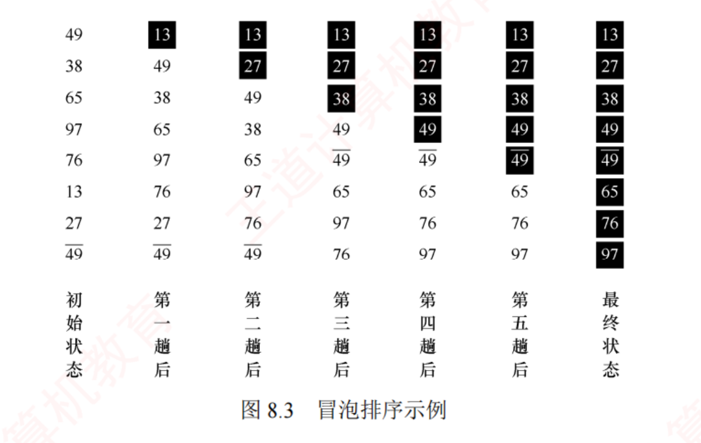
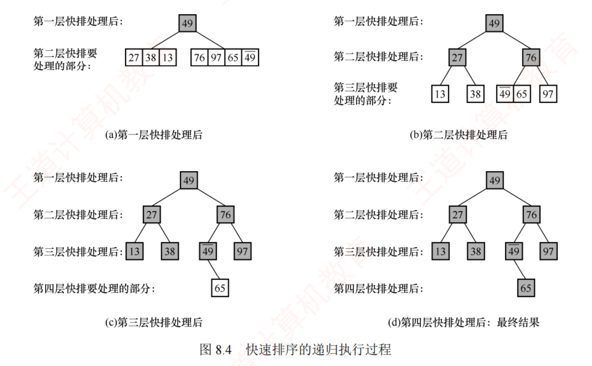
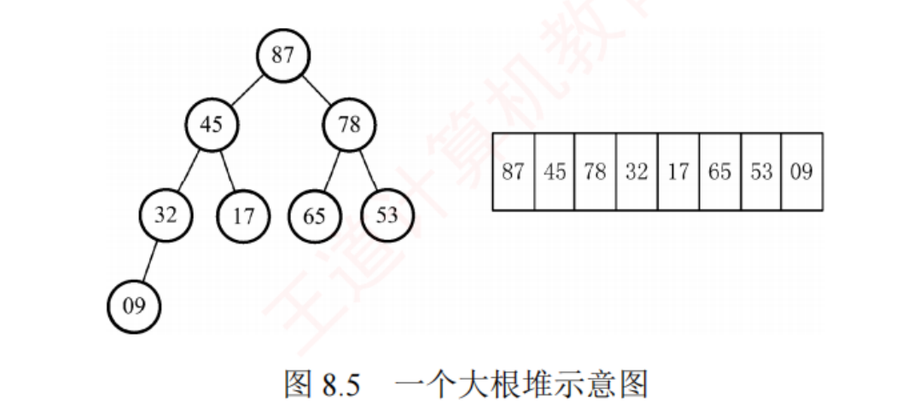
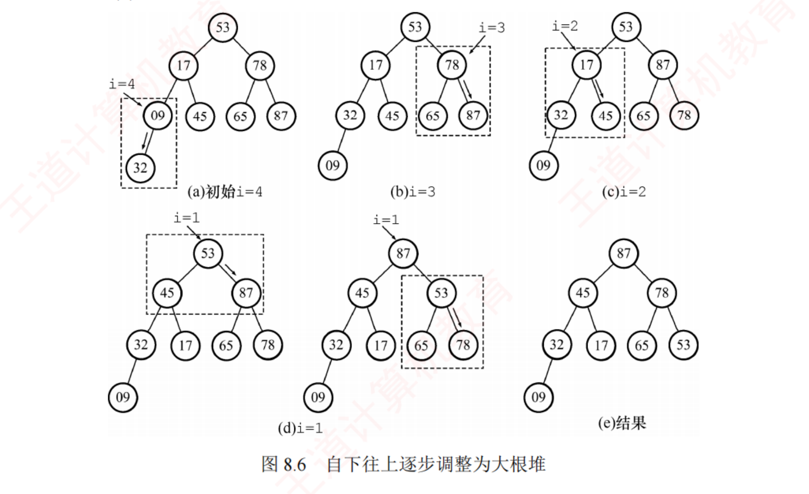
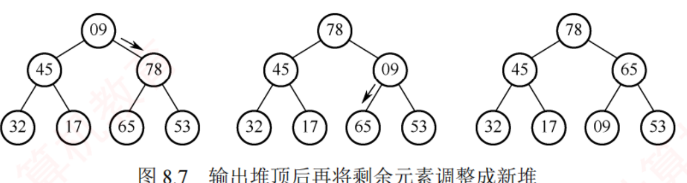
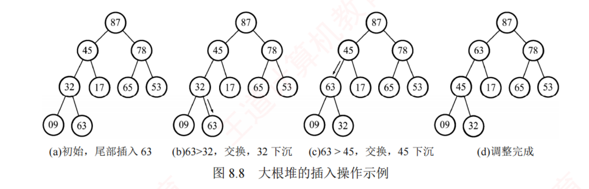
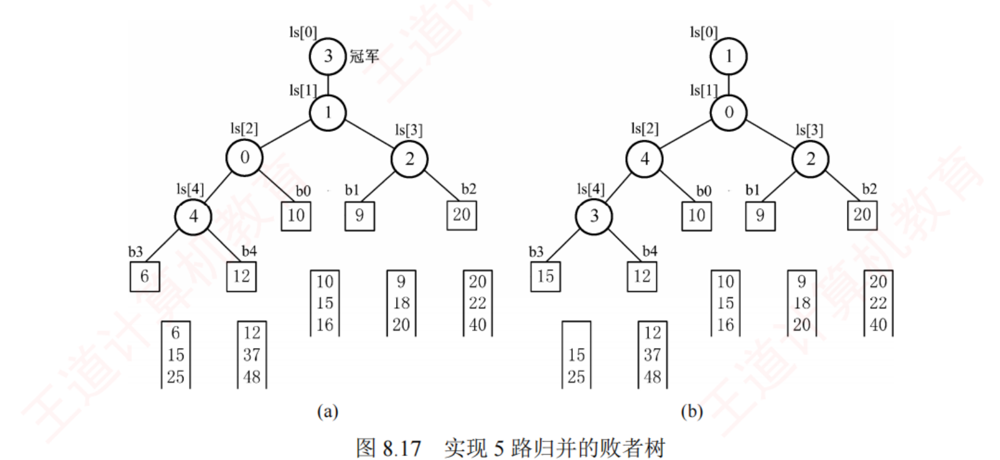
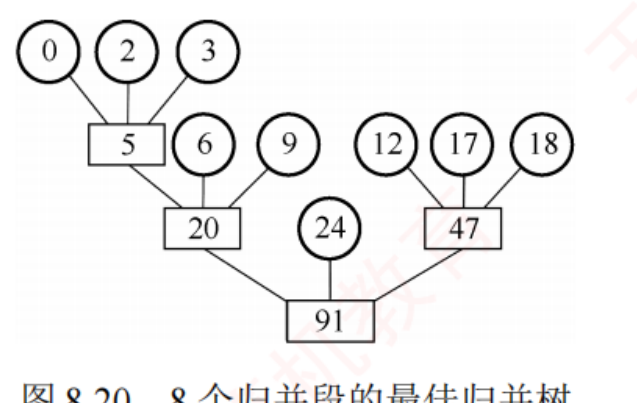

← 返回 408 复盘中心
怎么读这一页： 正文是书上的内容，我只做了结构重排和取舍 ；真正值钱的是五类批注 ——
必记结论 （🟡 筛 ：这句考场上要能默写）、
我的补讲 （🔴 挖 ：书上说 X → 潜台词是 Y → 所以能考 Z）、
陷阱 、
知识串联 （🔵 串 ：本页这个点在组原 / OS / 网络 的哪里还会遇到）、
背景灰化 （⬜ 这段考试不碰，可以三分钟带过——不许整节都是重点，全是重点就等于没有重点 ）。综合大题按「想 → 写 → 校」三层写 ：💭 思路 （动手前 看，讲审题信号与为什么走这条路）→
✍️ 考场卷面 （只 写考场上真要落笔的字，⛳ 标采分点）→
📌 批注 （写完对照，讲扣分点与提速）。看完思路就合上页面自己写，别直接翻卷面 ——卷面是用来对照的，不是用来读的。📄 p.N 点开跳到原书对应页（它是溯源锚点 ，不是"这里没写你自己去看"；凡考点内容本页都已讲全）；紫色 考点追踪 是王道标注的真题年份。
本章从原书裁切了 10 张插图 （冒泡黑块图 / 快排递归四面板 / 大根堆 / 建堆五面板 / 输出堆顶三面板 / 堆插入四面板 / 5 路败者树两面板 / 三棵归并树），其余排序过程一律改写成可搜索的等宽表格 ——排序这一章的"图"本来就是表，裁成图片反而查不了。图看不清就点一下 （300 dpi 原图）。另：本页里凡是写"实测""程序复算""穷举"的数字，都是我在写这 148 道题与本轮回炉时真跑出来的 ，不是抄书，也不是估算；本轮新写的 13 个 C 模板全部 gcc 编译运行并随机对拍过（合计约 270 万组，零失配）。
📄 p.331
本章定位
我的补讲 ★★★ · 开工先看这张表：本章的分数不是均匀撒在 62 页上的
我按
.pg 徽章把 62 页拆到节（正文页 + 紧随其后的习题页），再用练习系统本章 148 题的
exam 字段数真题，得到下面这张表。
它推翻了"堆和快排是重点"这个直觉。
节 页数 题数 真题 真题/页 综合题（其中真题） 覆盖年份数 8.1 基本概念 2 3 0 0 0 0 8.2 插入排序 8 22 4 0.50 2（0） 4 8.3 交换排序 11 24 7 0.64 4（1） 7 8.4 选择排序 12 29 8 0.67 8（1） 8 8.5 归并 / 基数 10 23 7 0.70 3（1） 5 8.6 比较及应用 7 26 11 1.57 ⭐4（0） 9 8.7 外部排序 10 21 5 0.50 5（1） 5
书上说 「堆排序、快速排序和归并排序是本章的重点与难点」。
潜台词是 ：那是
学 的难点，不是
丢分 的重点——学它们要花的时间最多，但真题落点最密的地方是只有
7 页正文加习题的 8.6 ：
1.57 道真题/页，是我在数构八章里逐节量过的所有节中最高的一个 （对照 ch7 的 7.4 B 树 0.92、ch5 的 5.5 哈夫曼 0.86、ch6 的 6.4 图的应用 0.78），而且
一节自己就覆盖 2009–2025 里的 9 个年份 。
所以能考什么 ：8.6 里没有一个新算法，全部是"把前五节横过来问"，它考的是
你有没有把表 8.1 背成条件反射 。
⟹
本章的读法与刷法必须分开 ：
读 还是按 8.2 → 8.7 顺读（8.6 是回收站，前五节没读它无从谈起）；
刷与背 的顺序是
8.6 吃透 → 8.4 + 8.3 练手算 → 8.5 → 8.7 → 8.2 扫 → 8.1 三分钟 。
（跨科对照：四科里我量过的最密的一节是 OS 的 1.3 运行环境 1.64 道/页，8.6 的 1.57 排第二，高于网络 6.2 的 1.14。）
我的补讲 ★★ · 本章在全书八章里的坐标（三个"第一"，都跑脚本核过）
书上说 本章"考试通常以选择题形式考查"。
潜台词是 ：分散、稳定、每年都有——不像 ch6 图那样靠一道大题定生死。跑一遍全书八章的
exam 统计：
ch1 ch2 ch3 ch4 ch5 ch6 ch7 ch8 页数 13 50 46 15 70 70 67 62 真题数 7 6 27 3 40 41 41 42 真题/页 0.54 0.12 0.59 0.20 0.57 0.59 0.61 0.677 覆盖年份 7 4 17 3 17 17 17 17
所以能考 Z ：①
真题绝对数 42 道，八章第一 ；②
真题密度 0.677，八章第一 （ch7 0.61、ch6 0.59、ch3 0.59 紧随其后）；③
2009–2025 十七年零缺口 ——八章里有这个待遇的共五章（ch3 / ch5 / ch6 / ch7 / ch8），本章是其中密度最高的一个。
结论只有一句：这一章一年都没漏考过，不存在"押它今年不考"的可能。
我的补讲 ★★ · 本章的四道综合真题，是四个不同的样子 ——没有一道能靠套模板过
148 题里有
26 道综合题 ，其中
统考综合真题 4 道 ，分居四节，而且
四道四种交卷形态 ：
真题 落在 要你交什么 关键动作 2016 集合等分8.3 交换 写代码 （标准三问：思想 / 代码 / 复杂度）快速选择 quickselect 2021 比较计数排序8.5 归并基数 读代码 （给你一段程序，问输出 / 次数 / 稳定性）盯住一个 < 与 <= 2022 Top-K8.4 选择 只写思想 （题干原话"不需要编程实现 "）论证"为什么这个最快" 2023 置换-选择8.7 外部排序 纯手推 （一行代码都不写）老实推完 19 步 + 说清两个界
书上说 算法题要"熟练编写常用排序算法的关键代码"。
潜台词是 ：只背代码不够——本章十七年
只有 2016 那一道 真的要你交代码。
所以能考 Z ：备考要按四种形态分别练——
能写（2016 类）· 能读（2021 类）· 能论证（2022 类）· 能手推（2023 类） 。四者里最容易被忽略的是第三种：
2022 那道题不写代码，分全给在"平均比较次数为什么是 O(n)"的论证上 ，写了一堆代码却说不清代价，照样丢分。详见本章新增的
8.8 综合题总攻 。
考纲内容 ：（一）排序的基本概念；（二）插入排序——直接插入排序、折半插入排序、希尔排序；（三）交换排序——冒泡排序、快速排序；（四）选择排序——简单选择排序、堆排序；（五）2 路归并排序；（六）基数排序；（七）外部排序；（八）排序算法的分析和应用。
王道的复习提示 ：堆排序、快速排序和归并排序是本章的重点与难点。 要深入掌握各类算法思想、排序过程（能动手模拟 ）及其特性，包括初始状态的影响、时空复杂度、稳定性和适用场景 。考试通常以选择题 形式考查不同算法的对比。此外应能熟练编写常用排序算法的关键代码，并能根据序列特点结合算法特性选择最合适的排序方法 。
我的补讲 · 这一章的重量与打法
62 页、148 道课后题、
42 道统考真题——真题密度全书之最 （第 7 章 41 道用了 67 页，本章 42 道只用 62 页）。而且分布极不均匀：
8.6 一节 26 题里就有 11 道真题 ，是全书真题最密的一节；8.4 选择排序 8 道、8.3 交换排序 7 道、8.5 归并/基数 7 道。
没有一节可以跳，但 8.6 要单独当一节课上。
这一章的性格与前七章完全不同 ：前面考"这个结构长什么样"，本章考"
这个过程走到第几步是什么样 "。所以全章真正的主线只有两根——
① 动手模拟一趟的结果；② 表 8.1 的五列（最好/平均/最坏/空间/稳定） 。前者靠手，后者靠背。
读法建议 ：每读完一种算法，立刻做三件事——
(1) 拿 {49,38,65,97,76,13,27,49} 这八个数手推一趟 （全书示例都用它，推熟了各算法的中间态就能互相对照）；
(2) 在表 8.1 上把这一行填出来 ；
(3) 问自己"它每趟能不能定死一个元素的最终位置" ——这一问单独撑起了 2009/2010/2012/2014/2019 五道真题。
配套动手 ：
排序过程模拟器 （八种内部排序单步回放 + 建堆/插删 + 快排双指针 + 败者树 + 置换-选择 + 最佳归并树）、
练习系统第 8 章 148 题 、
套路库 ch8 卡 。
8.1 排序的基本概念
📄 p.331–332
知识串联 · 「排序」是四科的公共动作，本章学的是它的通用算法
→ 组原 ch3 Cache 的替换算法 要在若干行里挑一个"最该淘汰的"——这就是 8.4 的选最值 ；LRU 的实现（计数器 / 堆栈法）与优先队列 同构（8.4-综7）。→ OS ch2 短作业优先 SJF / 优先级调度 的就绪队列，本质就是一个按服务时间（优先级）排序的优先队列 ——OS 那边不讲怎么实现，实现就在本章 8.4.2。→ OS ch5 磁盘调度 SSTF / SCAN 是"每次选最近的那个"，与简单选择排序 同一个动作；而 8.7 外部排序的全部代价模型，就建立在 OS 那边的寻道 + 旋转 + 传输 三段式上。→ 网络 ch4 路由表的最长前缀匹配 要在若干候选里挑一条——挑法与本章一致；分组重排序缓冲 就是一次小规模归并。→ 数构 ch7 排序是查找的前提 ：折半查找、B 树、判定树全部以"表已有序"为条件。本章和第 7 章合起来才是完整的一句话：先排好，才查得快。
排序 ：把表中元素重新排列，使其按关键字有序。形式地说，输入 n 个记录 R1 …Rn ，输出输入序列的一个重排 ，使 k′1 ≤ k′2 ≤ … ≤ k′n 。本书凡未特别注明，默认排成非递减序列。 稳定性 ：若 keyi = keyj 且排序前 Ri 在 Rj 之前，排序后 Ri 仍在 Rj 之前，则算法稳定 ，否则不稳定。内部排序 ：排序期间元素全在内存；外部排序 ：元素装不进内存，需在内外存之间频繁交换数据。内部排序的两种基本操作是比较 与移动 。⚠️ 但并非所有内部排序都基于比较 ——基数排序 就是典型的非比较排序。
五大类：插入、交换、选择、归并、基数。性能由时间复杂度 与空间复杂度 决定，时间复杂度通常取决于比较与移动的次数 。
【注意】大多数内部排序算法更适用于顺序存储的线性表。
必记结论 · 开篇就要立住的三句话
① 稳定性不能用来衡量算法优劣 ，它只是算法的性质之一。当待排关键字互不重复时，排序结果唯一，稳不稳定完全无关紧要。 ② 证明一个算法不稳定，只需举出一组 关键字实例 ——不需要任何推导。书上给的三个反例都只有 2~3 个数：简单选择 {2, 2 , 1}、快排 {3, 2 , 2}、堆排 {1, 2 , 2}。考场上被问"为什么不稳定"，直接甩这三个数。 ③ 拓扑排序不是内部排序 （8.1 第 01 题）——它把有向图结点排成线性序列，虽然也在内存里做，但不满足上面"按关键字重排"的定义 。
陷阱 · "稳定"与"绝对位置不变"是两回事
8.1 第 02 题的干扰项：稳定性是"关键字相同的元素保持原来的相对位置 "，不是"绝对位置 （下标 i）不变"——绝对位置不变那叫没排序。"顺序表上的排序算法在链表上也都可以实现"是错的 ——折半插入、希尔、快排、堆 这四个要"随机访问 / 跳着走"，链表上做不了。这四个名字本章会反复出现，现在就记下来 。
背景 · 8.1 这两页里，只有三行是要背的
排序的形式化定义（输入 n 个记录、输出一个重排使关键字非递减）、五大类的名字、"内部排序的两种基本操作是比较与移动" ——王道用了两页写这些，但十七年真题从没考过定义的字面表述 ，只考过三样：稳定性的定义 （2 道）、拓扑排序算不算内部排序 （1 道）、哪些算法链表上做不了 （本章反复出现）。其余段落三分钟扫过即可 ，包括"排序算法的性能由时间与空间复杂度决定"这类通用话术——它在表 8.1 里以数字的形式再出现一遍，那时候再记不迟。
我的补讲 ★★ · "链表上做不了的四个"要在 8.1 就钉死，它是本章出现频次最高的一条线
书上说 （8.1 第 03 题解析）"使用链表也可以进行排序，只是有些排序算法不再适用"。潜台词是 ：书把名单藏在解析里没列全，而这份名单在本章至少被考了三次。完整名单只有四个：折半插入、希尔、快排、堆 ——记法是「要跳着走的都不行」 ：折半要算 mid、希尔要跨 dk、快排要 --high 回退、堆要按 2i / i/2 跳。所以能考 Z （三处落点，一条判据全通）：① 2011 真题 问快排宜用什么存储 ⟹ 顺序；② 2017 真题 问改成链式后哪些算法效率会降 ⟹ 选项里出现的希尔与堆；③ 2016 真题 问 10TB 数据用什么排 ⟹ 归并（因为另外三个候选希尔 / 堆 / 快排恰好全在这份名单里，磁盘上更跑不动）。反过来，链表上"更划算"的是插入类与归并类 ——直接插入在链表上只改指针、不移动元素 ，归并只需顺序访问。书 8.6.2 第 6 条那句"记录本身信息量大时用链表存储"说的就是这个。
知识串联 · 「稳定性」这个概念，只在数构里叫这个名字，别处叫别的
→ 数构 ch7 散列表的拉链法插入到表头还是表尾 ，决定了同义词的相对次序——这就是散列表版的稳定性。→ OS ch2 调度算法的"饥饿"与 FCFS 的公平性 ：同优先级的进程按到达顺序服务，就是调度版的稳定；8.4-综7 那道优先队列题特意实测过：同 priority 的元素出队顺序不是先进先出 ——因为堆不稳定。→ 网络 ch5 TCP 保证字节流按序交付 ，也是同一族的"不许乱序"要求。但要背住书上的另一半：稳定性不能用来衡量算法优劣。 它只在"记录有多个字段、要按多关键字排"时才值钱——见 8.5 第 11 题（先排次位再排主位、后一趟必须稳定），那正是基数排序的原理。
8.2 插入排序
基本思想 ：每次将一个待排记录，按其关键字大小插入到前面已排好序的子序列 中，直到全部插入完毕。由此引申出三种：直接插入排序、折半插入排序、希尔排序。
知识串联 · "内存装不装得下"这条线，四科各站一段
→ 组原 ch3 存储器层次结构 （寄存器 → Cache → 主存 → 外存）：每往下一层容量涨、速度掉，"装不下就往下一层放"正是内排/外排分界的物理来源 。→ OS ch3 虚拟内存 把"装不下"这件事对程序隐藏了——但外部排序偏偏不能依赖虚存 ：靠缺页去换页的话，访问模式是随机的、缺页率极高；外排要自己管缓冲区，就是为了把 I/O 变成顺序的、可预测的 。→ OS ch5 缓冲区管理 ：k 路归并的 k+1 个缓冲区，就是 OS 那边"多缓冲"的一个应用。→ 网络 ch5 接收窗口 rwnd 同样是"我这边缓冲区只有这么大"的表达。一句话：内排关心"比较与移动"两个动作，外排关心"读了几块、写了几块"——量的东西一换，最优算法就跟着换（归并从内排里的老三变成外排里的独苗）。
8.2.1 直接插入排序
📄 p.333–334
我的补讲 ★★★ · 直接插入排序有一个书上没给的闭式 ：比较次数也能不排就算出来
书上说 （8.2 第 05 题解析）"越接近正序的序列，直接插入排序的比较次数就越少"，然后一趟一趟地数给你看。
潜台词是 ：书只给了定性判断和逐趟硬数，没给公式——而这个量其实有闭式。我把 n = 2…9 的
全部 409 113 个排列 穷举了一遍，两条式子零反例：
移动（后移）次数 = 逆序对数 比较次数 = (n−1) + 逆序对数 − 被插到最前端的元素个数
第二条里的减项容易漏：某个元素一路挪到了下标 1（即
j 走到 0），它就
省掉了最后那次"失败的比较" ——因为再往左只剩哨兵
A[0]，而题目一律声明"哨兵的比较不计入"。
所以能考 Z ：这两条能
不排序直接出答案 ，把逐趟硬数的时间省掉。回代验证三道原题——
8.2 第 05 题 四个选项的逆序对数是 17 / 2 / 5 / 18，插到最前端的个数是 2 / 0 / 1 / 3，代入得比较次数
22 / 9 / 11 / 22 ，与书答给的 B = 9、C = 11 完全一致（书没算的 A、D 也补齐了）；
8.6 第 09 题 （{1,2,3,4,5,10,6,7,8,9}）逆序对 4、无元素插到最前端 ⟹ 9 + 4 =
13 ，与书答一致；
8.2 第 01 题 n = 5 最坏 = 完全逆序 ⟹ 逆序对 10、插到最前端 4 个 ⟹ 4 + 10 − 4 =
10 ，与书答一致。
知识串联 · "插入" 这个动作在前七章已经练了五遍
→ 数构 ch2 有序单链表的插入 ：找位置 + 改指针，不需要"后移" ——这正是"直接插入排序在链式存储下无须移动元素"的出处。→ 数构 ch5 BST 的插入 与堆的插入 ：前者往下找空位、后者往上冒泡，都是"先定位再落位"的两段式。→ 数构 ch7 B 树的插入 （满了就分裂）与散列表的插入 （冲突了就探测）；7.2.2 折半查找的 mid 取法 下一节（8.2.2）就要原样搬过来用。一句话记全 ：插入类排序 = 把「有序表插入」这一个操作重复 n−1 次；它的代价上限，就取决于"定位"和"腾位"哪一个更贵——顺序存储腾位贵（O(n) 后移），链式存储定位贵（不能折半） ，两头堵死，所以插入排序逃不出 O(n²)。
某时刻的表状态：有序序列 L[1…i−1] | L(i) | 无序序列 L[i+1…n] 。把 L(i) 插进去分三步：① 查找 L(i) 在 L[1…i−1] 中的插入位置 k；② 把 L[k…i−1] 依次后移一位 ；③ 把 L(i) 放到位置 k。从 L(2) 做到 L(n)，共 n−1 趟 ，原地排序 。
void InsertSort(ElemType A[],int n){
int i,j;
for(i=2;i<=n;i++) //依次将A[2]~A[n]插入前面已排序序列
if(A[i]<A[i-1]){ //若A[i]关键码小于其前驱，将A[i]插入有序表
A[0]=A[i]; //复制为哨兵，A[0]不存放元素
for(j=i-1;A[0]<A[j];--j) //从后往前查找待插入位置
A[j+1]=A[j]; //向后挪位
A[j+1]=A[0]; //复制到插入位置
}
}
趟 序列（括号内为已排好的有序区） 初始 49 38 65 97 76 13 27 4̄9 i=2 插 38 38 49 65 97 76 13 27 4̄9 i=3 插 65 38 49 65 97 76 13 27 4̄9 i=4 插 97 38 49 65 97 76 13 27 4̄9 i=5 插 76 38 49 65 76 97 13 27 4̄9 i=6 插 13 13 38 49 65 76 97 27 4̄9 i=7 插 27 13 27 38 49 65 76 97 4̄9 i=8 插 4̄9 13 27 38 49 4̄9 65 76 97
（图 8.1 重排。绿色为有序区。末趟 49 与 4̄9 的相对次序没变 ⟹ 稳定 。）
空间 O(1)；稳定 ；顺序、链式都能用 ，链式存储时无须移动元素 （只改指针）。最好（已有序） ：每趟只比 1 次、不移动 ⟹ O(n) ，总比较 n−1 次 。最坏（完全逆序） ：第 i 趟比 i−1 次、移 i−1 个 ⟹ 比较 n(n−1)/2 次 ⟹ O(n²) 。平均 ：比较与移动均约 n²/4 ⟹ O(n²)。
必记结论 ★ · "后移次数 ≡ 逆序对数"
直接插入排序元素后移的总次数，恰好等于原序列的逆序对个数 （我用 6 个数的全部 720 种排列穷举验证过，无一例外）。冒泡排序的交换次数也恰好等于逆序对数。 越接近正序越少 （8.2 第 05 题：B 比 9 次、C 比 11 次）。
知识串联 · A[0] 这个"哨兵"，是数构里反复用的同一个技巧
空间换时间 多花一个格子，换掉循环里的一个边界判断——→ 数构 ch2 带头结点的单链表 ：多一个结点，换掉"删除首元素要特判"的分支。→ 数构 ch7 顺序查找的哨兵 ST.elem[0]=key：多存一个副本，换掉 i>=1 这个判断，循环体从两个条件降到一个 。→ 本章 8.7.3 败者树的 b[k] 存 −∞ 哨兵 ：让"某段已空"不必单独处理。但哨兵不是到处能用 ：希尔排序里 A[0] 只是暂存单元、不是 哨兵 ——子表的第一个元素下标是 1…dk，走到头时 j 会变成 ≤ 0 而不是 0，所以必须显式写 j>0 （书上代码的注释专门强调了这一点）。默写时漏掉 j>0 是本节最常见的失分。
8.2.2 折半插入排序
📄 p.334–335
考点追踪：直接插入排序与折半插入排序的比较（2012）
知识串联 · 折半插入是"两段式改进"的样板：定位与腾位可以分开优化
直接插入把"找位置"和"腾位置"揉在一个循环里 （边比边挪）；折半插入把它们拆开 ——先用 O(log₂i) 找位置，再一次性挪。结果是比较降了、移动没降，总量级不变。 这个"拆开只优化了一半"的教训在别科同样出现：→ 组原 ch3 Cache 只降低了"取指令/取数据"的平均时间，没降低指令条数 ——所以 CPU 时间的三项里只动了一项；→ 组原 ch5 流水线只提高吞吐率，不缩短单条指令的执行时间 。→ OS ch3 快表 TLB 只省了"查页表"那一次访存，没省"访问数据"那一次 。→ 网络 ch3 加大帧长能提高信道利用率，但改不了传播时延 。方法论：优化前先把总代价拆成几项，看清楚自己动的是哪一项、它占多大比重。 折半插入动的是"比较"，而 O(n²) 是"移动"贡献的——动错了地方，量级就不会变。
我的补讲 ★★ · 订正一个常见的过度概括：折半插入的比较次数并非"恒定"，只是"波动极小"
书上说 （8.6 第 10 题解析）"折半插入排序每趟的比较次数都为 O(log₂m)，因此总比较次数也是确定的 "。潜台词是 ：这句话在数量级 上对，但在次数 上并不严格——折半查找的比较次数取决于每一趟落到判定树的哪一层，是会变的。实测：n = 8 全排列 ，折半插入的比较次数取值为 13 ~ 17（5 种取值） ；n = 12 时是 25 ~ 33（9 种取值） ，上界恰是 Σ⌈log₂i⌉ 。对照真正"恒定"的简单选择：n = 8 时 40 320 个排列全部等于 28，只有一个取值 。所以能考 Z ：8.6 第 10 题的题干原话是"总比较次数大致 相同"——"大致"两个字就是题眼 ，命题人自己也知道不是严格相等。答题按书上口径写"与初态无关"，但心里清楚它指的是「波动 4~8 次」而不是「一个数」。真正一个数都不动的只有简单选择排序。
我的补讲 ★★ · 折半插入有一个反直觉的方向：输入越有序，它反而比得越多
书上说 折半插入是对直接插入的"改进"。
潜台词是 ：这个改进只在
平均与最坏 情形成立，
最好 情形反而是倒退。实测 n = 1000：
初态 直接插入 比较 折半插入 比较 谁赢 已升序 999 （= n−1）8977 直接插入，赢 9 倍 随机 255 645 8601 折半，赢 30 倍 已逆序 501 498 7987 折半，赢 63 倍
根因一句话：
直接插入是"边比边走"，有序时第一次比较就停（每趟 1 次）；折半插入是"不管三七二十一先折半到底"，每趟固定 ⌈log₂i⌉ 次。 顺带看出
折半插入在已逆序时比得最少 （7987 < 8977）——因为逆序时
high 每次都被压到左端，路径更短。
所以能考 Z ：
2012 真题 问两者"可能的不同之处"，答案是"元素之间的比较次数"（D）——这道题只问"不同"，不问"谁少"；
一旦题干加上"基本有序"四个字（如 8.2 第 02 题、8.6 第 09 题），赢家立刻换成直接插入。
背景 · BInsertSort 这段代码，十七年一次都没让默写过
折半插入排序的 12 行代码 看懂即可，不必默写 ：8.2 一节 4 道统考真题（2012 / 2014 / 2015 / 2018）全是选择题，0 道综合真题 ，其中只有 2012 那道涉及折半插入，问的还是"和直接插入哪里不同"这种对照题。if(A[mid]>A[0]) high=mid-1;——严格大于才往左 ，这一个符号就是它稳定性的全部来源（上一块已讲）。其余的 low/high/mid 收敛过程与第 7 章折半查找一模一样，那边已经练熟了。
知识串联 · 这里的 mid=(low+high)/2 就是 ch7 折半查找的那一行
→ 数构 ch7 7.2.2 折半查找 ：同一个 mid 取法、同一棵判定树 、同样的 O(log₂n)。区别只有终点——查找找不到就返回失败，折半插入"找不到"恰恰是常态，它要的是 high+1 这个插入位置 。→ 数构 ch7 判定树 还会在 8.6.2 第 4 条以另一副面孔出现：基于比较的排序都可用判定树描述，由此证出 Ω(n log₂n) 下界 ——排序的下界和查找的树高是同一个 log。→ 组原 ch3 Cache 的组内并行比较 是"用硬件把 log₂n 次比较压成 1 次"；→ 网络 ch4 路由表的二分前缀查找 同理。凡是"每比一次砍一半"，代价就是 log₂。
思想：把"边比较边移动"拆成两段 ——先用折半查找定位置，再统一后移 。
void BInsertSort(ElemType A[],int n){
int i,j,low,high,mid;
for(i=2;i<=n;i++){
A[0]=A[i]; //将A[i]暂存到A[0]
low=1;high=i-1; //设置折半查找的范围
while(low<=high){ //折半查找(默认递增有序)
mid=(low+high)/2; //取中间点
if(A[mid]>A[0]) high=mid-1; //查找左半子表
else low=mid+1; //查找右半子表
}
for(j=i-1;j>=high+1;--j)
A[j+1]=A[j]; //统一后移元素，空出插入位置
A[high+1]=A[0]; //插入操作
}
}
必记结论 ★★ · 一个 > 定稳定性（本章出现三次的同一考点）
if(A[mid]>A[0]) high=mid-1; ——只有严格大于才往左走，相等时往右（low=mid+1） ，于是相同关键字被插到已有的那个后面 ，稳定性由此而来。把 > 改成 >= 就立刻不稳定。 8.5 归并里的 if(B[i]<=B[j]) 、2021 真题 cmpCountSort 里的 a[i]<=a[j] （我实测：原版 3000 组数据里 2492 组不稳定，改成 <= 后 0 组）。三处同源，见到"某个比较符号"就要想稳定性。
空间 O(1)；稳定 ；仅适用于顺序存储 （链表折不了半）。比较次数降为 O(n log₂n) 且只取决于 n、与初态无关 ；但移动次数一点没少，仍依赖初态 ⟹ 时间复杂度仍是 O(n²) 。
陷阱 · 2012 真题的四个选项，三个都是"相同"
2012 真题 问折半插入与直接插入"可能的不同之处 "，答案 D（元素之间的比较次数） 。逐项：总趟数 都是 n−1（只由 n 定）、移动次数 都由初态定且相同、辅助空间 都是 O(1)——只有比较次数不同 。我写题库时抓到的一个口径漏洞 ：书说两者"移动次数相同"，指的是"元素后移 "这个动作逐个相等；但若按两段代码字面 统计，InsertSort 多了一道门卫 if(A[i]<A[i-1])，有序时它直接跳过、连 A[0]=A[i] 都不做，而 BInsertSort 每趟都要暂存 + 回填。考试按书上口径答"相同"，但心里知道差在哪。
我的补讲 ★ · InsertSort 默写的三个易错点（本章唯一必须逐字默的一段代码）
书上给的 10 行代码 看着最简单，但正是因为简单，默写时最容易在细节上失分。三处：
门卫 if(A[i]<A[i-1]) 不能省。 省了功能不变，但已有序时会从 O(n) 退化 ——每趟都要暂存 + 回填。2012 真题解析里"移动次数相同"的口径争议就是从它来的。 内层循环 for(j=i-1;A[0]<A[j];--j) 不写下界 。 这不是疏漏，是哨兵 在起作用：A[0] 存着待插元素，比到 j=0 时 A[0]<A[0] 为假，自动停。而希尔排序里 A[0] 不是哨兵，必须写 j>0 ——两段代码只差这一个条件，别串。落位写 A[j+1]=A[0] 而不是 A[j]=A[0]。 循环退出时 j 指向的是最后一个不大于待插元素的位置 ，要插在它后面 。写错这一处，相同关键字的次序就反了 ⟹ 顺带把稳定性也丢了。
所以能考 Z ：本章十七年
没有一道题要求默写直接插入排序 ，但它是
希尔排序（8.2.3）和 8.6-综2（两段有序表合并）的组件 ——那两处才是真会让你写的地方，而它们用的就是这 10 行。
默一遍这三处，两道综合题的代码分就稳了。
8.2.3 希尔排序
📄 p.335–336
考点追踪：希尔排序的特性与分析（2014、2015、2018、2025）
我的补讲 ★★★ · 本轮实测推翻一句常见误背：希尔省的是移动 ，不是比较
书上说 希尔排序"先跨度大、后期接近有序，显著减少比较与移动"（8.6 归纳总结第 2 条）。
潜台词是 ：这句把两件事捆在一起说了，但它们的成立条件完全不同。我跑了两组对拍（增量取书上代码的
n/2 逐次折半）：
规模 希尔的移动 多于直接插入的组数 希尔的比较 多于直接插入的组数 n = 8（全排列 40 320 组） 0 （91.9% 更少 / 8.1% 相同）27 070（67.1% ） n = 10（随机 3000 组） 0 1486（49.5%） n = 20（随机 3000 组） 0 470（15.7%） n = 50 / 100 / 200 / 500（各 3000 组） 0 0
⟹
合计 58 320 组，希尔的移动次数一次都没多于直接插入（零反例）；而比较次数在 n 小的时候经常吃亏，要到 n ≈ 50 才稳定占优。 最极端的是
已升序输入 ——希尔在比较上
永远 吃亏：n = 8 时 17 vs 7、n = 64 时 321 vs 63、
n = 1024 时 9217 vs 1023，差 9 倍 （两者移动次数都是 0）。
所以能考 Z ：这条实测把书上两句看似打架的建议接上了——
「n 中等（≤1000）用希尔」是冲着移动去的；「基本有序用直接插入」是冲着比较去的，两句都对，因为它们量的根本不是同一个东西。 回头看
8.6 第 09 题 （{1,2,3,4,5,10,6,7,8,9} 问谁比较次数最少）：实测直接插入 13 次、希尔 26 次——
整整两倍，正是本块结论的一个考题实例。
我的补讲 ★★★ · 反推增量的题分两类，别用错工具（三道真题各占一类）
书上说 （2014、2018 两道真题的解析）都是"看第 i、i+d、i+2d 个元素是不是有序"。
潜台词是 ：这两道题给的条件其实不一样，能用的工具也不一样。
分界线是"给没给原始序列" ：
只给结果 给了原序列 + 结果 典型题 2014 （第 18 题）、2025 （8.6 第 23 题）2018 （第 20 题）能用的工具 只能验证 ：逐个候选 d，查"下标模 d 同余的几串是不是各自递增"，不递增就否掉 可以正算 ：拿原序列直接做一趟 d，看结不结果对得上 易错点 验证是必要条件 ——通过的 d 未必真的产生过这个结果，好在选择题四选一足够用 别只做第一趟就交卷（8.2 第 12 题的干扰项 C 正是第一趟的结果）
所以能考 Z ：
2018 给了原序列 ⟹ 正算 d=5 得 (1,3,7,5,2,6,4,9,11,10,8) ✓、再算 d=3 得 (1,2,6,4,3,7,5,8,11,10,9) ✓ ⟹ 选
D（5, 3） ；
2014 只给结果 ⟹ 逐个验证，d=3 的三串 {9,13,20} / {1,7,23} / {4,8,15} 全递增，其余 d 都有一串不递增 ⟹ 选
B（3） 。
⚠️ 还有一招更快的
特判 ：若一趟只换动了少数几对，
直接看"谁和谁换了位置，下标之差就是 d" （8.2 第 08 题：9 与 −1 换、7 与 4 换，下标差都是 4 ⟹ d = 4，三秒出答案）。
知识串联 · 希尔的"分组 → 组内处理 → 缩小间隔"，是四科共有的分块与映射 枢纽
分块与映射 希尔把下标按 i mod d 分成 d 组，组内单独处理——这个"取模分组"在四科里到处都是：→ 组原 ch3 Cache 直接映射 ：行号 = 主存块号 mod 行数；组相联 ：组号 = 块号 mod 组数，组内再比。→ 数构 ch7 除留余数法散列 H(key) = key mod p——同一个动作，连"p 取质数以减少冲突"的理由都和"希尔的增量最好互质"同源。→ OS ch3 分页 ：页号 = 地址 / 页大小、页内偏移 = 地址 mod 页大小；→ 网络 ch4 子网划分 用掩码取前缀，也是"按位分组"。凡是"把一个大问题按 mod 切成若干互不干扰的小问题"，都是这一族。 希尔的特别之处在于它切完还要合并 ——最后一趟 d = 1 就是把所有组重新揉回一起。
我的补讲 ★ · 表 8.1 里希尔那一行为什么是空的（这个空格本身就是考点）
书上说 希尔排序"时间依赖于增量序列，n 在某个范围时约 O(n1.3 )，最坏 O(n²)"，表 8.1 的"平均"格里干脆留白。潜台词是 ：希尔排序的平均时间复杂度至今没有精确的数学表达式，最优增量序列是未解难题 ——留白不是书偷懒，是真的没有。所以能考 Z ：选择题里凡出现"希尔排序的平均时间复杂度是 O(n log₂n)"一律是错项 ；反过来，凡问"下列哪个算法的平均时间复杂度无法用精确表达式给出 "，答案就是它。希尔对 n log₂n 的拟合优度只有 0.63、对 n² 则直接为负 ，两个模型都套不上；同期堆 / 归并 / 快排对 n log₂n 的拟合优度都在 0.988 以上。这个"两头都拟合不上"的实测，正是书上那个空格的量化写照。
出发点 ：直接插入排序在基本有序 或数据量小 时效率高（可到 O(n)）。希尔排序就是冲着这两个条件造的，也叫缩小增量排序 ：先取增量 d1 < n，把下标相隔 d1 的记录分成一组，组内做直接插入排序 ；再取 d2 < d1 …直到 dt = 1，此时全表已高度有序，最后一趟完整的直接插入排序收尾。
void ShellSort(ElemType A[],int n){
//A[0]只是暂存单元，不是哨兵，当j<=0时，插入位置已到
int dk,i,j;
for(dk=n/2;dk>=1;dk=dk/2) //增量变化（无统一规定）
for(i=dk+1;i<=n;++i)
if(A[i]<A[i-dk]){ //需将A[i]插入有序增量子表
A[0]=A[i]; //暂存在A[0]
for(j=i-dk;j>0&&A[0]<A[j];j-=dk)
A[j+dk]=A[j]; //记录后移，查找插入的位置
A[j+dk]=A[0]; //插入
}
}
趟 序列（n = 10） 分组 初始 49 38 65 97 76 13 27 4̄9 55 04 — d₁=5 后 13 27 4̄9 55 04 49 38 65 97 76 {49,13}{38,27}{65,4̄9}{97,55}{76,04} d₂=3 后 13 04 4̄9 38 27 49 55 65 97 76 {13,55,38,76}{27,04,65}{4̄9,49,97} d₃=1 后 04 13 27 38 4̄9 49 55 65 76 97 全表
（图 8.2 重排。末行 4̄9 跑到了 49 前面 ——这就是书上举的"希尔不稳定"的实例。）
空间 O(1)；不稳定 ；仅适用于顺序存储 。时间依赖于增量序列 ，n 在常见范围时约 O(n1.3 ) ，最坏退化为 O(n²) 。⚠️ 最优增量序列至今是数学上的未解难题 ——所以表 8.1 里希尔那一行是空的，选择题出现"希尔排序的平均时间复杂度是 O(n log₂n)"一律错。
陷阱 · A[0] 在希尔里不是哨兵
直接插入排序靠 A[0] 当哨兵，循环 for(j=i-1;A[0]<A[j];--j) 不写下界也不会越界。希尔里 A[0] 只是暂存单元 ——子表的第一个元素下标是 1…dk，走到头时 j 会变成 ≤ 0 而不是 0，所以必须显式写 j>0 。默写代码漏这个条件是本节最常见的失分点。
必记结论 ★★ · 反推增量：只查"下标模 d 同余的那几个是不是各自有序"
2014、2018、2025 三道真题都是同一个动作：给你一趟（或两趟）的结果，问增量是多少 。打法固定——对每个候选 d，把下标 1, 1+d, 1+2d… 拎出来看是不是递增；再看 2, 2+d… 。有一组不递增就否掉。2018 真题 （初始 8,3,9,11,2,1,4,7,5,10,6）：第一趟 d=5 分成 {8,1,6}{3,4}{9,7}{11,5}{2,10}，第二趟 d=3 分成 {1,5,4,10}{3,2,9,8}{7,6,11} ⟹ 答案 D（5, 3） 。2025 真题第 23 题：书上解析末句"符合增量缩小至 1 的结果"是错的。 d=1 会直接给出全局有序的 5,10,15,20,25,30,35,40,45，而题给的第 2 趟里 25 在 20 前、40 在 35 前 。我逐 d 反推确认真实增量序列是 3 → 2 → 1 （第 2 趟是 d=2 不是 d=1）。答案 A 不受影响，但别把"第 2 趟 d=1"写进卷面。
我的补讲 ★★ · 8.2 一整节的真题重心只有一个词：希尔
书上说 插入排序有三种（直接、折半、希尔）。潜台词是 ：三种的考频完全不成比例 。本节 4 道统考真题的分布：2014（反推增量）· 2015（组内用什么算法）· 2018（反推两趟增量）三道全在希尔 ，只有 2012 那道对照题涉及折半插入，直接插入排序一道真题都没单独考过 。所以能考 Z ：① 希尔是本节唯一的直接失分点 ，而它的考法只有一种——给结果反推增量 （三道真题一模一样，其中 2015 那道甚至只问"组内用什么排序"）；② 直接插入排序不单独考、却处处都在 ——它是希尔的组件、是 8.6 选型题的常客（2020、2022 两道真题都拿它当主角）、是"基本有序"的标准答案；③ 折半插入只在对照题里出现 。本节 8 页的时间分配：希尔 4 成、直接插入 4 成（为 8.6 打底）、折半插入 2 成。 另注意本节 0 道综合真题 ——8.2-综1/综2 两道都是课后的过程演示题，写法见 8.8 的手算模板 A。
我的补讲 ★★ · "链式存储无须移动元素"救不了复杂度，救的是常数
书上说 直接插入排序"链式存储时无须移动元素"。潜台词是 ：很多人由此推出"那链表上的插入排序更快" ——错，量级一点没变 。拆开看：链表省掉的是移动 （改指针即可），但比较次数一次都没少 （仍要从后往前逐个比，且链表还不能从后往前，只能从头再扫一遍），总时间仍是 O(n²) 。所以能考 Z ：2017 真题 问"改成链式后时间效率会降低的是谁"，答案是希尔与堆 而不 包括直接插入——正因为插入排序的复杂度不变 （实测游标模型：直接插入每次访问平均走 1.33 个结点，n 翻 8 倍纹丝不动）。"不变"和"更快"是两回事，选项里两种说法都出现过。 记录本身信息量很大时 ——搬一条记录要拷贝几十上百字节，而改指针只要 8 字节。这时链表 + 插入类/归并类才是对的选择。
我的补讲 ★★ · "基本有序"这四个字，在本章有三个互不相同的用法
书上说 "基本有序时直接插入排序效率高"、"希尔排序后期序列基本有序"、"快排最坏发生在基本有序时"。
潜台词是 ：
同一个词在三处指的不是同一件事 ，混起来会互相打架：
出处 "基本有序"在这里指 后果 8.2.1 直接插入 逆序对数很少 后移次数 ≈ 0 ⟹ 时间趋于 O(n)（好事 ） 8.2.3 希尔的设计动机 大增量趟做完后，元素离最终位置都不远 最后一趟 d = 1 时几乎不用挪（好事 ） 8.3.2 快排的最坏情形 枢轴（首元素）恰好是极值 划分极不对称 ⟹ 退化到 O(n²)（坏事 ）
所以能考 Z ：三处共用一个词，
但选项里问的是哪一个，要看它跟哪个算法搭在一起 ——"基本有序 + 插入 / 冒泡"是好事（8.2 第 02 题、2022 真题），"基本有序 + 快排"是坏事（8.3 第 05 题）。
2022 真题的说法Ⅰ"大部分元素已有序"之所以能同时成为"选插入"和"不选快排"的理由，正是因为这一个条件对两者的作用方向相反。
知识串联 · 逆序对是"乱到什么程度"的度量，本章有三个算法直接读它
逆序对数 = 直接插入的后移次数 = 冒泡的交换次数 （两者都已穷举验证）；而简单选择的交换次数读的是另一个量：n − 置换环数 。三个算法读三种"混乱度"，这是本章最漂亮的一处结构。→ 数构 ch1 逆序对数的取值范围是 0 ~ n(n−1)/2 ，这正好解释了插入/冒泡的最好 O(n) 与最坏 O(n²)——复杂度的上下界，其实是这个度量的上下界 。→ 数构 ch5 逆序对数本身可以用归并排序在 O(n log₂n) 内求出 （归并时右段元素先出，就一次性贡献若干逆序对）——这是"用排序算法当计数工具"的经典技巧。→ 组原 ch1 这类"用一个数刻画输入的难易"的思路，与程序的指令混合比（instruction mix） 决定 CPI 是同一种方法论：算法的实际代价 = 结构性代价 × 数据特征 。一句话：问"某序列某算法要多少次"，先想"有没有一个能直接读出来的度量"，别硬跑。
8.3 交换排序
交换 ：根据两个元素关键字的比较结果，互换它们的位置。本节讲冒泡 与快速 ——冒泡实现简单、直接考得少，快排效率高应用广，是本章考查重点 。
我的补讲 ★★ · 冒泡有两种写法，中间结果完全不同——题干必须读清扫描方向
书上代码 是
for(j=n-1;j>i;j--)，即
从后往前 扫，每趟把
最小 的元素"浮"到前面。
潜台词是 ：另一种同样常见的写法是
从前往后 扫、每趟把
最大 的"沉"到后面，
两者的逐趟中间结果完全不同 ，而"反推算法"类的题恰恰是靠中间结果判断的。
王道代码（从后往前） 另一种（从前往后） 每趟定死 最小 值，放在前端 最大 值，放在后端 有序区长在 左边 右边 本章用它的题 8.3 第 08 题 （题干明写"从后往前"）2010 真题 （三趟结果末尾依次多出 88 / 16,88 / 12,16,88）
所以能考 Z ：
反推题看两端就能判方向 ——最值堆在右端就是"从前往后"，堆在左端就是"从后往前"。
题干若没写方向，两种都要试 （8.3 第 12 题就要求"按从大到小和从小到大分别讨论"）。⚠️
但无论哪种写法，交换次数都恒等于逆序对数、趟数与初态的关系也一样 ——变的只是中间态的样子。
⚠️ 还有一种是
双向冒泡（鸡尾酒排序，8.3 第 09 题） ：
一个方向算一趟 ，且
末尾必须再跑一趟零交换的确认趟 ，所以那道题的答案是 6 而不是 5。实测同一数组普通单向冒泡要 8 趟，双向只要 6 趟——这就是它"甩乌龟"的收益。
知识串联 · "常数因子"这件事，四科都在偷偷比它
书上说 快排"平均性能最优"的理由之一是"常数因子最小 "。这句在四科都有同构的表达：→ 组原 ch1 CPU 执行时间 = 指令数 × CPI × 时钟周期 ——同一个算法（指令数相同）在不同机器上快慢差几倍，差的就是后两项，这就是"常数因子"的硬件版 。→ 组原 ch3 Cache 友好性 ：快排是原地、顺序性尚可的，归并要来回搬辅助数组 ⟹ 实测 n = 20000 时归并的比较次数比快排还少（2.6×10⁵ vs 2.9×10⁵），耗时却是快排的 1.6 倍 ——差别全在搬运与缓存。→ 网络 ch5 吞吐量 vs 时延 ：两个协议同为 O(n) 的报文数，实际快慢取决于 RTT 与开销常数。做题时按渐进复杂度答（那是考纲要的），但要知道"同一量级里还有排名" ——8.3 第 06 题问"平均性能最好的内部排序"，四个候选里两个是 O(n²)，剩下的比的就是常数因子。
8.3.1 冒泡排序
📄 p.340–341
我的补讲 ★ · 冒泡的三个数：比较 / 交换 / 移动，一次分清
书上说 最坏时"比较 n(n−1)/2 次，每次交换算 3 次移动 ⟹ 移动 3n(n−1)/2 次"。
潜台词是 ：
本章的题目会分别问这三个数，而它们的关系是固定的 ：
交换次数 = 逆序对数 移动次数 = 3 × 交换次数 比较次数 = Σ 各趟未排序区长度 − 1 （与初态有关，最坏 n(n−1)/2）
所以能考 Z ：
8.3 第 02 题 （升序序列做降序冒泡）问的是
比较 次数 ⟹ 5+4+3+2+1 =
15 ；同一题的交换次数也恰好是 15（因为它是完全逆序，逆序对数 = 15），
两个数碰巧相等，很容易让人以为它们总相等——并不是 （已升序时比较 5 次、交换 0 次）。
2025 真题 问的是最坏
移动 次数 ⟹ 冒泡 3n(n−1)/2 是四个候选里最多的，所以它
不是 答案。
⚠️
"一次交换算 3 次移动"这个口径在本章通用 （简单选择的 3(n−1)、快排的移动计数都按它），
但插入排序的"后移"一次只算 1 次移动 ——因为它是挪位不是交换。
这就是插入与冒泡"搬运量相同（都等于逆序对数）而移动次数差 3 倍"的由来。
知识串联 · "反推算法"这类题，是 408 里少见的"逆向推理"题型
本章有 10 道 "给中间结果反推算法/参数"的题（其中 4 道真题），是全书这类题最集中的地方 。它的思维方式与常规做题相反：不是"执行算法看结果"，而是"看结果找特征、用特征排除"。 同族题在别科：→ 组原 ch2 给一个位串反推它是什么数（原码/补码/浮点） ；→ 组原 ch5 给时空图反推流水线的段数与冲突 。→ OS ch2 给甘特图反推用的是哪种调度算法 ；→ OS ch3 给页面访问序列与缺页情况反推置换算法 。→ 网络 ch4 给路由表反推子网划分 ；→ 数构 ch5 给遍历序列反推二叉树 。统一打法三步 ：① 先写出"正确答案应有的样子" （本章是最终有序序列）；② 与题给对照，提取特征 （哪些位置对了、有序段有多长）；③ 用特征逐个排除，最后正向跑一遍验证 。第③步最容易省，但它是把"必要条件"变成"确定答案"的唯一办法。
我的补讲 ★★ · 冒泡的交换次数和直接插入的后移次数，是同一个数
书上说 （8.3 第 02 题解析）"冒泡排序始终在调整逆序，因此交换次数为排列中逆序的个数"。潜台词是 ：这句话把冒泡和直接插入接上了——上一节刚证过"直接插入的后移次数 = 逆序对数"，两个算法数出来的是同一个量 。我把 n = 6 的全部 720 个排列跑了一遍：冒泡的交换次数与逆序对数逐个相等，零反例 。所以能考 Z ：① 两个算法在"搬运量"上完全等价，差别只在一次搬运的代价 ——冒泡的一次交换 = 3 次移动 ，插入的一次后移 = 1 次移动 ⟹ 最坏移动次数 冒泡 3n(n−1)/2 是插入 n(n−1)/2 的 3 倍 （2025 真题排名的依据之一）；② 凡问"某序列冒泡要交换几次"，直接数逆序对 ，不必逐趟推（8.3 第 02 题：升序序列做降序冒泡 ⟹ 全逆序 ⟹ 15 次）；③ 8.6 综 01 那道"最小交换次数"故意不用冒泡而用简单选择，正因为逆序对数（15）远大于置换环给出的下界（5） ——同一个序列，冒泡要 15 次交换，简单选择只要 5 次。
我的补讲 ★★ · 冒泡的"趟数"有三个不同的问法，答案各不相同
书上说 冒泡"最多 n−1 趟，某趟没发生交换即提前终止"。
潜台词是 ：一旦题目把"趟"这个字拆开问，就有三个不同的数，混起来必错：
问法 已升序输入 一般情形 出处 ① 算法实际执行的趟数 （含最后那趟零交换的确认趟）1 「最后一个逆序对所在位置」决定，1 ~ n−1 8.3 第 09 题（双向冒泡答 6 趟） ② 发生了交换的趟数 0 比 ① 少 1（除非跑满 n−1 趟） 8.3 第 08 题（答 5 不是 6） ③ 理论上的最大趟数 恒为 n−1（无 flag 的朴素版就是这个） 8.6 第 06、08 题
所以能考 Z ：
8.3 第 08 题 的题干写得极其小心——"需要进行元素交换的趟数至少是（ ）
（不考虑无元素交换的最后一趟） "，括号里那句就是在把 ① 排除掉、只问 ②。我程序逐趟数出五趟的交换次数是
7 / 7 / 3 / 3 / 3 ，第六趟零交换 ⟹
答案 5 ；
而书上答案栏印的是 C（6），与它自己解析末句"所以最少 5 趟即可"自相矛盾 （详见下面的陷阱块）。
双向冒泡（第 09 题）问的是 ①，所以必须把那趟零交换的确认趟算进去，答 6 而不是 5。
知识串联 · "每趟定死一个元素"这条线，把本章八个算法劈成了两半
冒泡 / 简单选择 / 堆 每趟产生全局有序 的子序列，快排 每趟定死枢轴但不 全局有序，直接插入 / 折半插入 / 希尔 / 归并 / 基数 不保证。这把尺子在本章被反复用：→ 8.2 第 04、06、14 题 · → 8.3 第 03、07、12 题 · → 8.6 第 13（2009）、14（2010）、15（2012）、23（2025）题 —— 合计 10 道题，其中 4 道是统考真题 ，全部是"给中间结果反推算法"。→ 数构 ch5 堆排序之所以在第一类，是因为大根堆的堆顶必是全局最大 （ch5 的堆性质）；→ 数构 ch6 Prim / Dijkstra 每轮也确定一个顶点的最终结果 ——同一种"贪心式逐个定死"的结构，而Floyd 就不是 （它像归并，中途的值都可能再变）。凡是「每轮选出一个当前最优并且此后不再改动」的算法，都属于第一类。
依次比较相邻 元素，逆序则交换。每一趟把当前未排序部分的最小（或最大）元素放到最终位置 ——最小者如气泡上浮。最多 n−1 趟 ；某趟没发生任何交换即表已有序，提前终止 。
void BubbleSort(ElemType A[],int n){
for(int i=0;i<n-1;i++){
bool flag=false; //表示本趟冒泡是否发生交换的标志
for(int j=n-1;j>i;j--) //一趟冒泡过程
if(A[j-1]>A[j]){ //若为逆序
swap(A[j-1],A[j]); //交换
flag=true;
}
if(flag==false)
return; //本趟遍历后没有发生交换，说明表已经有序
}
}

图 8.3 冒泡排序示例（书 p.341）。黑底方块 = 已经到达最终位置 ，且它们从上往下逐趟增长——这正是"冒泡的有序子序列是全局有序 "的可视化。第五趟后已全部有序，第六趟零交换、算法提前返回。
空间 O(1)；稳定 （相等不交换）；顺序、链式都能用 。最好（已有序） ：只做第一趟，n−1 次比较、0 次移动 ⟹ O(n) 。最坏（完全逆序） ：比较 n(n−1)/2 次；每次交换算 3 次移动 ⟹ 移动 3n(n−1)/2 次 ⟹ O(n²)。平均也 O(n²)。
必记结论 ★★ · 冒泡 vs 直接插入：全局有序 vs 局部有序
书上的【注意】原话：冒泡排序每趟产生的有序子序列具有全局有序性 ——已排序部分的所有元素都小于（或大于）未排序部分的所有元素；与直接插入排序的局部有序不同，冒泡每趟能把一个元素精确放到最终位置。 8.2 第 04 题 （"{8,10,13,4,6,7,22,2,3} 只能是哪种排序两趟后的结果"）的钥匙：冒泡/选择两趟后应该有两个最值坐在两端 ，这里没有；而前三个 8,10,13 自己有序 ⟹ 只能是直接插入 。每趟必定一个元素到位的四个 ：冒泡、简单选择、堆 （前三者形成全局有序子序列）、快排 （只定枢轴，不全局有序）。不一定的三个 ：直接插入、希尔、归并。
陷阱 ⚠️ · 书上 8.3 第 08 题的答案字母印错了（我复核过三遍）
题干：{8,9,10,4,5,6,20,1,2} 从后往前冒泡，"需要进行元素交换的趟数至少是（ ）（不考虑无元素交换的最后一趟 ）"，选项 A.3 B.5 C.6 D.8。书上答案栏印 C（6），但同一段解析的最后一句写的是"所以最少 5 趟即可" ，而且它列出的五趟中间结果与我程序逐趟实测逐位一致 （第 1~5 趟分别交换 7/7/3/3/3 次，第 6 趟零交换）。⟹ 正确答案是 B（5） ，印错的是答案字母，不是解析。练习系统里这题标了 verdict:'warn'。该题非统考真题，不必纠结。
知识串联 · 冒泡的 flag 提前退出，是"轮询 vs 事件驱动"的一个缩影
中断 冒泡加一个 flag：本趟没发生任何交换就立刻返回 ——用一个布尔量换掉最多 n−2 趟的无用扫描。同一种"别做无用功"的思路在别科叫别的名字：→ 组原 ch7 程序查询方式 vs 中断驱动 I/O ：前者反复轮询状态位（相当于没有 flag 的冒泡，每趟都从头扫），后者由设备主动通知（相当于"有变化才继续"）。→ OS ch2 自旋锁 vs 阻塞 、→ 网络 ch3 停等协议的超时重传 ：都是"要不要一直盯着看"的取舍。但 flag 只救最好情况，救不了平均 ：实测 n = 6 全排列，带 flag 的冒泡趟数分布是 1 趟 1 个、7 趟最多——只有已升序那一个排列能一趟结束 。所以表 8.1 里冒泡的"最好 O(n)"是靠 flag 换来的，而"平均 O(n²)"一点没变。
8.3.2 快速排序
📄 p.341–343
考点追踪：快速排序的思想（2024）；中间过程的分析（2014、2019、2023）；递归次数的影响因素（2010）；适合的存储方式（2011）；（算法题）划分操作的应用（2016）
我的补讲 ★★ · 快排在本章的五种问法，一次列全（它一节占了 7 道真题）
书上说 快排"是本章考查的重点"。
潜台词是 ：重点不等于难点——
它的问法是有限的，十七年就这五种 ：
问法 真题 / 例题 固定动作 ① 给序列问一趟划分结果 8.3 第 04、11 题 挖坑填坑走一遍；先动 --high ② 给中间结果问能不能是第 k 趟 2014 · 2019 数归位元素：≥3 个，或 =2 个且含端点 ③ 给一趟结果反推枢轴 2023 、8.3 第 12 题对齐取候选 → 验"左全小右全大" ④ 问递归次数 / 递归深度 / 空间 2010 、8.3 第 13 题递归次数看树的结点数（与处理顺序无关）；深度 ∈ [⌈log₂(n+1)⌉, n] ⑤ 问比较次数 / 最好最坏的初态 8.3 第 05、10、14 题 教材口径 Σ(子表长−1)；最好 T(8)=13、最坏 n(n−1)/2
再加上
2011 （宜用什么存储 ⟹ 顺序）与
2024 （一趟后 P、Q 的性质 ⟹ 块间有序），
7 道真题一道不落 。
所以能考 Z ：
把这五种问法各练一道，快排这一节就到顶了 ——它不会出更花的花样，因为再花就该写代码了，而写代码的那道（2016）已经在 8.8 里单独拆过。
我的补讲 ★★ · "一趟"这个词，2019 年的题干专门给它下了定义——这不是废话
2019 真题的题干原话 ："
排序过程中，对尚未确定最终位置的所有元素进行一遍处理称为一趟。 "
潜台词是 ：命题人知道"趟"这个词在不同算法里含义不同，
怕你按自己的理解去数，所以先统一口径 。按这个定义：
快排的第二趟 = 对第一趟留下的所有 未完成子区间各做一次划分 （不是只做左边那一个）——这正是"两趟后可能定死 3 个"的来源。冒泡/选择的一趟 = 扫一遍未排序区；归并的一趟 = 把当前所有段两两合并一轮；希尔的一趟 = 一个增量做完。堆排序的一趟 = 一次"堆顶与堆底交换 + 重调"。
所以能考 Z ：这个定义直接决定
2014 / 2019 两道题怎么数，也决定
8.6 第 06/07/08 题 的趟数怎么算。⚠️
凡题干给了定义，一律以题干为准 ——比如
8.3 第 09 题 专门声明"双向冒泡里从左往右或从右往左
都称为一趟 "，
不这么数就得不到 6 。
读题时把这类"自定义句"圈出来，它们从来不是废话。
知识串联 · "原地"这两个字，是本章与组原 / OS 的一个共同约束
原地排序 （in-place，辅助空间 O(1)）在本章有六个：直接插入 / 折半插入 / 希尔 / 冒泡 / 简单选择 / 堆 ；快排的 O(log₂n) 栈是"近似原地" ；只有归并真的要 O(n) 。→ 组原 ch3 存储空间是有价的 ——多用 n 个字的辅助数组，在嵌入式或内存吃紧的场景就是不可接受的；→ OS ch3 多开 n 个字意味着多占页框、可能引发更多缺页 ，"空间换时间"在虚存下可能变成"空间换更多时间"。→ 数构 ch2 ch2 那批"要求空间复杂度 O(1)"的算法设计题（原地逆置、循环左移、找中位数）与本章的 8.3-综1/综3、8.6-综2 是同一类要求。做算法设计题时，"空间 O(1)"这个约束往往比"时间 O(n)"更能定死做法 ——它一次砍掉归并、砍掉计数数组、砍掉递归，通常只剩"双指针一趟扫描"。
我的补讲 ★★★ · 穷举实证：2014／2019 那把"两趟定几个"的尺子，是必要不充分 的
书上说 （2014 真题解析）两趟之后"① 枢轴在首或尾 ⟹ 至少 2 个且至少 1 个在端点；② 枢轴不在首尾 ⟹ 至少 3 个"，然后拿它去否定选项。
潜台词是 ：书只用它来
否定 ，从没说满足它就一定可达——而这一步差别很大。我把 n = 6 / 7 / 8 的全部排列做严格两趟快排，收集
可达集 R ，再算出满足判据的
判据集 C ：
n 可达集 |R| 判据集 |C| R ⊆ C（判据是必要条件） C ∖ R（满足判据却不可达） 6 62 137 ✔ 零反例 75 7 327 891 ✔ 零反例 564 8 2015 6680 ✔ 零反例 4665（判据集是可达集的 3.3 倍）
⟹
这把尺子只能用来"否定"，不能用来"肯定"。 n = 8 时有 4665 个序列满足判据却根本排不出来，例如
0 2 1 4 3 7 6 5 （归位的是 0 与 6，含端点、恰好 2 个，判据通过；但若第一趟枢轴是 0，第二趟只能在 [1…7] 上定死一个，那么 7 必须留在末位，与实际的 5 矛盾）。
所以能考 Z ：好在
十七年里这个考点每次都问"不可能 是快速排序第二趟结果的是" （2014 第 17 题、2019 第 18 题一字不差地问了两遍），
只需要否定能力，判据每次都刚好够用 。⚠️ 但如果哪年反过来问"下列
可能 是……"，
这把尺子就不够了，必须回去正向构造一条路径 。
（附带一条穷举出来的加强版：可达集里凡归位数恰为 2 的，100% 含端点 ——书上"至少 1 个在端点"这半句是紧的；而归位数 ≥ 3 时可以不含端点，n = 8 时有 7 个这样的例子。）
我的补讲 ★★★ · 快排的"最坏"和直接插入的"最好"是同一个输入——这张表要背下来
书上说 快排"最坏发生在初始序列基本有序或基本逆序时"。
潜台词是 ：这不是边角情形，而是
实际数据里最常见的一种 （半排好的数据到处都是）。我做了一次"有序度扫描"（n = 2000，在升序序列上做若干次随机对换），把三个算法放在同一批输入上量比较次数：
扰动 直接插入 2 路归并 快速排序（递归深度） 0%（完全有序） 1 999 = n−1 ★最好10 864 1 999 000 = n(n−1)/2 深度 2000 = n ★最坏0.1% 3 045 11 385 1 502 599（深度 1476） 1.0% 21 311 15 103 478 442（深度 629） 完全随机 990 978 19 428 34 088 （深度 26）
所以能考 Z ：这一张表同时回答了四道题——
8.3 第 05 题 （快排在什么情况下最不利，答"已基本有序"）·
8.2 第 02 题 （基本有序时谁最快，答直接插入）·
8.6 第 03 题（2009 前后的经典题型） （同一输入下三个算法的复杂度依次是 O(n)、O(n log₂n)、O(n²)）·
2022 真题 （为什么宁可用直接插入不用快排，四条理由全成立）。
⚠️ 最该记住的是
那一行 0% ：
同一个输入，让直接插入跑出最好情况、让快排跑出最坏情况 ——两个算法对"有序"的反应完全相反。
另注意归并那一列几乎不动（10 864 → 19 428），这就是"与初态无关"的实测样子。
我的补讲 ★★ · 2010 真题的题眼：递归次数 与栈深度 是两个量，处理顺序只动后者
书上说 （2010 真题）快排的递归次数"与初始数据的排列次序有关，与每次选取的枢轴有关，与处理顺序无关"。潜台词是 ：这句话在划一条线——递归树的形状 由划分结果唯一决定，而"先左后右还是先右后左"只是遍历这棵树的顺序 ，改不了树上有几个结点。实测 ：300 组随机数据（n = 12），三种处理顺序（总是先左 / 总是先长分区 / 总是先短分区）的 Partition 调用次数逐组完全相同 。但"无关"只对递归次数成立，对栈深不成立 ：同一批数据 n = 200，朴素实现最大栈深 15 ，改成"先递归短分区 + 长分区尾递归消除 "后降到 6 （≈ log₂200 = 7.6）。所以能考 Z ：选项里出现"处理顺序能减少递归次数"一律错，出现"能降低栈的最大深度"则对。 另记三个数值：递归深度最小 ≈ ⌈log₂(n+1)⌉、最大 = n（已升序或已降序时取到） ，n = 8 全排列实测范围 4 ~ 8 ；递归深度 = 栈深 = 空间复杂度 ，这三个词在快排里说的是同一件事。
我的补讲 ★★ · "最好情况比较次数"有递推可背，不必每次画树
书上说 （8.3 第 14 题）n = 8 最好情况把 7 + 2 + 3 + 1 加起来得 13。
潜台词是 ：这个分解是逐层画树数出来的，慢且易错，其实有一条一行递推——
教材口径下，长度 m 的子表花 m−1 次比较 ，于是
T(1) = 0， T(m) = (m−1) + mina+b=m−1 [ T(a) + T(b) ]
实测
T(1…12) = 0, 1, 2, 4, 6, 8, 10, 13, 16, 19, 22, 25 （n = 8 全排列穷举的最少值恰为 13、最多为 28 = n(n−1)/2，与递推吻合）。
所以能考 Z ：
T(8) = 13 直接对上 8.3 第 14 题；T(7) = 10 对上 8.3 第 10 题选项 A 的"最快" 。⚠️ 别忘了本章反复强调的口径问题：
按 Partition 代码逐条数会得到 16（n=8） ，那是把双指针换向时对刚填入元素的重复比较也算进去了，
一律用教材口径 。
我的补讲 ★★ · 反推枢轴必须走两步，只走第一步会被骗（2023 真题的全部含金量）
书上说 （2023 真题解析）"枢轴会出现在两个序列的相同位置……77 左边有比它大的 80，因此 77 不是枢轴"。
潜台词是 ：
"位置相同"只是必要条件 ，命题人正是靠这一点造干扰项——本题里 77 和 81 都位置相同，只有一个是枢轴。标准两步：
写出最终有序序列，与当前序列逐位对照，取出"位置相同"的元素 作候选（本题得 {77, 81}）。逐个验"左边全小、右边全大" ——77 的左边有 80 ⟹ 淘汰；81 通过 ⟹ 枢轴是 81 ，选 D。
所以能考 Z ：同一套两步法还管着
8.3 第 12 题 （判断某序列是否为一趟划分的结果，且要
升序、降序两种口径各试一遍 ）；
8.3 第 03、07 题 （多趟反推算法）也是先做第一步的对齐表。
把"对齐表"画出来是这一族题的统一开场动作。
我的补讲 ★★ · 枢轴取哪一端，扫描就必须从另一 端先动——这是 8.6 综 03 的唯一考点
书上说 （8.6 综 03）"将快速排序算法改为以最后一个元素为枢轴，先从前往后，再从后往前"。
潜台词是 ：书只给了结论，没说不这么写会怎样。
根因是挖坑填坑法的不变式：坑位在哪一端，就必须从另一端去找填坑的元素。 枢轴取首元素 ⟹ 坑在左 ⟹ 必须先
--high；枢轴取末元素 ⟹ 坑在右 ⟹ 必须先
++low。
顺序写反，第一次赋值就会覆盖掉一个还没被保存的元素。
所以能考 Z ：这道题的题干要求"
比较关键字的次数不超过 n "——这句话就是在提示你用
一趟 Partition（除枢轴外每个元素恰比一次，共
n−1 < n ），而不是排序。
凡看见"把某一个元素放到它的正确位置上"+"比较次数 ≤ n"，答案一定是一趟划分。 本章新增的
8.8 综合题总攻 里有这份代码的完整默写版（模板⑥，已 gcc 编译并随机对拍 20 万组）。
知识串联 · 快排的递归栈，是组原 与 OS 那边的同一块内存
→ 组原 ch4 4.3 程序的机器级代码表示 ：每一层递归就是压入一个栈帧 （返回地址 + 保存的寄存器 + 局部变量），"栈深 O(log₂n) 还是 O(n)"在组原那边是实打实的 %rsp 位移。快排最坏栈深 = n，对 n = 10⁶ 就是百万层栈帧 ⟹ 栈溢出 ，这正是工业实现要做尾递归消除的原因。→ OS ch2 进程控制块与用户栈 ：线程栈默认只有几 MB，栈深与它直接相关；→ OS ch3 栈区向下增长、堆区向上增长（虚拟地址空间布局）。→ 数构 ch5 / ch6 二叉树递归遍历的栈深 = 树高 O(h) 、DFS 的递归深度 = 最长路径 ——快排的递归树在这里和它们是同一个模型：树高决定空间，结点数决定时间。 凡是分治，都要同时报两个数——递归树的结点数（时间）和高度（空间）。
背景 · "三数取中"和"随机枢轴"，知道名字与目的即可
书上在 8.3.2 末尾给了两条改进划分平衡性的办法：① 三数取中（首、尾、中三者的中位数作枢轴）；② 随机选枢轴 。十七年真题从没考过它们的实现细节 ，只在解析里作为"怎么规避最坏情况"出现过。记住三件事就够 ：它们只改善平均表现，不改变最坏 O(n²) 的理论上界 ；实测把枢轴换成三数取中后，已升序输入 n = 2000 的比较次数从 1 999 000 降到约 21 000 （降了 95 倍）；但代价是每次划分多两次比较 ，随机数据上反而略慢。这一小段三分钟带过 。
基本思想（分治） ：任取一个元素作枢轴 （pivot，通常取首元素），一趟划分把表分成两个独立子表 L[1…k−1] 与 L[k+1…n]，使左子表全 < 枢轴、右子表全 ≥ 枢轴 ，此时枢轴已在最终位置 L(k) ；再对两个子表递归 ，直到子表只剩一个元素或为空。
int Partition(ElemType A[],int low,int high){ //一趟划分
ElemType pivot=A[low]; //将当前表中第一个元素设为枢轴
while(low<high){
while(low<high&&A[high]>=pivot) --high;
A[low]=A[high]; //将比枢轴小的元素移动到左端
while(low<high&&A[low]<=pivot) ++low;
A[high]=A[low]; //将比枢轴大的元素移动到右端
}
A[low]=pivot; //枢轴元素存放到最终位置
return low; //返回存放枢轴的最终位置
}
void QuickSort(ElemType A[],int low,int high){
if(low<high){ //递归跳出的条件
int pivotpos=Partition(A,low,high); //划分
QuickSort(A,low,pivotpos-1); //依次对两个子表进行递归排序
QuickSort(A,pivotpos+1,high);
}
}
一趟划分的走法 （枢轴 49，序列 49 38 65 97 76 13 27 4̄9）：先 j 从右往左 找第一个 < 枢轴的 27 填到 i 处 → 再 i 从左往右 找第一个 > 枢轴的 65 填到 j 处 → j 再找到 13 → i 再找到 97 → …… 直到 i == j，把枢轴放进去。
第一趟后 {27 38 13} 49 {76 97 65 4̄9} 第二趟后 {13} 27 {38} 49 {4̄9} 65 76 {97} 第三趟后 13 27 38 49 4̄9 {65} 76 97 第四趟后 13 27 38 49 4̄9 65 76 97

图 8.4 快速排序的递归执行过程（书 p.342）。这棵树就是"递归树" ——2010 真题问的"递归次数"数的正是这棵树的结点个数 ，它只由初始排列决定 ；而先处理左子表还是右子表只影响栈深、不影响递归次数 。
空间 ：递归栈，最好/平均 O(log₂n)，最坏 O(n) （实测：已有序输入的栈深恰为 n）。时间 ：最坏发生在初始序列基本有序或基本逆序时 （每趟只减少一个元素），比较约 n(n−1)/2 ⟹ O(n²) ；最好（每次均分）O(n log₂n) 。快排的平均运行时间非常接近最优情况，是所有内部排序中平均性能最优的。 改善划分平衡性 ：① 三数取中 （首、尾、中三者的中位数作枢轴）；② 随机选枢轴。不稳定 ；仅适用于顺序存储 （要随机访问，2011 真题）。【注意】快排每趟划分后并不产生全局有序的子序列，但每趟都能把枢轴精确放到最终位置 ——这是它高效的关键。
必记结论 ★★★ · 比较次数只认"教材口径"（我在这上面栽过四次）
教材口径：每个非枢轴元素与枢轴恰比一次，长度 m 的子表花 m−1 次比较。 n=8 最好情况 = 7 + 3 + 3 = 13 次。Partition 代码逐条数 ，会在双指针换向处对刚填进去的元素多比一次 ，n=8 最好情况变成 16，8.3 第 10 题的"最快"选项会从 A 变成 C。我第一遍就是这么算错的，书没错。 凡是问"比较次数"，一律用教材口径。
必记结论 ★★ · 两道真题共用一把尺子：两趟之后至少定死几个
2014 第 17 题、2019 第 18 题 是同一个模型：快排两趟（第一趟 + 对某个子表的一趟）之后，能确定最终位置的元素至少有几个？ ① 第一趟的枢轴落在首或尾 ⟹ 至少 2 个，且至少 1 个在端点 （因为只剩一个非空子表，第二趟再定一个）；② 枢轴不在首尾 ⟹ 至少 3 个 （左右两个子表各定一个 + 枢轴自己）。我用 7!/8! 全排列穷举独立证实过这两条。2023 反推枢轴，两步走 ：第一步 把当前序列与最终有序序列逐位对照，取"位置相同"的元素作候选；第二步 验证它"左边全小、右边全大"。只做第一步会被骗 ——位置碰巧相同但左右不满足的元素不是枢轴。
我的补讲 · 快排的四道算法题其实是同一个模板
8.3 综 01（奇偶分区）、综 02（第 k 小元素）、综 03（荷兰国旗）、2016 综 04（把集合等分成两半使差最大） ——看着是四道题，代码骨架只有一个：Partition 。① 只划分到目标下标就停 = quickselect （第 k 小、2016 集合等分）：if(pivotpos==k) return; else if(pivotpos>k) 只递归左边; else 只递归右边; ⟹ 平均 O(n) 。② 划分思想的变体 （奇偶分区、荷兰国旗）：双指针对撞，O(n) 时间 / O(1) 空间 ，一遍扫描。③ 8.6 综 03 （把 Kn 放到正确位置，要求比较次数不超过 n）是枢轴取末尾 的 Partition ⟹ 扫描顺序必须反过来：先 i 从前往后，再 j 从后往前 ，否则会覆盖掉还没保存的元素。比较次数恰为 n−1 < n。没把 k 减去 low ——因为它用的是全局下标 口径，与思想描述里"第 k−m 小"的相对口径不同。两种写法都对，但绝不能混用。
知识串联 · Partition 的双指针对撞，与"滑动窗口"是一对反向的兄弟
滑动窗口 本章出现了两种双指针：① 对撞型 （Partition、荷兰国旗、奇偶分区：i 从左、j 从右，相遇即止，窗口在收缩 ）；② 同向型 （Merge 的 i 与 j 各自在两段里前进，窗口在推进 ）。→ 网络 ch5 TCP 滑动窗口 ：发送窗口的左边界随确认前移、右边界随通告前移，就是同向型双指针 ；→ 网络 ch3 GBN / SR 协议 同理。→ 数构 ch4 KMP 的 i 与 j ：主串指针只前进不回溯，也是同向型；→ 数构 ch2 顺序表的原地逆置 / 循环左移 是对撞型。对撞型解决"把元素分到两边"，同向型解决"把两条有序流并成一条"。 本章的两大分治算法各占一种——快排用对撞（先分后治），归并用同向（先治后分） 。
8.4 选择排序
📄 p.351
基本思想 ：第 i 趟在后面 n−i+1 个待排元素中选出关键字最小的，作为有序子序列的第 i 个元素。做到第 n−1 趟即完成。选择排序中的堆排序是历年统考考查的重点。
我的补讲 ★ · 8.4 是本章综合题最多的一节（8 道），但它们不考"写排序"
书上把 8 道综合题放在 8.4 的习题里 ，是全章综合题最多的一节（对照 8.7 的 5 道、8.3 的 4 道）。
潜台词是 ：这 8 道
没有一道是"请写出堆排序" ——它们考的是堆的
周边 ：
题 要你交什么 真正的考点 综 01 / 综 02 论述 + 举例 堆与 BST 的性质边界 （有序性藏在哪个方向） 综 03 / 综 08（2022） 论述 + 算代价 Top-K 的选型论证 综 04 手算 + 公式 m 叉堆 的编号公式综 05 写代码 链表 上的简单选择（不是堆）综 06 写代码 完全二叉树的奇偶边界 综 07 设计 + 伪代码 从题干要求反推数据结构
所以能考 Z ：
8.4 的复习重心是"堆的性质与操作"，不是"堆排序的代码" ——8 道真题（2009/2011/2015/2018/2020/2021/2022/2024）也全部落在
插入、删除、建堆、性质、Top-K 这五个点上，
没有一道要求写完整的 HeapSort 。
把模板⑧的 HeapAdjust 默熟 + 把"两套计数口径"练熟，这一节就到顶了。
8.4.1 简单选择排序
考点追踪：简单选择排序的性能分析（2025）
我的补讲 ★★★ · 穷举实证：简单选择排序的交换次数恒等于 理论最小值（书上只当巧合）
书上说 （8.6 综 01）"直接插入排序的交换次数更多，因此应当采用简单选择排序"，然后逐趟数出 5 次。
潜台词是 ：书把它当成"这道题上碰巧最少"，但这其实是一条
普遍成立的定理 。线性代数里有个现成结论——
把一个排列复原所需的最少对换次数 = n − 置换环的个数 。我拿它和简单选择排序对拍：
穷举 n = 2…9 的全部 409 113 个排列 ：简单选择的交换次数与 n − 环数逐个相等，零反例 ；随机 n = 12 / 20 / 50 / 100 / 500 共 64 000 组 （关键字互不相同）：同样零反例 。
所以能考 Z ：① 凡看到"
最小交换次数 "这五个字，
答案就是简单选择排序跑出来的那个数 ，不必再比较别的算法；② 更快的算法是
直接数置换环 ——8.6 综 01 的 {3,7,6,9,7,1,4,5,20} 分成
3+3+2+1 四个环 ⟹ 9 − 4 = 5 ，秒出；③ 对照冒泡：同一序列冒泡要交换
15 次（= 逆序对数），
是最优解的 3 倍 ——这就是书上那句"直接插入排序的交换次数更多"的量化版本。
⚠️
关键字有重复时要小心 ：环的划分取决于相同关键字怎么配对，得取所有配对方式里的最小值（本题两个 7 有两种配法，分别给出 5 与 6，取 5）。
知识串联 · "每轮选一个最优的" 是四科最常见的贪心骨架
队列与调度 → OS ch2 SJF 短作业优先 / 优先级调度 ：每次从就绪队列里选服务时间最短（优先级最高）的——与简单选择排序逐字同构，只是 OS 那边的"表"会动态变长。→ OS ch5 磁盘调度 SSTF ：每次选离磁头最近的请求；SCAN 则不是 ——它按方向扫，更像冒泡。→ 组原 ch3 Cache 替换算法 在若干行里挑"最该淘汰的一个"；→ 组原 ch7 中断判优 在多个中断源里挑优先级最高的（硬件用排队器 做，等价于一个 O(1) 的选最值器）。→ 数构 ch6 Prim 每轮选最短的跨集合边、Dijkstra 每轮选 dist 最小的顶点 ——两者的朴素实现就是简单选择（O(n²)），换成堆就降到 O(E log V) ，这正是下一小节 8.4.2 的价值所在。一句话：选最值这个动作，朴素做 O(n)、堆做 O(log n)——四科里凡是"频繁选最值"的场景，最后都会走到堆。
void SelectSort(ElemType A[],int n){
for(int i=0;i<n-1;i++){ //共进行 n-1 趟
int min=i; //记录最小元素位置
for(int j=i+1;j<n;j++) //在A[i…n-1]中选择最小元素
if(A[j]<A[min]) min=j; //更新最小元素位置
if(min!=i) swap(A[i],A[min]); //swap()函数共移动元素 3 次
}
}
必记结论 ★★★ · 简单选择的"双面性"，2020 与 2025 各考了一面
指标 简单选择排序 在八种算法里的地位 比较次数 恒 n(n−1)/2，与初态完全无关 全章最多 移动次数 ≤ 3(n−1)，最好为 0 全章最少
由此得到书 8.6.2 的原话：当记录本身信息量较大时，宁可用简单选择排序而不用直接插入排序 ——因为搬一次记录的代价远大于比一次关键字。
2025 真题问"最坏情况下移动次数最少的是谁"，答案就是简单选择。
⚠️
比较次数与初态无关的只有两个：简单选择 + 折半插入 ；
移动次数与初态无关的也只有两个：基数（恒 2dn）+ 归并（恒 2n⌈log₂n⌉） 。
这是两把不同的尺子，四个名字别串。
空间 O(1)；顺序、链式都能用 ；不稳定 ——反例 {2, 2 , 1} 一趟就变成 {1, 2 , 2}。这是"简单方法都稳定"这条规律里唯一的例外。
我的补讲 · 链表版的简单选择有机会 做到稳定（8.4 综 05 实测）
书上综 05 给的单链表简单选择排序（摘最大 + 头插 ）我实测不稳定 ：3000 组含重复关键字的数据里，2667 组 相同关键字的相对次序被颠倒。但只要把 p->data > s->data 的 > 改成 >= （记住最后一个 最大值而不是第一个），3000 组 0 颠倒 ⟹ 变稳定 。根因：头插会把摘取顺序倒过来 ，所以要反着摘。不推翻 "简单选择排序不稳定"这条通用结论——数组版的 swap 会跨越中间元素，改符号救不回来 。考场上按书上代码写，被追问时答"本实现不稳定"。
我的补讲 ★★ · 简单选择排序有一个"链表版可以救回稳定性"的特例，但结论不能推翻
书上说 简单选择排序不稳定，反例 {2, 2 , 1}。潜台词是 ：这条结论是针对数组版 说的——数组版的 swap(A[i],A[min]) 会让 A[i] 跨越中间所有元素 飞到后面去，相同关键字的相对次序被硬生生打断，改任何比较符号都救不回来 。但链表版不一样 （8.4 综 05："摘最大 + 头插"）：它每次只是把一个结点摘下来接到结果表头 ，没有"跨越"。实测 3000 组含重复关键字的数据：书上写法（p->data > s->data）有 2667 组次序颠倒；仅把 > 改成 >=（记住最后一个 最大值）后 0 组颠倒 。根因：头插会把摘取顺序整个倒过来，所以要反着摘。 所以能考 Z ：① 考场上答"简单选择排序不稳定"永远是对的 （表 8.1 就是这么写的，考的是数组版）；② 但被追问"能不能改成稳定的"时，要能说清"数组版不能、链表版改一个符号就行" ——这是加分不是画蛇添足；③ 这也是"一个比较符定稳定性"这条主线的第四处落点 （前三处见 8.5.3 的那张表）。
知识串联 · 简单选择排序是"朴素 O(n) 选最值"，本章后面两节各给了它一个升级版
→ 本章 8.4.2 堆 ：把"每次 O(n) 扫一遍"换成"O(log₂n) 调整一次" ⟹ 排序从 O(n²) 降到 O(n log₂n)。→ 本章 8.7.3 败者树 ：在 k 路归并里把"每次比 k−1 次"换成"比 ⌈log₂k⌉ 次" ⟹ 内部比较总量与 k 脱钩。三者是同一个操作的三级台阶 ：朴素 O(k) → 树形 O(log k)，代价是要维护一个结构 （堆或败者树）而不是每次从头扫。→ 数构 ch6 Prim / Dijkstra 的朴素版 O(n²) 与堆优化版 O(E log₂V) 是同一台阶的另一处应用；→ 数构 ch7 顺序查找 O(n) → 折半 / BST O(log₂n) 也是这个形状。记法：凡"反复做同一种查询"的场景，就该问一句"能不能建个结构把每次的代价降到对数"。 本章 8.4.2 与 8.7.3 是这句话的两个样板。
8.4.2 堆排序
📄 p.351–354
考点追踪：堆的性质与特点（2020）；初始建堆（2018、2021）；删除操作及调整（2015、2024）；插入操作及调整（2009、2011）；Top-K 应用及效率（2022）
我的补讲 ★★★ · 2021 那个"依次插入 ≠ 整体建堆"的陷阱，n 越大越容易踩（穷举给出概率）
书上说 （2021 真题解析）"给定序列依次插入空堆的结果与直接调整成堆的结果是不同的"。
潜台词是 ：书给了一个例子，但没说这是
偶然 还是
常态 。我把两种建堆法在全排列上逐个对拍：
n 2 3 4 5 6 7 8 9 两法结果相同的比例 100% 83.3% 79.2% 59.2% 53.3% 40.1% 36.1% 25.1%
⟹
不是偶然，是常态：n = 7 时已有六成的输入两法不同，n = 9 时四分之三都不同，而且随 n 单调下降。 2021 真题恰好用 n = 7（6, 9, 1, 5, 8, 4, 7），实测依次插入得
9 8 7 5 6 1 4 （选项 B）、整体建堆得
9 8 7 5 6 4 1 （干扰项 C）——
两者只差最后两位，是最难一眼看穿的那种差别。
所以能考 Z ：审题时
先圈出题干里的动词 ——"
依次插入 初始为空的堆"走向上调整（每次插到末尾再往上冒）；"
建初始堆 / 调整成堆 / 筛选法建堆 "走
i = ⌊n/2⌋ → 1 的向下筛选。
两个动词，两条完全不同的执行路径，四个选项里通常各占一个。 （8.4 第 10 题也是同一对：选项 C 是筛选法答案、干扰项 B 恰是依次插入的答案。）
我的补讲 ★★ · 书上那个"建堆比较次数不超过 4n"松了一倍多，真实常数是 1.9
书上说 （8.4 综 03）"建立初始堆的时间不超过 4n"。
潜台词是 ：4n 是为了让论证省事而取的
宽松上界 ，不是真实值。实测自底向上建堆的比较次数：
n 100 1 000 10 000 100 000 对照：n log₂n 时 比较次数 / n（随机数据，平均） 1.77 1.86 1.88 1.88 6 → 9 → 13 → 16 比较次数 / n（最大值） 1.90 1.91 1.89 1.89 —
⟹
比值稳定在 1.88 附近、完全不随 n 增长 （这正是 O(n) 的实测样子）；理论紧界是
2n （每个结点每下沉一层至多比 2 次，而"所有结点的高度之和 < n"），
书上的 4n 是它的两倍 。对照 n log₂n：n = 10⁵ 时该比值要到 16，
差 8.5 倍 。
所以能考 Z ：
"建堆的时间复杂度是 O(n log₂n)"是错项 ，这条被 8.4 第 07 题、综 03、2022 真题各考了一次；
而"堆排序整体是 O(n log₂n)"是对的 ——差别在于建堆只做一遍（O(n)），排序阶段要做 n−1 遍调整（每遍 O(log₂n)）。
4n 这个数字答题时照抄书上写即可 （它是正确的上界），只是心里知道真实值是 1.9n。
我的补讲 ★★★ · 堆的两套计数口径，配一个"防错动作"（三道真题栽在同一处）
书上说 （8.4 第 13 题解析）"34 与 53 比较（第 1 次），较大者 53 与根 22 比较（第 2 次）；22 只有一个孩子，直接与左孩子 46 比较（第 3 次）"。
潜台词是 ：这段话里藏着一个必须单独拎出来的分支——
"只有一个孩子的那一层只比 1 次" 。三道题全栽在这半句上：
题 操作 逐层拆分 合计 8.4 第 13 题 大根堆 {62,34,53,12,8,46,22} 删堆顶 第 1 层 2 次（34 vs 53、53 vs 22）+ 第 2 层 1 次 （只有左孩子 46） 3 2015 （第 17 题）小根堆 {8,15,10,21,34,16,12} 删堆顶 第 1 层 2 次 + 第 2 层 1 次 （12 只剩左孩子 16） 3 2024 （第 21 题）大根堆 {28,22,20,19,8,12,15,5} 连删两次 第一次 4 次（两层各 2 次）+ 第二次 3 次（2 + 1 ） 4 / 3
防错动作只有一个：每次删除之前，先在草稿上写一行「删完之后 n = ?」。 n 一变，谁还有右孩子就跟着变——2024 那道题正是因为连删两次、n 从 8 掉到 7 再掉到 6，第二次调整时下标 3 的结点就只剩左孩子了。
反向记住两个干扰项的造法 （8.4 第 13 题实测）：
若把单孩子那层也按两个孩子算 ⟹ 得 4（干扰项 C）；若漏掉"左右孩子先互比"只数"与父比" ⟹ 得 2（干扰项 A）。 四个选项 1/2/3/4，三个都是这么造出来的。
插入方向没有这个麻烦 ：
一个结点只有一个父亲，没得选，所以每层恒比 1 次 （2009、2011 两道真题）。实测上界：
插入的最大比较次数 = ⌊log₂n⌋、删除的最大比较次数 = 2⌊log₂n⌋ （n = 10 / 100 / 1000 / 10000 实测分别为 3/6/9/13 与 6/12/18/26，与公式精确相等）。
我的补讲 ★★ · "小根堆里最大元素在 ⌊n/2⌋+1 ~ n" 有一个书上没写的前提
书上说 （8.4 第 05 题）"最大元素一定存储在叶结点中，而最后一个非叶结点编号是 ⌊n/2⌋，所以范围是 ⌊n/2⌋+1 ~ n"。
潜台词是 ：这个推理默认了
关键字互不相同 ——一旦允许重复，"最大元素"可能同时出现在分支结点上。实测（每个 n 生成 50 000 个随机小根堆，记录最大元素出现过的全部下标）：
关键字互不相同 ：n = 10 时实测下标集合 = {6, 7, 8, 9, 10}，与理论区间 [⌊n/2⌋+1, n] 逐个 n 完全吻合 ；允许重复 ：n = 10 时集合扩大为 {5, 6, …, 10} ——⌊n/2⌋ 也进来了 （那个单分支结点与它唯一的孩子取值相同时）。
所以能考 Z ：考场上按书上口径答（选择题的题干默认关键字互不相同），
但如果题干出现"关键字可以相同"或者要你写判定算法，边界就要放宽一格 。同一族的两条零碎结论一起记：
次大值一定在根的下一层 （2020 Ⅳ，20 万组实测下标恒 ∈ {2,3}）；
但第 3 大锁不到具体一层 （同批实测下标 2~7 全部出现过，只能说"在前三层内"）。
我的补讲 ★★ · 堆与 BST 的交集只有两个结点 ——这条穷举结论比记性质表管用
书上说 （8.4 综 02）"两者的交集是根的关键字大于左孩子……但大根堆要求是完全二叉树，因此只能是两个结点的二叉树"。潜台词是 ：这是一条可以被机器判死的结论。我穷举 n = 1…7 的全部关键字排列，逐个判定"既是大根堆又是 BST"：n = 1 有 1 个解、n = 2 有 1 个解（根 2、左孩子 1）、n = 3…7 全部 0 个解。 而把"完全二叉树"这一条去掉后重跑，n = 3…7 各有 1 个解 （全是左斜单支链 n, n−1, …, 1）——正是"完全二叉树"这一条把答案卡死在 2 个结点。 所以能考 Z ：卷面上这道题必须写全三步（① 交集条件只剩"根 > 左孩子"；② 因此不能有右孩子 ⟹ 左斜单支树；③ 但堆必须是完全二叉树 ⟹ 至多 2 个结点），少写第三步就等于没答 。顺带把两者的分工记牢：BST 把有序性放在"中序方向"（左 < 根 < 右），堆把有序性放在"根到叶的路径方向" ——8.4 第 09、14 题、8.6 第 11 题考的都是这一句。实测：5 万棵随机小根堆的根→叶路径 100% 升序；5 万棵随机 BST 里 98.0% 存在非升序的根→叶路径。
我的补讲 ★★★ · Top-K 的方向千万别记反，外加 2022 真题的"只写思想"答题模板
书上说 （8.4 第 03 题）"读入前 10 个元素建立含 10 个元素的大根堆，而后依次扫描剩余元素，若大于堆顶则舍弃，否则取代堆顶"。潜台词是 ：这里的堆型是反着的，很容易背反。一句话记法：堆顶永远是"这 k 个里最容易被淘汰的那个" ⟹ 求最小的 k 个用大顶堆 （堆顶是这 k 个里最大的，来了更小的就替换它）；求最大的 k 个用小顶堆 。实测反着来的代价：2022 真题用小顶堆重跑，200 组全部出错（返回的成了最大的 10 个）。 2022 真题（n > 100000，求最小的 10 个）的题干原话是"简述其算法思想（不需要编程实现 ）"，所以分全在论证上 ，答题按四段写：做法 ：取前 10 个建大根堆；② 扫描规则 ：其余 n−10 个逐个与堆顶比，≥ 堆顶则丢弃（只花 1 次比较 ），< 堆顶则替换堆顶并向下调整（≤ 2⌊log₂10⌋ 次 ）；③ 复杂度 ：时间 O(n log₂k) ，k = 10 为常数 ⟹ O(n) ，空间 O(k) = O(1) ；④ 为什么不选别的 ：全排序 O(n log₂n)、冒泡/简单选择做 k 趟是 O(kn)，都比它慢。本算法比较次数 1.001×10⁶、冒泡 10 趟 1.0×10⁷、全排序 ≈ 2.0×10⁷ ；n 从 10⁴ 涨到 10⁶ 时比较次数/n = 1.036 → 1.006 → 1.001，严格趋近 1 ——这就是"平均比较次数尽可能少"这句要求的量化答案。
知识串联 · 堆的三条性质，全部是 ch5 完全二叉树的直接后果
→ 数构 ch5 完全二叉树的编号公式 ：父 = ⌊i/2⌋、左孩 = 2i、右孩 = 2i+1、最后一个分支结点 = ⌊n/2⌋ 、高度 = ⌊log₂n⌋+1 ——堆的"从 ⌊n/2⌋ 开始建"、"调整走 O(log₂n)"、"叶结点从 ⌊n/2⌋+1 开始"三条，全部是它们的直接后果，一个新公式都没有 。→ 数构 ch5 n 为偶数时恰有一个单分支结点、编号 n/2 （ch5 的度与结点数关系）——这正是上面"删除时那一层只比 1 次"和 8.4 综 06 判堆算法要单独处理的那个结点。→ 数构 ch8 的 8.7.3 败者树 也是完全二叉树、也用下标算双亲，但它从下往上、每层只比 1 次、必到根 ；堆从上往下、每层比 2 次、可中途停。两者的对照表见 8.7.3，是 8.7 最该背的一张。 → 组原 ch3 顺序存储的完全二叉树没有指针开销、访问靠下标算术 ——这正是它对 Cache 友好、常数因子小的原因（对照 BST 的指针跳转）。
背景 · 图 8.5–8.8 这四张图，看两遍建立直觉就够，别花时间画树
书上用了四张图共十三个面板 来演示建堆、输出堆顶、插入三个动作。它们是理解用的脚手架，不是答题工具 ——考场上画树比按下标算慢得多，而且更容易错 。建议只看两遍 ：第一遍确认"树 ↔ 数组是同一个东西"，第二遍确认图 8.6 (d) 那一步（换完要接着往下走 ）。此后一律用下标做题：结点 i 的孩子是 2i 和 2i+1，先在这两个里挑大的，再和 A[i] 比 ——一行草稿就能推完一趟。真正需要落到纸面的是数组的逐步快照 （如 8.4 第 18 题那四个中间状态），不是树形。
堆的定义 ：序列 L[1…n] 是堆，当且仅当对所有 1 ≤ i ≤ ⌊n/2⌋ 满足 ① L(i) ≥ L(2i) 且 L(i) ≥ L(2i+1)（大根堆 ），或 ② L(i) ≤ L(2i) 且 L(i) ≤ L(2i+1)（小根堆 ）。堆可视为一棵完全二叉树 。

图 8.5 一个大根堆（书 p.352）：树形与数组 87 45 78 32 17 65 53 09 是同一个东西。堆一定要"树 ↔ 数组"两个视角同时在脑子里 ——考题给数组问树、给树问数组，来回切换。
⚠️ 最新统考大纲新增了"堆的应用"考点 ，主要包括堆排序、Top-K 问题和优先队列 。
① 建初始堆（自底向上）
我的补讲 ★★ · 建堆为什么必须"从 ⌊n/2⌋ 倒着走"，正着走会怎样
书上说 "按自底向上的顺序，依次对每个分支结点执行自上而下的筛选"。潜台词是 ：方向不是可选项，是正确性的前提 ——向下筛选 HeapAdjust(A,i,len) 有一个隐含的前提条件：结点 i 的两棵子树本身已经是堆 。倒着走（i 从 ⌊n/2⌋ 到 1）恰好保证每次调用时这个前提成立；正着走（i 从 1 到 ⌊n/2⌋）时下层还没整理，上层筛下去的元素会落进一个不是堆的子树里，结果通常不是堆 。所以能考 Z ：2018 真题（8.4 第 18 题）四个选项的胜负在第一步就分完了 ——序列 (6,1,5,9,8,4,7)，n = 7 ⟹ 从 i = 3 开始，先动的是 5 与它的孩子 {4, 7} ⟹ 第一个状态必须是 6,1,7,9,8,4,5 （选项 A、D 的第一步）；而 B、C 的第一步动的是 i = 2，方向反了。选项 D 的末态 [9,8,6,1,7,4,5] 与实测不符 （实测末态 [9,8,7,1,6,4,5]，A/B/C 三项末态都对）⟹ 这道题必须靠"第一步 + 末态"两头夹，只看末态区分不出来。 根与孩子换完之后，被换下去的元素可能又破坏了下层，必须沿这条路径继续往下走 ——这是建堆题最常见的失分点，代码里就是 k=i 那一行。
知识串联 · "自底向上 vs 自顶向下"，本章与 ch5 各出现一次，结论相反
→ 数构 ch5 哈夫曼树是自底向上合并 （每次取两个最小的权合并），没有"自顶向下"的版本 ——因为它的形状由权值决定，不预先知道。本章 建堆两条路都走得通，但代价不同 ：自底向上整体建堆 O(n) ；一个一个插进去（自底向上冒泡但整体是"自顶向下地长"）是 O(n log₂n) ，而且结果通常不同 （上面那张重合率表）。→ 数构 ch7 B 树的插入是自底向上分裂、删除是自底向上合并 ；而 BST / AVL 的插入是自顶向下找位置、再自底向上回溯调平衡 ——"往下找、往上修"是平衡树的通用骨架。凡是"下层结果不依赖上层"的整理，都能自底向上做成线性；一旦上层的决定会改变下层，就只能一层一层地来。
策略：按自底向上的顺序（从最后一个分支结点到根），依次对每个分支结点执行自上而下的筛选 。含 n 个结点的完全二叉树，最后一个分支结点的编号是 ⌊n/2⌋ ，所以从 i = ⌊n/2⌋ 处理到 i = 1 。对结点 i：若它小于左右孩子中的较大者 （大根堆），就与该较大孩子交换；交换可能破坏下层，必须沿该路径继续向下调整 。

图 8.6 自下往上逐步调整为大根堆（书 p.352）。初始数组 53 17 78 09 45 65 87 32 ，n=8 ⟹ 从 i=⌊8/2⌋=4 开始。(d) 那一步最关键：根 53 与 87 换过之后破坏了 L(3) 子树，必须对 L(3) 再调一次 （53 与 78 换）——"换完要接着往下走"是建堆最常丢分的地方 。
② 输出堆顶后的向下筛选
知识串联 · 堆排序的两个阶段，对应两种完全不同的复杂度
堆排序 = 建堆（一次，O(n)）+ 输出调整（n−1 次，每次 O(log₂n)） 。两个阶段的复杂度不同，这是本章最容易被合并成一个数的地方。 → 数构 ch7 散列表的"建表 O(n)"与"单次查找 O(1)" 、B 树的"建树"与"单次查找 O(logm n)" 都是同一种两段结构：预处理付一次，此后每次查询便宜 。→ 数构 ch4 KMP 的"求 next 数组 O(m)" + "匹配 O(n)" ；→ 数构 ch6 Floyd 的"预处理出全部最短路" vs Dijkstra 的"每次算一个源" 。→ 组原 ch3 Cache 冷启动（强制缺失）与稳态命中 ；→ 网络 ch4 路由表的建立（路由协议收敛）与查表转发 。记法：看到"建 X + 用 X"的结构，就要分别报两个复杂度 ——8.4 第 07 题问的正是这两个数（建堆 O(n)、整体 O(n log₂n)），把它们写成同一个是本节最高频的错误 。
把堆底元素移到堆顶 ，然后自上而下 ：与左右孩子中的较大者 比，小于就交换，重复到恢复堆性质。

图 8.7 输出堆顶后再把剩余元素调整成新堆（书 p.353）：09 上来 → 与 78 换 → 与 65 换 ⟹ 78 45 65 32 17 09 53 。
void BuildMaxHeap(ElemType A[],int len){
for(int i=len/2;i>0;i--) //从最后一个分支结点到根结点
HeapAdjust(A,i,len); //反复调整子树
}
void HeapAdjust(ElemType A[],int k,int len){
A[0]=A[k]; //A[0]暂存子树的根结点
for(int i=2*k;i<=len;i*=2){ //沿关键字较大的子结点向下筛选
if(i<len&&A[i]<A[i+1])
i++; //取关键字较大的子结点的下标
if(A[0]>=A[i]) break; //筛选结束
else{
A[k]=A[i]; //将较大结点上移
k=i; //修改 k 值，以便继续向下筛选
}
}
A[k]=A[0]; //被筛选结点的值放入最终位置
}
void HeapSort(ElemType A[],int len){
BuildMaxHeap(A,len); //初始建堆
for(int i=len;i>1;i--){ //执行 n-1 趟排序
Swap(A[i],A[1]); //输出堆顶元素（与堆底元素交换）
HeapAdjust(A,1,i-1); //把剩余 i-1 个元素重新整理为堆
}
}
⚠️ 这份 HeapAdjust 用的是"空位下移 + 最后一次性落位" （像直接插入那样挪位），不是每步真交换，所以移动次数少一半 ；A[0] 是暂存单元。
背景 · HeapSort 那 6 行，只需看懂"两个阶段"这一件事
书上的 HeapSort 只有两句话：先 BuildMaxHeap，再循环 n−1 次"交换堆顶与堆底 + 在缩短后的堆上重调"。十七年没有一道题要求默写它 ——8.4 的 8 道真题全是"给堆问操作结果"或"给序列问建堆过程"，没有一道让你写完整的堆排序。 要留下的只有两点 ：① 它分两个阶段，复杂度不同 （建堆 O(n)、排序 O(n log₂n)）——这是 8.4 第 07 题、综 03、2022 真题共同的考点；② 为什么"交换到堆底"就等于输出 ——因为堆底那一格随后被排除在堆外（HeapAdjust(A,1,i-1) 的第三个参数在缩小），它就是有序区，从后往前长 。其余的循环边界三分钟看懂即可。
③ 堆的插入
我的补讲 ★★ · 优先队列是新增考点，它的四条要求各对应一个设计决策（8.4 综 07 的答题骨架）
书上说 大纲新增了"堆的应用：堆排序、Top-K 问题和
优先队列 "。
潜台词是 ：优先队列这类题不考"你会不会写堆"，考的是"
你能不能从题干的要求反推出该用什么结构 "。8.4 综 07 的四条要求，每一条锁死一个决策：
题干要求 锁死的决策 为什么 ② 入队时不允许增加占用空间 顺序存储（定长数组） 链式存储每次入队都要 malloc 一个结点 ③ 出队后的空间可重复使用 数组下标 n-- 即回收 不做任何释放，末元素填顶 ④ 入队/出队都是 O(log₂n) 堆（大根堆，按 priority） 有序数组入队 O(n)、无序数组出队 O(n)，都不满足 "优先级最高的先出" 大根堆（priority 越大越先） 堆顶即队头
所以能考 Z ：这道题的第 1 问答"顺序存储"，理由必须写
要求 ② （不是"数组更快"这种含糊话）；第 3 问的入队 =
放末尾 + 向上调整 、出队 =
取堆顶 + 末元素填顶 + 向下筛选 。实测（定长 256 的数组堆，40 万次随机入队/出队混合，与朴素扫描对拍）：
每次出队返回的都是当前最大 priority，零反例；全程数组容量恒定，一次动态分配都没有 ；n = 2¹⁰/2¹²/2¹⁴/2¹⁶ 时单次入队最大比较 9/11/13/15、单次出队 18/22/26/30，
正是 ⌊log₂n⌋ 与 2⌊log₂n⌋ 。
⚠️
一个必须主动交代的追问点：优先队列不 保证同优先级先进先出 （因为堆不稳定）——实测把 100 个同 priority 的元素编号入队再全部出队，出队序号是 0, 99, 98, 97, …。
题干若要求"同优先级按到达顺序"，就得把 (priority, 到达序号) 作为复合关键字。
我的补讲 ★ · m 叉堆：把"2"换成"m"，只有两处要小心
书上说 （8.4 综 04）m 叉堆"用完全 m 叉树来实现"。
潜台词是 ：所有结论原样迁移，
只有编号公式和"每层挑几个"两处要改 ：
二叉堆（下标从 1） m 叉堆（下标从 0） 父结点 ⌊k/2⌋ ⌊(k−1)/m⌋ 第 i 个孩子 2k、2k+1 mk + i （i = 1…m）向下筛选每层比较 1（孩子互比）+ 1（与父比）= 2 m−1（孩子互比）+ 1 = m 树高 ⌊log₂n⌋+1 ⌊logm n⌋+1
⟹
m 越大树越矮（插入更快），但每层要比的次数越多（删除更慢） ——这和 8.7.3 里"增大归并路数 k 会让内部选最小变贵"是
同一笔账 ，也和 ch7 里"B 树的阶 m 越大树越矮但结点内查找越慢"是同一笔账。
所以能考 Z ：8.4 综 04 的三问（判 m、插入、再删除）里，
最容易翻车的是"再删除"发生在哪个堆上 ——实测若在
未插入 的原堆上删，结果与书答不符；
题干的"再"字表示是在插入之后的堆上做。
我的补讲 ★ · 判"是不是小根堆"的算法，全部含金量在一个奇偶分支上
书上说 （8.4 综 06）"n 为偶数时恰有一个单分支结点（编号 n/2，只有左孩子），必须单独判"。潜台词是 ：这不是可选的优化，不写就会数组越界 ——实测把偶数分支删掉、对结点 n/2 直接访问 A[2i+1]，n 为偶数时必然读到界外 。两种写法都对，考场上选第二种更省事 ：① 书上写法——先判 len%2==0 再分两支；② 统一写法 ——循环里写 if(2*i<=len && A[i]>A[2*i]) return 0; if(2*i+1<=len && A[i]>A[2*i+1]) return 0;，用下标越界判断代替奇偶分类 。两种实现与朴素逐父子对照版三方对拍 2 万组，判定结果逐组相同 。所以能考 Z ：凡是要"遍历完全二叉树的所有分支结点"的题（判堆、求高度、统计度为 1 的结点数），n 的奇偶都是第一个要交代的边界 ；ch5 那条"n 为偶数时 n₁ = 1、n 为奇数时 n₁ = 0"就是它的来源。
知识串联 · 优先队列是四科里被复用最多的一个"数据结构零件"
队列与调度 → OS ch2 优先级调度 的就绪队列、多级反馈队列 的每一级；→ OS ch5 磁盘请求队列 的 SSTF 实现。→ 组原 ch7 中断判优 ：多个中断源同时请求时挑优先级最高的——硬件用排队器 / 链式排队器 做成 O(1)，这是"用硬件换时间"的典型（对照本章的 O(log₂n) 软件实现）。→ 网络 ch4 路由器的输出队列调度 （优先级队列 / 加权公平队列）决定哪个分组先发。→ 数构 ch6 Dijkstra 与 Prim 的堆优化版 ：把"每轮 O(n) 扫最小"换成"从优先队列里取最小"，复杂度从 O(n²) 降到 O(E log₂V)。记法：凡是"一堆待办里反复取最紧急的一个"，实现就是优先队列，代价就是 O(log₂n)。 本章 8.4.2 是它唯一被完整讲实现的地方。
新元素放到堆末端 ，然后自下而上 与父结点比：违反堆性质就交换，直到满足。

图 8.8 大根堆的插入（书 p.354）：在 87 45 78 32 17 65 53 09 尾部插 63 → 63>32 换 → 63>45 换 → 完成 87 63 78 45 17 65 53 09 32 。
必记结论 ★★★ · 堆的两套计数口径（8.4 反复考，三道题栽在同一处）
插入（向上调整）：每层只比 1 次 ——一个结点只有一个父亲，没得选。删除（向下调整）：每层"左右孩子先互比 1 次 + 再与父比 1 次" = 2 次；但只有一个孩子 的那层只比 1 次。 第 13 题、2015 第 17 题、2024 第 21 题全栽在后半句 。防错动作只有一个：每次删除前先在草稿上写"删完之后 n = ?" ——n 变了，谁还有右孩子就跟着变。建堆是 O(n)（总比较次数不超过 4n），堆排序整体是 O(n log₂n) 。综 03、8.4 第 3 题、2022 真题的论证全靠这个区分。"建堆的时间复杂度是 O(n log₂n)"是错的。
陷阱 ★★ · "依次插入建堆" ≠ "整体自底向上建堆"
2021 真题 的干扰项 C 给的正是"把元素一个一个插进去"得到的堆，而题目要的是整体建堆 （从 ⌊n/2⌋ 往前调）。两种做法的结果通常不同 ，读题必须看清是"依次插入"还是"建初始堆"。小根堆里最大元素的位置范围是 ⌊n/2⌋+1 ~ n （一定是叶子）；次大值一定在根的下一层 （2020 Ⅳ）；n 为偶数时恰有一个单分支结点，编号 n/2 （写判堆算法必须单独处理，综 06）；m 叉堆从 0 编号时父 = ⌊(k−1)/m⌋、第 i 个孩子 = mk+i 。
必记结论 ★★ · Top-K：堆顶永远是"最容易被淘汰的那个"
求最大的 k 个 ⟹ 用小顶堆 （堆顶是这 k 个里最小的，新数比它大就替换）；求最小的 k 个 ⟹ 用大顶堆 。方向记反是这类题唯一的失分点。 时间 O(n log₂k)、空间 O(k) ；k 为常数时就是 O(n) 与 O(1) 。堆是排序结构，不是查找结构 （8.6 第 11 题）：在堆里查任意 关键字只能顺序扫，O(n) ——我实测 n=4095 时平均要比 2046 次，而折半 11 次、BST 14.3 次、AVL 12 次；但查最值 是 O(1) 。"任意"和"最值"两个词一偷换，答案就反转。
知识串联 · 快排与归并是分治的两种切法，"力气花在哪一头"正好相反
快速排序 2 路归并排序 切分方式 按值 切 （枢轴左小右大），切点由数据决定按位置 切 （对半分），切点与数据无关 力气花在 划分（分之前） ，合并是免费的归并（治之后） ，划分是免费的递归树形状 由数据决定 ⟹ 最坏退化成单链、深度 n 恒为满二叉树 ⟹ 深度恒 ⌈log₂n⌉ 后果 与初态强相关（最坏 O(n²)） 与初态无关（恒 O(n log₂n)）
→ 数构 ch5 二叉树的先序遍历 ≈ 快排（先处理根再递归）· 后序遍历 ≈ 归并（先递归再处理根） ——这不是比喻，是两者递归结构的字面对应。
→ 数构 ch1 递归式的主定理 ：T(n) = 2T(n/2) + O(n) 得 O(n log₂n)，两者的最好情况用的是同一条式子；
快排最坏是 T(n) = T(n−1) + O(n) ⟹ O(n²) 。
⟹
一句话：切点由数据定的算法，就得为"数据不配合"付代价。 这也是 8.7 里"最佳归并树"要专门排归并顺序的原因——那里的切点是段长，同样由数据定。
8.5 归并排序、基数排序和计数排序
我的补讲 ★★ · 一条趟数公式管住 8.5 与 8.7 两节，别当成两个知识点
书上在 8.5.1 的【注意】里写 "k 路归并的趟数 m = ⌈log
k N⌉"，然后在 8.7 又原样用了一次。
潜台词是 ：
这是同一条式子的两次登场，只是 N 的含义换了 ：
内部排序（8.5）：N = 元素个数 n ，2 路 ⟹ 趟数 ⌈log₂n⌉ 外部排序（8.7）：N = 初始归并段数 r ，k 路 ⟹ 趟数 ⌈logk r⌉
所以能考 Z ：
正着用 （给 N 和 k 求趟数）——8.5 第 05 题（2 路 ⟹ O(log₂n)）、8.7 第 04 题（625 段 5 路 ⟹ 4 趟）；
反着用 （给趟数求最小 k，解 k
S ≥ N）——8.5 第 06 题（27 个元素 3 趟 ⟹ k = 3）、8.7 第 06 题（64 段 3 趟 ⟹ k = 4）、8.7-综1（80 段 3 趟 ⟹ k = 5）。
四道题两个方向，公式一模一样。
实测校验：n = 2 ~ 4096 逐个 n 跑非递归 2 路归并，
实际趟数与 ⌈log₂n⌉ 逐一相等，4095 个 n 零例外 ；k = 3/4/5 时对 n = 2~1999 同样零例外。⚠️
别把"趟数"与"Merge 调用次数"混了 ：n = 1024 时趟数 = 10，而 Merge 被调用 1023 次——
前者是 O(log₂n)，后者是 O(n)。
我的补讲 ★ · LSD 与 MSD：考研只用 LSD，但要知道另一个为什么不用
书上说 基数排序有 MSD 与 LSD 两种，"考研主用 LSD "。潜台词是 ：不是随便选一个，两者的实现代价差很远。LSD（最低位优先） ：从最低位开始，每一趟都对全体元素做一次分配收集 ，d 趟之后自然全序——不需要递归、不需要分组管理，代码极简 。MSD（最高位优先） ：先按最高位分组，然后必须对每一组递归地 再按次高位排 ——要维护一堆子问题，还要处理"某组只剩一个元素就提前结束"。所以能考 Z ：8.5 第 12 题 的干扰项 B 就是"符合 MSD 但破坏了稳定性"的产物（原序 46 在 42 前，结果里 42 跑到了 46 前）——命题人用 MSD 来造干扰项 。判 LSD 一趟结果只需一句话：按个位数字非递减重排，个位相同的保持原相对次序 。LSD 的每一趟都必须是稳定的排序 ，这是它成立的前提 而非优点（见 8.5 第 11 题）；MSD 因为分完组就各管各的，反而对稳定性没这个硬要求 。
我的补讲 ★★ · "思维拓展"那道题的机关，其实是本章下界定理的一个注脚
书上说 用 int count[65536] 可以做到"时间 O(n)、空间 O(1)"，因为数组大小与 n 无关。潜台词是 ：这个答案成立的唯一理由是值域被限死成常数 65536 ，而不是算法有多聪明。把这一条抽掉，结论立刻崩：空间变成 O(k)（k 为值域大小），而且当 k ≫ n 时连时间都不再是 O(n) （清空计数数组就要 O(k)）。所以能考 Z ：① 答这道题必须把"值域有限"这个前提写在卷面上 ，这是判分点；② 它和 8.6.2 第 4 条的 Ω(n log₂n) 下界不矛盾 ——下界只管"基于比较"的算法，而计数排序不做任何关键字比较 （实测：基数/计数排序的关键字比较计数器全程为 0）；③ 若有负数，加一个偏移量 变成非负即可。这道"拓展题"其实是本章两条主线的交汇点 ：非比较排序（8.5.2 / 8.5.3）与比较排序的下界（8.6.2）。把它当成 8.5 与 8.6 的连接题读，比当成一道怪题读有用得多。
知识串联 · 多关键字排序（先次位后主位）在四科里都要用
分块与映射 8.5 第 11 题的模型是：先按 k₂ 排，再用一个稳定 算法按 k₁ 排 ⟹ 得到"主序 k₁、次序 k₂"的结果。→ 数构 ch7 多关键字的散列 与 B+树的复合索引 （先按第一列再按第二列）用的是同一个次序约定。→ OS ch2 多级反馈队列 ：先按队列级别（主关键字）、同级内按到达时间（次关键字）——若同级调度不稳定，就破坏了 FCFS 的公平性。→ 网络 ch4 最长前缀匹配 ：先比前缀长度（主），同长再比别的（次）；→ 组原 ch7 中断判优 ：先比中断级别，同级再比设备号。一句话：只要"按多个关键字排"，最后一趟就必须稳定 ——这是本章唯一一处"稳定性影响正确性而不只是影响美观"的地方。
知识串联 · 本节三个算法各自"绕开"了一个限制，绕法不同
算法 绕开了什么 代价 2 路归并 绕开"初态影响性能"——分割与数据无关 O(n) 辅助空间 基数排序 绕开 Ω(n log₂n) 下界 ——根本不做关键字比较 要求关键字可按位分解 、O(r) 空间 计数排序 同样绕开下界——用值域大小的数组直接定位 要求值域有限 、O(k) 空间
→ 数构 ch7 散列表 绕开的是"查找至少 log₂n 次比较"这个下界，代价同样是空间与"关键字要能算出地址"；
→ 组原 ch3 Cache 绕开的是"访存必须付主存时间"，代价是硬件成本。
⟹
方法论：任何"突破下界"的算法，一定是换了一组假设 而不是变聪明了。 做题时看到"O(n) 时间排序"这种说法，
第一反应是去找它多要了什么前提 ——本章"思维拓展"那道题多要的是"值域 ≤ 65536"。
8.5.1 归并排序
📄 p.363–364
考点追踪：2 路归并操作的功能（2022）；比较次数的分析（2024）；（算法题）归并思想的应用（2011）
我的补讲 ★★★ · 2024 真题里"按从左至右 的次序"这七个字是必要约束——它直通 8.7.5
书上说 （2024 真题）对 (3,5)、(7,9)、(6) 三个有序序列"按从左至右的次序选择有序序列进行 2 路归并"，答 5 次比较。
潜台词是 ：这七个字不是装饰——
合并次序会改变总代价 。三种次序全跑一遍：
合并次序 第一次 第二次 总比较 先 (3,5)+(7,9)（题目规定的从左至右） 2 3 5 ← 本题答案 先 (3,5)+(6) 2 3 5 先 (7,9)+(6) （先合并两个最短的） 1 2 3
所以能考 Z ：① 这道题必须
按题干规定的次序算 ，自作主张挑"更优"的次序会得 3 而不是 5；② 更重要的是它
把"先合并短的更省"这条规律摆到了台面上 ——而这正是
8.7.5 最佳归并树 （k 叉哈夫曼：优先归并长度小的段）的全部思想。
两处相隔六页，考的是同一件事：归并的总代价 = 每个元素被搬运的次数之和 = 树的带权路径长度 WPL。
⚠️ 本题的采分点还有一条老规矩：
一段走空后，另一段剩下的元素直接搬走、不计比较 ——第一次合并 (3,5) 与 (7,9)：比 3 vs 7、5 vs 7 后左段空，7 和 9 白搬 ⟹
2 次不是 3 次 。
我的补讲 ★★ · "与初态无关"要拆成四个量分别看——只有一个会波动
书上说 归并排序"最好 = 最坏 = 平均 = O(n log₂n)，与初态无关"。
潜台词是 ：这四个字要拆开看，
并不是所有量都恒定 。n = 8 全排列（40 320 组）实测：
量 取值范围 取值个数 结论 趟数 恒 3 = ⌈log₂8⌉ 1 恒定 移动次数 恒 48 = 2n⌈log₂n⌉ 1 恒定（2015 真题 问"移动次数与初态无关的算法"，归并与基数并列） 空间 恒 n 1 恒定 比较次数 12 ~ 17 6 会波动 ，但恒在 O(n log₂n) 这个量级内
实测的 12 与 17 恰好卡在理论下界
(n/2)log₂n = 12 与上界
n log₂n − n + 1 = 17 上，
严丝合缝 。
所以能考 Z ：
8.5 第 04 题问的是"比较次数的数量级 与初态无关"——"数量级"三个字就是为这个波动准备的 ；对照另外三个算法在同一穷举下的表现：直接插入 7~35（跨了 O(n) 到 O(n²) 两个量级）、冒泡 7~28、快排 13~28，
只有归并的上下界之比不到 1.5 倍 。
看到"次数"就要小心，看到"数量级"就可以放心。
我的补讲 ★★ · 非递归归并："第 k 趟"三十秒解法（8.5 第 09 题的通用打法）
书上说 非递归版"一趟是指把序列切成若干长为 h 的有序段再两两归并成 2h"。
潜台词是 ：做"第 k 趟结果"的题
根本不用从头跑 ，两步即可：
算段长 ：第 k 趟之前 的段长是 2k−1 ，之后 是 2k 。（第 1 趟前段长 1、后段长 2；第 2 趟后段长 4；第 3 趟后段长 8。）画竖线切段，逐对合并，末尾不足一对的整段抬到下一趟 （不动它）。
所以能考 Z ：
8.5 第 09 题 给的是"第一趟后"的 10 个元素，问第二趟 ⟹ 段长 2 → 4 ⟹ 切成 {25,50 | 15,35}、{80,85 | 20,40}、{36,70}，前两组合并、第三组原样抬走 ⟹
15,25,35,50, 20,40,80,85, 36,70 （选 B）。
做题前先自检一次 ：题干给的序列按段长 2 切开后，每段是不是内部有序？是，才说明它确实是"第一趟之后"的状态。
⚠️ 两个常犯的错：①
把"末尾孤段"也去合并 （8.5 综 01 的第三趟就是这么错的：n = 10 时段长 8 的那一趟只有前 8 个参与，后 2 个原样）；②
忘了归并是"两两"而不是"从左到右滚雪球" 。
趟数恒为 ⌈log₂n⌉ ，n = 10 ⟹ 4 趟，可拿来验算。
我的补讲 ★★ · 2013 那道链表归并有两个坑，很多人只躲过一个
书上说 （8.5 第 15 题）两个升序链表合成一个
降序 链表，"最坏情况时间复杂度 O(max(m,n))"。
潜台词是 ：这道题的两个坑分别在"怎么做"和"怎么算"上——
坑一（怎么做） ：要降序输出，不要先合成升序再逆置 （那是两遍）。正确做法是每次取两表中较小者，用头插 接到新表 ——越晚插的越大，头插自动倒过来，一遍搞定 。这与 8.4 综 05 单链表简单选择排序"摘最大 + 头插"是同一个技巧的镜像。坑二（怎么算） ：最好情况和最坏情况都要把两个表全部遍历完 ——即使某个表提前走空，剩下那个表的结点仍然要一个个头插进去 （不像数组归并可以整段 memcpy）。所以操作次数恒为 m+n，与交错方式完全无关 （实测：所有 m, n ≤ 6 的组合穷举全部交错方式，摘取 + 头插次数恒等于 m+n）。
所以能考 Z ：数量级换写是本题的最后一跳——
O(m+n) = O(max(m,n)) （因为 max ≤ m+n ≤ 2max），选项给的是后者。
比较次数最坏是 m+n−1（咬合型交错），但它不是本题问的量。
知识串联 · 归并的"顺序访问"，是它能上磁盘、也是局部性原理 的教科书样例
局部性原理 归并排序的每一条输入流内部都严格 +1 地推进 （实测：30 万次访问采样，相邻两次访问的下标差取值集合恒为 {1}），这就是最强的空间局部性 。→ 组原 ch3 Cache 按块调入 ：顺序访问时一次调块能命中一整块，缺失率极低；→ OS ch3 缺页调入与预调页 同理；→ OS ch5 磁盘预读与顺序 I/O ：顺序读不寻道，随机读每次一次寻道（毫秒级）。对照组 同一个游标模型量出的平均跳跃距离（n = 10 万）：希尔 26 563 · 堆 12 453 · 快排 4 943 · 归并 3.4 ——差三到四个数量级。这就是 2016 真题"10TB 数据用什么排"只能选归并的硬理由 ，也和 8.6 那条"只能顺序存储的四个 = 折半插入 / 希尔 / 快排 / 堆"完全对上：它们连在内存里都要跳着走，何况在磁盘上。 → 本章 8.7 外部排序的全部内容，就是把这条局部性优势用到底。
核心思想是"归并" ：把两个或多个有序序列合并成一个更长的有序序列。n 个记录先看成 n 个长度为 1 的有序子表，两两归并 得 ⌈n/2⌉ 个长度为 2 的子表，继续两两归并，直到合成一个长为 n 的有序表——这就是 2 路归并排序 。
初始 [49] [38] [65] [97] [76] [13] [27] 第一趟 [38 49] [65 97] [13 76] [27] 第二趟 [38 49 65 97] [13 27 76] 第三趟 [13 27 38 49 65 76 97]
（图 8.9 重排，n=7。注意最后一个 [27] 单独成段 ，不足两段时直接抬到下一趟。）
ElemType *B=(ElemType *)malloc((n+1)*sizeof(ElemType)); //辅助数组 B
void Merge(ElemType A[],int low,int mid,int high){
//A[low…mid]和A[mid+1…high]各自有序，将它们合并成一个有序表
int i,j,k;
for(k=low;k<=high;k++)
B[k]=A[k]; //将A中所有元素复制到B中
for(i=low,j=mid+1,k=i;i<=mid&&j<=high;k++){
if(B[i]<=B[j]) //比较B的两个段中的元素
A[k]=B[i++]; //将较小值复制到A中
else
A[k]=B[j++];
}
while(i<=mid) A[k++]=B[i++]; //若第一个表未检测完，复制
while(j<=high) A[k++]=B[j++]; //若第二个表未检测完，复制
}
void MergeSort(ElemType A[],int low,int high){
if(low<high){
int mid=(low+high)/2; //从中间划分两个子序列
MergeSort(A,low,mid); //对左侧子序列进行递归排序
MergeSort(A,mid+1,high); //对右侧子序列进行递归排序
Merge(A,low,mid,high); //归并
}
}
【注意】上面最后两个 while 循环只有一个会执行 。非递归版本里，一趟 是指把序列切成若干长为 h 的有序段再两两归并成 2h，每趟调用 ⌈n/(2h)⌉ 次 Merge ，全程 ⌈log₂n⌉ 趟 。
空间 O(n)——本章最大 （要一个与表等长的辅助数组）；稳定 ；顺序、链式都能用 （只需顺序访问）。时间恒 O(n log₂n) ：最好 = 最坏 = 平均，与初态无关 （分割过程与数据无关）。平均 O(n log₂n) 的算法里唯一稳定的就是它。 【注意】k 路归并的趟数 m = ⌈log_k N⌉ ——这条到 8.7 外部排序会原样再用一次。
必记结论 ★★★ · 归并的"三个恒定 + 一个波动"（2024 真题的题眼）
恒定的三个 ：趟数 ⌈log₂n⌉ · 时间 O(n log₂n) · 移动次数 2n⌈log₂n⌉ 。会波动的一个：比较次数。 我实测 n=8 时在 12 ~ 17 之间跳，恰好卡在理论下界 (n/2)log₂n 与上界 n log₂n − n + 1 之间。所以 8.5 第 4 题问的是"数量级"——读题要死盯这三个字。 一次 Merge 的比较次数：最少 min(m₁, m₂)，最多 m₁+m₂−1。 根因一句话：一段走空后另一段直接搬、不计比较 。我穷举了 M,N ≤ 6 的全部交错方式，无反例。8.5 第 8 题、2024 第 20 题数错，全栽在这一句上。
我的补讲 ★★ · 归并排序的"空间 O(n)"是全章最大，但它换回了三样东西
书上说 归并排序"需要一个与表等长的辅助数组，空间 O(n)，是本章所有排序算法中占用辅助空间最多的"。
潜台词是 ：这笔支出不是白花的，
它一次买回三样别的算法给不了的东西 ：
买到的 别的算法为什么给不了 被考过的地方 ① 稳定 平均 O(n log₂n) 的另外两个（快排、堆）都不稳定 8.6 第 02 题、2023 真题 ② 与初态完全无关 快排最坏 O(n²)、插入/冒泡随初态跨两个量级 8.5 第 04 题、8.6 第 03 题 ③ 只需顺序访问 ⟹ 能上磁盘 折半插入/希尔/快排/堆都要随机访问 2016 真题（10TB）、整个 8.7 节
所以能考 Z ：
2017 真题 问"为什么选归并不选插入"，三条理由里
只有"运行效率更高"成立 （代码更短 ✗、占用空间更少 ✗）——
这道题考的正是"归并的代价是空间" 。实测 n = 10 万：归并辅助 10 万个槽位 + 栈深 17；插入只要 1 个哨兵。
⚠️ 空间那一列的完整排序要背：
堆 O(1) < 快排 O(log₂n) < 归并 O(n) （8.6 第 05 题），⚠️
快排只有最坏 才是 O(n) ——按平均口径比才得到这个次序，实测已有序输入时快排栈深会从 23 暴涨到 n。
我的补讲 ★★ · 8.5 这一节的三个算法，考频与篇幅完全不成比例
书上说 这一节讲"归并排序、基数排序和计数排序"。潜台词是 ：三者的地位差得很远。本节 7 道真题的分布：归并 3 道（2013、2022、2024）· 基数 3 道（2013、2015、2021 第 18 题）· 计数 1 道（2021 综合真题） ；再看性质：归并要写代码（2011 算法题用过归并思想）· 基数只考"过程与性质"从不写代码 · 计数排序不在大纲内但出过一道 13 分大题 。所以能考 Z ：① 归并要能默写 Merge + MergeSort （它还是 8.7 全节的地基）；② 基数只需会画"分配收集表"、记住 r 与 d 的分工 ，代码不必默写（十七年没考过）；③ 计数排序虽然打了星号，却贡献了本节唯一的综合真题 （2021），而那道题问的是"读代码 + 稳定性"，不是让你写 。时间分配：归并 6 成、基数 3 成、计数 1 成（只看那段代码的第四个 for 与那个比较符）。
知识串联 · "两条有序流交替读取"这个动作，四科各用一次
滑动窗口 Merge 的核心是两个指针在两段里各自单向推进、每次取小的那个——→ 数构 ch7 B+树叶结点的顺序链 支持区间查询，多路归并读的就是这种链；→ 数构 ch2 两个有序链表的合并 （2013 真题）是它的链式版。→ 本章 8.7 k 路归并 就是把"两条流"扩成"k 条流"，选最小的动作从 1 次比较变成 ⌈log₂k⌉ 次（败者树）。→ 网络 ch5 TCP 接收端把乱序到达的报文段按序号拼回字节流 ，本质是"多条流按序合并"；→ OS ch5 双缓冲区的交替读写 让计算与 I/O 重叠，正是 8.7 里 k+1 个缓冲区的原型。记法：归并是"合"，划分是"分"；本章两大分治算法一人一半，而外部排序只用得起"合"这一半。
8.5.2 基数排序
📄 p.365–366
考点追踪：基数排序的中间过程（2013、2021）；移动次数与初态无关的算法（2015）
我的补讲 ★★★ · 基数排序的稳定性不是"性质"，是"正确性的前提"（换成栈直接崩）
书上说 基数排序"每一轮本质上就是一次稳定的排序"，并把它列为稳定算法。潜台词是 ：对基数排序来说，稳定性不是一条可有可无的优点，而是算法能出正确结果的必要条件 ——因为 LSD 的后一趟必须保留 前一趟排好的次序，一旦后一趟把相同当前位的元素打乱，前面所有工作作废。实测 ：把书上的队列换成栈 （分配时压栈、收集时弹栈）重跑 8.5 综 02 的 {12,2,16,30,28,10,16*,20,6,18}，输出 [6, 2, 18, 16, 16*, 12, 10, 28, 20, 30] ——既不有序，16 与 16* 的次序也毁了 。⟹ "基数排序可以用栈实现"是错项 ；两个 FIFO（分配入队尾、收集出队头 ）是它的命根子。所以能考 Z ：8.5 第 11 题 把这个原理从基数排序里剥出来单独考——"先按 k₂ 简单选择、再按 k₁ 直接插入"（选项 D）为什么对？两条判据缺一不可：① 必须先次位后主位；② 最后一趟必须稳定。 实测四个方案各跑 2 万组：A 错 14 481 组 · B 错 4 674 组 · C 错 14 481 组 · D 错 0 组 ；而把 D 里的直接插入换成"不稳定版插入"（只改一个符号），立刻错 14 181 组 ——稳定性正是 D 成立的唯一理由。
我的补讲 ★★ · r 与 d 各管一件事，四个数字千万别串（本节唯一的计算考点）
书上说 基数排序"时间 O(d(n+r))、空间 O(r)"。
潜台词是 ：这两个公式里的四个字母各有各的来源，命题人就靠混淆它们造干扰项：
r = 基数（每位的取值个数）⟹ 定队列个数 与空间 d = 位数 ⟹ 定趟数 时间 O(d(n+r)) 空间 O(r)
所以能考 Z ：
8.5 第 13 题 把"
十进制 "和"
最大的整数为 5 位 "同时摆在题干里，问队列个数 ⟹ 看的是
r = 10 ，不是 5、不是 n。实测印证：同一批数据下改基数重测，
r = 2 ⟹ 2 个队列、趟数升到 17；r = 10 ⟹ 10 个队列、趟数 5；r = 16 ⟹ 16 个队列、趟数降到 5 ——
队列数只跟基数走，趟数只跟位数走，与 n 都无关。
⚠️ 另一条常被忽略的边界（
8.6 第 01 题 ）：
基数排序排不了实数 ——取位运算 (k ÷ 10
p ) mod 10 只对整数有意义。实测对 [3.14, −2.5, 0.001, 3.14159, −2.499] 强行取整后输出 [0.001, 3.14, 3.14159, −2.5, −2.499]：
小数部分整个丢失（3.14 与 3.14159 无法区分），负数还被甩到最后 。
所以"要求稳定 + 关键字是实数"时只能选直接插入。
知识串联 · "按位分组"在四科里是同一个动作，只是位宽不同
分块与映射 基数排序把关键字拆成 d 个分量、每个分量 r 种取值，逐位处理——→ 组原 ch4 指令地址的字段划分 （操作码 + 寻址方式 + 形式地址）、→ 组原 ch3 主存地址拆成 tag + 组号 + 块内地址 ：同样是"把一个整数按位切成若干段，每段单独查"。→ OS ch3 多级页表 ：把页号再拆成一级页号 + 二级页号，逐级查表 = 逐位分配收集 ，连"位数 d 决定层数"这一条都一样。→ 网络 ch4 IP 地址按前缀分组 、路由表的多级 Trie 查找——Trie 就是 MSD 基数排序的静态版 。基数排序是"用值域结构换比较次数"的代表——它跳出 Ω(n log₂n) 下界，靠的不是聪明，是不做比较。 本章唯一的非比较排序就是它（计数排序同族，但不在大纲内）。
基数排序不依赖元素间的比较 ，而是按关键字各位的大小 排序。设每个关键字由 d 个分量 组成，每个分量取值 0 ~ r−1。两种方向：最高位优先 MSD 与最低位优先 LSD （考研主用 LSD ）。
LSD 用 r 个队列 Q0 …Qr−1 ，对 i = 0, 1, …, d−1 依次做：① 分配 ——扫描线性表，按当前位的值 k 把结点插入队列 Qk 的队尾 ；② 收集 ——按 Q0 到 Qr−1 的顺序，从队头 依次串起来。每一轮本质上就是一次稳定的排序。
趟 分配结果（q[0] ~ q[9]，→ 表示同队列的先后） 收集后 初始 — 278 109 063 930 589 184 505 269 008 083 ① 按个位 K³ q0:930 q3:063→083 q4:184 q5:505 q8:278→008 q9:109→589→269 930 063 083 184 505 278 008 109 589 269 ② 按十位 K² q0:505→008→109 q3:930 q6:063→269 q7:278 q8:083→184→589 505 008 109 930 063 269 278 083 184 589 ③ 按百位 K¹ q0:008→063→083 q1:109→184 q2:269→278 q5:505→589 q9:930 008 063 083 109 184 269 278 505 589 930
（图 8.10~8.12 三趟合并重排。书上用的是链式基数排序 ，r = 10、d = 3。）
空间 O(r) （r 个队头 + r 个队尾指针，各趟可复用）；稳定 ；顺序、链式都能用，链式尤其适合 。时间 O(d(n + r))，与序列初始状态无关 （2015 真题问"移动次数与初态无关的是谁"，答基数）。
必记结论 ★★ · 四个数各司其职，r 与 d 千万别串
r 定队列个数（十进制恒为 10）· d 定趟数（几位数就几趟）· 时间 O(d(n+r)) · 空间 O(r)。 8.5 第 13 题 把"5 位数"和"十进制"同时摆在题干里，赌的就是你抓错哪个 ⟹ 趟数看位数 d=5，队列数看基数 r=10 。★ LSD 的两个前提（第 11 题单独考）：① 必须先次位后主位；② 后一趟用的排序必须是稳定的。 稳定性来自两个 FIFO （分配入队尾、收集出队头）——我把队列换成栈实测，既不有序，16 与 16* 的次序也毁了 。"基数排序可以用栈实现"是错的。
知识串联 · 基数排序的"分配—收集"，就是队列的一次典型应用
队列与调度 LSD 的每一趟都是"按当前位入 r 个队列的队尾，再按队列编号从队头依次串起来 "——两个 FIFO 保证了稳定性 （见上一块的实测）。→ 数构 ch3 队列的定义就是 FIFO ；本章用它保序 ，而 ch3 的循环队列关心的是存储 ——同一个结构，两种用途。→ 数构 ch5 / ch6 层序遍历、BFS 也靠队列的 FIFO 保证"按层推进"；→ 数构 ch6 拓扑排序 用队列存入度为 0 的顶点。→ OS ch2 就绪队列（FCFS） 、→ 网络 ch4 路由器的输出队列 ：都是"先来先服务 ⟹ 保持到达次序"，与基数排序保持相对次序是同一件事。反例的价值 ：把队列换成栈，基数排序既不有序、相对次序也毁 （实测输出 [6, 2, 18, 16, 16*, 12, 10, 28, 20, 30]）——这个反例同时证明了"FIFO 是正确性前提"和"栈与队列不可互换"。
*8.5.3 计数排序
📄 p.366–367
考点追踪：（算法题）计数排序思想的应用（2013、2015、2018）；相关思想与代码分析（2021）
我的补讲 ★★★ · "一个等号定稳定性"在本章出现三次 ，全是同一个机关
书上说 （2021 真题第 3 问）把
if(a[i]<a[j]) 改成
if(a[i]<=a[j]) 就变稳定。
潜台词是 ：这不是计数排序的特产——
本章有三段代码靠同一个符号定稳定性，命题人在三处都埋过点 ：
出处 那一行 为什么这样写就稳定 实测（含重复关键字） 8.2.2 折半插入 if(A[mid]>A[0]) high=mid-1;严格大于才往左 ，相等时 low=mid+1 往右 ⟹ 新元素插在已有的那个后面 改成 ≥ 立刻不稳定 8.5.1 Merge if(B[i]<=B[j])相等时取左段 ⟹ 左段（原序靠前）先出改成 < 后 5000 组全部 次序颠倒 2021 cmpCountSortif(a[i]<=a[j]) count[j]++;相等时只给后者计数 ⟹ 前者的名次更小、排在前面 原版（<）3000 组里 2492 组 异常；改后 0 组
所以能考 Z ：
见到题干里给出一段带比较符的代码并问稳定性，第一反应就是去找那个符号，而不是去跑数据。 2021 真题三问的标准答案：
① b = {−10, 10, 11, 19, 25, 25} （count = [5,0,4,1,2,3]）；
② 恒 n(n−1)/2 次 （双重循环两两比一次，四种初态实测都一样）；
③ 不稳定，把 < 改成 <= ，并说明理由——"若不加等号，相等时前面元素的 count 会加 1，导致原序靠前的元素排到靠后"。
⚠️ 本题实例里的稳定性证据要会举：
原版下 a[2]（后一个 25）落到 b[4]、a[0]（前一个 25）落到 b[5]，次序颠倒；改版下 a[0]→b[4]、a[2]→b[5]，次序保持。
背景 · 计数排序不在大纲内，但它的"思想"要留下
书上打了星号并写明："计数排序不在统考大纲范围内" 。所以它的 CountSort 那段代码不必默写 ，四个 for 循环的边界也不必背。但两样东西要留下 ：① "统计比 x 小的元素个数 ⟹ 直接算出 x 的最终下标"这个思想在真题里出现过四次 （2013、2015、2018 的算法题与 2021 的读代码题）；② 第四个 for 为什么"从后往前" ——因为第三个 for 之后 C[x] 是"≤ x 的元素总数"= x 能占的最后 一个位置，从后往前扫才能让原序靠后的相同元素占到靠后的位置 ⟹ 稳定 ；改成从前往后仍能排对序，但不再稳定 （2021 真题问的正是这个点）。这一小节 5 分钟带过即可。
【注意】计数排序不在统考大纲范围内，但它的思想在历年真题中多次出现 （尤其 2021 那道读代码题）。核心：对每个元素 x，统计小于 x 的元素个数 ，直接定位它在有序序列中的位置。
void CountSort(ElemType A[],ElemType B[],int n,int k){
int i,C[k];
for(i=0;i<k;i++)
C[i]=0; //初始化计数数组
for(i=0;i<n;i++) //遍历输入数组，统计每个元素出现的次数
C[A[i]]=C[A[i]]+1; //C[A[i]]保存的是等于A[i]的元素个数
for(i=1;i<k;i++)
C[i]=C[i]+C[i-1]; //C[x]保存的是小于或等于x的元素总数
for(i=n-1;i>=0;i--){ //从后往前遍历输入数组
B[C[A[i]]-1]=A[i]; //将元素A[i]放置到输出数组B[]的正确位置
C[A[i]]=C[A[i]]-1; //更新计数数组，确保相同元素的相对顺序
}
}
必记结论 · 第四个 for 为什么必须"从后往前"
第三个 for 之后，C[x] = 小于或等于 x 的元素总数 = x 在有序序列中最后 可能出现的位置 （从 1 计数）。所以第四个 for 从后往前扫，让原数组里靠后的相同元素先占据靠后的位置 ，前面的自然排在前面 ⟹ 稳定 。把"从后往前"改成"从前往后"，算法仍能排对序，但不再稳定 ——2021 真题问的就是这个点。
知识串联 · 桶 / 计数数组，是"空间换时间"最纯粹的样子
空间换时间 基数排序开 r 个队列、计数排序开一个 C[k]，都是用与值域同大的空间，把"比较"整个换掉 ——于是跳出了 Ω(n log₂n) 下界。同一个交易在四科到处都是：→ 组原 ch3 Cache ：用小而快的存储换访存时间；TLB（快表） ：用几十个表项换掉一次访存。→ OS ch3 快表命中就省一次访存 ；位示图 ：用一个位数组换掉"扫描整个空闲链"。→ 网络 ch4 ARP 高速缓存 ：用一张表换掉一次广播；→ 数构 ch7 散列表 ：用装填因子 < 1 的空间换 O(1) 查找。交易的代价要说得出 ：计数排序的 C[k] 与 值域 k 同大，值域一大就崩 （"思维拓展"那道题成立的唯一理由就是它把值域限死成 65536 这个常数）；基数排序的空间是 O(r) 而不是 O(n)，所以它反倒不怕 n 大，只怕位数 d 多 。
我的补讲 ★ · 计数排序虽不在大纲内，却贡献了本章唯一一道"读代码"真题
书上给 8.5.3 打了星号 并注明不在统考大纲范围内。潜台词是 ：不在大纲 ≠ 不会考——2021 年的 13 分算法题（8.5-综3）给的就是一段比较计数排序的代码 ，只不过它没有点名"计数排序"，而是把代码原样摆出来让你读 。这是命题人的常规手法：大纲外的算法可以以"给出代码，问输出 / 次数 / 性质"的形式出现 ，因为这样考的是"读代码的能力"而不是"背算法"。所以能考 Z ：① 看见没见过的排序代码不要慌 ，按三步走——先手动跑一个小例子（本题 6 个数）· 再数循环层数得比较次数 · 最后盯比较符判稳定性 ；② 本题三问恰好就是这三步 （b[] 的内容 / n(n−1)/2 / 不稳定+怎么改）；③ 同族的还有 2013、2015、2018 三道算法题都用了"统计比某元素小的个数"这个思想 ——思想在考纲内，算法名不在，这就是它反复出现的原因。
知识串联 · 表 8.1 的"存储要求"这一列，是本章与硬件唯一的直接接口
只能顺序存储的四个：折半插入 / 希尔 / 快排 / 堆 ——它们的共同点是要按下标跳着访问 。这一列直接决定了三件事：→ 本章 8.7 它们上不了磁盘 （2016 真题：10TB 只能用归并）；→ 组原 ch3 它们对 Cache 不友好 （实测平均跳跃距离：希尔 26 563 / 堆 12 453 / 快排 4 943，而归并只有 3.4）；→ 数构 ch2 链表上做不了或会变慢 （2017 真题）。→ 数构 ch2 反过来，链式存储的强项 （插入删除 O(1)、不需要连续空间）让插入类与归并类 在链表上依然好用——书 8.6.2 第 6 条"记录信息量大时用链表 + 插入类/归并类"就是这个结论的实用版。一句话：这一列不是"实现细节"，它是把算法和真实机器连起来的那一根线。 本章有三道真题（2011、2016、2017）直接考它。
8.6 各种内部排序算法的比较及应用
📄 p.373–374
考点追踪：各排序算法的特点与对比（2009、2010、2017、2020、2022、2025）；稳定性分析（2021、2023）；适用性（2017）；过程特征（2012）；选取算法时考虑的因素（2019）
我的补讲 ★★★ · 本节 11 道真题只有三种 问法，认出问法就等于做完一半
书上说 本节是"各种内部排序算法的比较及应用"。
潜台词是 ：这一节没有新知识，全部是
把表 8.1 横过来问 ，而问法只有三种。我把 11 道真题按问法归了个类：
问法 真题 统一打法 ① 给中间结果反推算法 2009 · 2010 · 2012 · 2025 （4 道）先写出最终有序序列 ，与题给序列逐位对齐 画表，再甩六把尺子（见下一块） ② 选型对比：为什么选 A 不选 B 2017 · 2019 · 2020 · 2022 （4 道）把 A、B 的四项指标列成两列逐行比 ，题问"选 A 的理由"就答"A 赢的那几行 " ③ 单项性质判定 2017（改链式）· 2023（稳定性）· 2025（最坏移动） （3 道）直接查表 8.1 的某一列 + 背下"唯一 / 例外"清单
所以能考 Z ：三种问法各有一个
固定的第一动作 ——① 画对齐表；② 列两列；③ 查一列。
考场上先花五秒判断是哪一种，比直接埋头算快得多。 三类的真题数是 4 : 4 : 3，几乎均分，
哪一类都不能落下 。
我的补讲 ★★★ · 反推算法的六把尺子，按"甩过去最省事"的顺序排好
书上说 （2009 真题解析）"每趟冒泡和选择排序后总会有一个元素被放置在最终位置上……2 路归并经过第二趟后应该每 4 个元素有序"。
潜台词是 ：这是把三把尺子混着用了，其实一共有六把，而且
有最省力的施加顺序 ：
先画对齐表 ：写出最终有序序列，与题给序列逐位对照，圈出"位置相同"的元素 （这一步为后面五把尺子提供全部素材）。看两端 ：冒泡 / 简单选择 / 堆做了 k 趟，就该有 k 个最值坐在某一端 。两端不满足 ⟹ 三个全否。看前缀 ：直接插入做了 k 趟，前 k+1 个必然递增 （且后面的元素一个都没动过 ）。看段长 ：2 路归并做了 k 趟，每 2k 个一段、段内有序 。看分界 ：快排 —— 存在某个元素左边全小、右边全大 ，而两侧内部仍乱。看模同余 ：希尔 —— 下标模 d 同余的那几串各自递增 （d 需要试）。看位 ：基数 —— 按某一位（个位/十位）分组后组内保持原相对顺序 。
所以能考 Z ：
2009 （{11,12,13,7,8,9,23,4,5}）尺子②否掉冒泡与选择（两端是 11,12 与 4,5，都不是最值）、尺子④否掉归并（前 4 个 11,12,13,7 不有序）、尺子③通过（前 3 个递增）⟹
插入 ；
2010 给了三趟，尺子②直接命中（末尾依次多出 88 / 16,88 / 12,16,88 三个最大值）⟹
冒泡 ；
2025 （8.6 第 23 题）尺子⑥命中（下标模 3 的三串各自递增）⟹
希尔 。
⚠️
尺子不是万能的，它们都只是必要条件 ——保险起见，选出答案后
用它正向跑一趟对一下 （2009 那道我从 {13,12,11,7,8,9,23,4,5} 出发做两趟插入，恰好得到题给序列）。
我的补讲 ★★★ · 2020 那道题的说法Ⅲ是本节最大的坑：插入排序的移动次数更多 不是更少
书上说 （2020 真题）"直接插入排序每趟插入都需要依次向后挪位，而简单选择排序只需与找到的最小元素交换位置，后者的移动次数少很多，说法Ⅲ错误"。
潜台词是 ：很多人凭"插入排序在基本有序时又快又省"的印象顺手把Ⅲ也选上——
方向恰好反了 。实测 n = 1000：
输入 直接插入 简单选择 比较 移动 比较 移动 完全有序 999 0 499 500 0 基本有序（5% 扰动） 33 497 34 478 499 500 150 完全逆序 499 500 501 498 499 500 1 500
⟹
插入排序赢的是"比较"那一列（有序时 999 vs 499 500，差 500 倍）；移动那一列它反而输两个数量级。 辅助空间两者都是 O(1)（说法Ⅱ也错）⟹
只有Ⅰ，选 A 。
所以能考 Z ：这条"简单选择
比较最多、移动最少 "的双面性，本章被考了三次——
2020（比较那一面）· 2025（移动那一面，问最坏移动次数最少的算法，答简单选择）· 8.6 综 01（最小交换次数） 。
而书上 8.6.2 第 1 条那句"记录本身信息量较大时宁可用简单选择排序而不用直接插入排序"，正是这张表的实用推论——搬一次记录比比一次关键字贵得多。
我的补讲 ★★ · "趟数"三连问（第 06/07/08 题）是同一张表的三个切面
书上说 三道题各自的答案（B / C / C）。
潜台词是 ：它们其实共用一张表，一次做完就都会了。n = 8 全排列（40 320 组）实测各算法趟数的
取值个数 ：
算法 趟数 取值个数 与初态 恒为 n−1？ 直接插入 / 折半插入 恒 7 1 无关 是 简单选择 恒 7 1 无关 是 堆排序 恒 7 1 无关 是 2 路归并 恒 3 = ⌈log₂8⌉ 1 无关 否 基数排序 恒 d 1 无关 否 冒泡 1 ~ 7 7 有关 否 快速排序 3 ~ 7 5 有关 否
所以能考 Z ：
第 06 题 问"与初态无关的"⟹ 简单选择 + 基数（选 B）；
第 07 题 问"与初态有关的"⟹ 四个选项里只有快排（选 C）；
第 08 题 问"
肯定为 n−1 趟 的"⟹ 注意这比"与初态无关"
更严格 ，归并与基数虽然也无关但趟数不是 n−1 ⟹ 简单选择 + 直接插入（选 C）。
三个问法层层收紧，答案各不相同。
两个极值可以拿来验算：
冒泡只跑 1 趟的排列恰有 1 个（已升序）；快排跑满 7 趟的排列有 128 个 （全是"每次划分都把枢轴推到端点"的形状，正是书上说的"不对称性最大"）。
我的补讲 ★★ · 2017 那道"改成链式会变慢"，用一个游标模型就能量出来
书上说 "希尔排序和堆排序都利用了顺序存储的随机访问特性，而链式存储不支持"。
潜台词是 ：书给的是定性理由，没给"慢多少"。我把数组访问改写成
链表游标模型 ——每次访问下标 i 时，指针从当前位置走到 i，累计走过的结点数（这就是链式存储的真实代价）：
n 直接插入 简单选择 冒泡 希尔 堆 125 1.32 2.79 1.00 11.79 16.29 250 1.32 2.95 1.00 19.56 27.97 500 1.33 2.99 1.00 33.03 48.37 1000 1.33 3.02 1.00 54.31 86.11
（表中是"每次元素访问平均要走几个结点"。）⟹
前三个恒为常数（n 翻 8 倍纹丝不动）⟹ 时间复杂度不变，仍是 O(n²)；希尔与堆随 n 单调上升（n 翻 8 倍时涨 4.6 与 5.3 倍）⟹ 多出一个随 n 增长的因子，复杂度确实升高 ⟹ 选
D（仅Ⅳ、Ⅴ） 。
所以能考 Z ：这道题本质上是在考"
只能顺序存储的四个 = 折半插入 / 希尔 / 快排 / 堆 "这份名单——选项里给了五个候选，命中名单的恰好是希尔与堆。
凡见到"改成链式"，先默一遍这四个名字。
知识串联 · "选型对比题"的打法，在四科里通用
本节四道选型真题（2017 / 2019 / 2020 / 2022）的骨架完全相同：题干给两个候选 + 三四条理由，问哪几条成立 。这个题型在别科同样高频：→ 组原 ch3 Cache 三种映射方式的对比 （命中率 / 比较器数量 / 灵活性）、SRAM vs DRAM ；→ 组原 ch4 CISC vs RISC ——五六条指标逐行比，与本节一模一样。→ OS ch2 进程 vs 线程 、各调度算法的对比 ；→ OS ch3 分页 vs 分段 ；→ OS ch4 三种文件物理结构 。→ 网络 ch5 TCP vs UDP ；→ 网络 ch3 三种可靠传输协议的对比 。统一打法只有一句：把两个候选的全部 指标列成两列，逐行标出谁赢；题问"选 A 的理由"就答"A 赢的那几行"，问"不选 A 的理由"就答"A 输的那几行"。 最容易错的是凭印象把"总体更优"当成"每一项都优" ——2020 那道题的说法Ⅲ就是这么被选错的。
背景 · 8.6.2 那六条应用建议，真被考过的只有三条
书上 8.6.2 用六条编号列出"选取排序算法要考虑什么"。核对十七年真题的落点：第 1 条（n 小用直接插入或简单选择、信息量大时用简单选择） 被 2020、2025 各考一次；第 2 条（n 大用三个 O(n log₂n) 的；要稳定只能归并） 被 2017、8.6 第 02 题考过；第 3 条（基本有序用直接插入或冒泡） 被 2022 考过。第 4 条（判定树与 Ω(n log₂n) 下界） 只在"思维拓展"那道题里以背景身份出现；第 5 条（关键字可分解用基数） 见 8.5 第 10 题（按生日排序）；第 6 条（记录信息量大用链表） 从没单独考过。前三条要能背成一句话，后三条读懂即可 ，不必逐字记。至于 2019 真题 那道"选算法还要考虑什么"——四条全对，选 D ，它考的其实是"你有没有把这一整节读完"。
我的补讲 · 这一节 26 题里有 11 道真题，是全书真题最密的一节
8.6 没有新算法，全部是"把前五节横过来看"。所以它的复习方式只有一个：先默写下面这张表 8.1，再做题。 我写这 26 题时，几乎每一道的解题第一步都是"在草稿纸上把表 8.1 相关的两行列出来"。
知识串联 · "稳定性"这一列的真正用途，要到别的场景才看得出来
本章反复强调"稳定性不能衡量算法优劣 "，但它并非无用——它在两种场景下决定正确性 ：多关键字排序 （8.5 第 11 题、基数排序的每一趟）：后一趟不稳定就毁掉前一趟的成果；记录带附加信息 时：关键字相同但记录不同（如同分考生按报名号排），次序被打乱就是错的。→ 数构 ch7 散列表的拉链法 ：同义词插到表头还是表尾，就是散列表版的稳定性选择；→ OS ch2 同优先级进程的调度顺序 （本章 8.4-综7 实测过：基于堆的优先队列不保证 同优先级先进先出）。当待排关键字互不重复时，排序结果唯一，稳不稳定完全无关紧要 （8.1 的必记结论①）。所以选择题里"某算法稳定所以更优"一律错，而"要求稳定所以选它"则可能对 ——2022 真题的说法Ⅳ与 2017 的说法Ⅲ就是这一正一反两种问法。
★★ 表 8.1 各种排序算法的性质（全章最该背的一张表）
算法 最好 平均 最坏 空间 稳定 存储要求 直接插入排序 O(n) O(n²) O(n²) O(1) 是 顺序 / 链式 折半插入排序 *O(n log₂n)* O(n²) O(n²) O(1) 是 只能顺序 冒泡排序 O(n) O(n²) O(n²) O(1) 是 顺序 / 链式 简单选择排序 O(n²) O(n²) O(n²) O(1) 否 顺序 / 链式 希尔排序 —（无精确表达式，约 O(n1.3 )，最坏 O(n²)） O(1) 否 只能顺序 快速排序 O(n log₂n) O(n log₂n) O(n²) O(log₂n) 否 只能顺序 堆排序 O(n log₂n) O(n log₂n) O(n log₂n) O(1) 否 只能顺序 2 路归并排序 O(n log₂n) O(n log₂n) O(n log₂n) O(n) 是 顺序 / 链式 基数排序 O(d(n+r)) O(d(n+r)) O(d(n+r)) O(r) 是 顺序 / 链式
表注：空间复杂度按平均情况列出 ；希尔排序的时间依赖于所选增量序列，无法给出精确表达式。* 两处是我补的，书上原表没有 ：① "存储要求"一列 按 8.6.1 的正文补；② "折半插入排序"这一行 书上表 8.1 未单列（它被并进"直接插入"里）——补出来是因为它的最好情况与直接插入不同 ：初始有序时直接插入是 O(n)（每趟只比 1 次），而折半插入仍要做 ⌊log₂i⌋+1 次折半比较，最好情况是 O(n log₂n) ；平均与最坏因移动次数没减少，仍是 O(n²)。考试若只问"折半插入的时间复杂度"，答 O(n²)。
必记结论 ★★ · 这张表的六条"少数派"，考的全是它们
空间不是 O(1) 的只有三个 ：快排 O(log₂n)（最坏 O(n)）· 归并 O(n)（本章最大）· 基数 O(r) 。题干出现"最坏情况下"才把快排改写成 O(n)。只能顺序存储的四个 ：折半插入、希尔、快排、堆 （都要"随机访问 / 跳着走"：折半要算 mid、希尔要跳 dk、快排要两头夹、堆要算 2i）。稳定的四个 ：直接插入（含折半插入）、冒泡、归并、基数 。口诀：简单方法都稳定，唯一例外是简单选择；复杂方法都不稳定。 平均 O(n log₂n) 里唯一稳定的是归并。 最好能到 O(n) 的只有两个 ：直接插入、冒泡 （都是"初始有序时一趟带走"）。最坏仍是 O(n log₂n) 的只有两个 ：堆、归并 （快排会退化到 O(n²)）。
必记结论 ★★★ · 反推算法的六把尺子（第 13/14/23 题连着考）
给一个中间结果，问用的是哪种排序 ——这是本章出现频率最高的题型。六把尺子按顺序试：
你看到的现象 指向的算法 首尾坐着全局最大/最小的几个 冒泡 / 简单选择 / 堆 前缀自己有序，但不是全局最小的那几个 直接插入（局部有序 ） 长度 2ᵏ 的段内有序、段之间乱 归并 某个元素左边全小右边全大，而两侧仍乱 快排（那个元素是枢轴） 下标模 d 同余的那几个各自有序 （2025）希尔 按个位/十位分组，且组内保持原相对顺序 基数
配套的反例（只要 6 个数） ：说"每趟至少定一个元素的最终位置"只对
选择/交换家族 成立——
希尔 {1,0,3,2,5,4} 做 d=3 一趟纹丝不动；归并 {1,2,0,5,3,4} 做段长 2 一趟也纹丝不动 （我对 n=6 的全排列穷举：希尔 136 个反例、归并 312 个，其余算法 0 个）。
知识串联 · 8.6 是"横向对比章"，四科各有一个同位置的章节
本节不产生新知识，只把前五节横过来比——这种"章末对比节"在四科里都有，而且都是失分密度最高的地方之一 ：→ 组原 ch6 总线 那一章的"带宽 vs 有效数据传输率"对照（真题密度全书第一）；→ 组原 ch3 三种映射方式的对比表 。→ OS ch3 页面置换算法对比 （OPT/FIFO/LRU/CLOCK）；→ OS ch4 三种文件物理结构对比 。→ 网络 ch3 三种可靠传输协议对比 ；→ 网络 ch5 TCP vs UDP 。共同规律：对比节的页数都不多，但真题密度都排在本书前列 （本章 8.6 是 1.57 道/页，全章第一 ）。原因很简单——对比表天然就是选择题的模具，一张表能出十几道题。 凡遇到这类节，一律按"把表默出来"的标准复习，而不是按"读懂"的标准。
8.6.2 内部排序算法的应用
📄 p.374
我的补讲 ★★ · 表 8.1 要背，但更要会"反查"——考题给的是格子里的值，让你说算法名
书上说 要熟练掌握各算法的思想、过程和特点，然后给了表 8.1。
潜台词是 ：
正着背（给算法说性质）只够做一半的题，另一半是反着问的 （给性质说算法）。反查清单如下，
每一条都被单独考过 ：
题干给的条件 唯一/几乎唯一的答案 出处 平均 O(n log₂n) 且 稳定 2 路归并 （唯一）8.6 第 02 题 最好能到线性 O(n) 直接插入、冒泡 （只有这两个）8.6 第 04 题③ 比较 次数与初态无关简单选择、折半插入 8.6 第 10 题 移动 次数与初态无关基数（2dn）、归并（2n⌈log₂n⌉） 2015 真题最坏移动 次数最少 简单选择 （≤ 3(n−1)）2025 真题辅助空间最大 2 路归并 O(n)8.5 第 14 题、8.6 第 05 题 趟数恒为 n−1 直接插入、折半插入、简单选择、堆 8.6 第 08 题 趟数与初态有关 冒泡、快排 （只有这两个）8.6 第 06、07 题 不做关键字比较 基数排序 （唯一）8.5 第 02 题 不能并行 基数（趟间依赖）、冒泡（趟内依赖） 8.6 第 12 题 改成链式后会变慢 折半插入、希尔、快排、堆 （这四个）2017 真题
所以能考 Z ：
背表的方式要改 ——不要一行一行背算法，而是
一列一列地问"这一列里谁是唯一/例外" 。上表 11 行就是全章选择题的骨架，
背下它比背表 8.1 本身更直接 。
我的补讲 ★ · "能不能并行"这条冷门线，判据只有一句话
书上说 （8.6 第 12 题解析）基数排序"每趟需要利用前一趟已排好的序列"、冒泡"每趟对未排序的所有元素进行一趟处理"。
潜台词是 ：判据其实统一成一句——
能不能把待排数据切成互不影响的几块 ：
能切 ⟹ 可并行 ：快排 （一趟划分后左右两区互不影响）、堆 （建堆时根的左右子树独立）、归并 （各归并段独立）。实测：把左右区交给两个独立过程各自排完再拼接，5000 组零错误 ；让根的左右子树各自独立建堆最后只筛一次根，与串行建堆的结果5000 组逐位相同 。不能切 ⟹ 不可并行 ：基数（趟间依赖） ——把每趟的输入都换成原始序列，5000 组错 4834 组 ；冒泡（趟内依赖） ——把一趟内的相邻比较改成"同时读原值、统一写回"，5000 组错 4984 组 。
所以能考 Z ：这个考点只出现过一次（8.6 第 12 题），
但它是"理解算法的依赖结构"的好抓手 ——顺带解释了为什么归并是外排的唯一选择（各段独立 ⟹ 可以一段一段地读写），也解释了 2010 真题那句"处理顺序不影响递归次数"（左右子问题互不影响）。
知识串联 · 判定树与 Ω(n log₂n) 下界，是本章与 ch7 共用的同一棵树
书上说 （8.6.2 第 4 条）"基于比较的排序都可用判定树描述，由此可证任何基于比较的排序最坏至少需要 O(n log₂n) 时间"。这条证明只有两行，但它连着两章：→ 数构 ch7 折半查找的判定树 ：n 个元素的判定树高 ⌈log₂(n+1)⌉ ⟹ 查找最坏 O(log₂n)。本章的判定树叶结点是 n! 种可能的排列 ⟹ 树高 ≥ ⌈log₂(n!)⌉ ≈ n log₂n ⟹ 排序最坏 Ω(n log₂n) 。同一个"树高 = 最坏比较次数"的模型，只是叶结点的个数从 n 变成了 n!。 → 数构 ch5 哈夫曼树的最优性 用的也是"叶结点数决定树高下界"这套；→ 组原 ch2 信息编码的位数下界 （表示 n 种状态至少要 ⌈log₂n⌉ 位）是同一条不等式。下界只管"基于比较"的算法 ——基数排序与计数排序不比较，所以能做到 O(n)，这不是矛盾，是绕道 （"思维拓展"那道题的全部机关就在这）。实测 n = 8 时 ⌈log₂(8!)⌉ = 16，而归并最坏 17、插入最坏 28，都 ≥ 16，无一违反 。
选取排序算法要考虑的五点 ：① 元素个数 n；② 初始状态（是否基本有序）；③ 关键字的结构与分布；④ 对稳定性的要求；⑤ 存储结构与辅助空间限制。
n 较小 ：直接插入或简单选择。直接插入的移动次数通常多于简单选择，所以记录本身信息量大时选简单选择。 n 较大 ：用 O(n log₂n) 的三个。关键字随机分布时快排通常最高效 ；堆排序辅助空间比快排少且不会退化 ，但两者都不稳定；既要稳定又要 O(n log₂n)，只能选归并 。初始基本有序 ：直接插入或冒泡 （最好情况 O(n)）。基于比较的排序都可用判定树 描述，由此可证：任何基于比较的排序，最坏情况下至少需要 O(n log₂n) 时间 。
n 很大且关键字位数少、可分解 ：基数排序 ，时间可接近线性。记录本身信息量大 ：用链表 存储以避免搬运，此时插入类或归并类 更有优势。
必记结论 ★★ · 选型题的统一打法：列两列，逐行看谁赢
2016/2019/2020 三道真题是同一个模型 ："因为某某原因所以选 A 而不选 B"，问哪些理由成立。打法固定：把 A、B 的所有指标列成两列，逐行比，题干问"选 A 的理由"就答"A 赢的那几行"。 第 16 题 （归并 vs 直接插入）：只有时间归并赢 ⟹ 仅Ⅲ 。第 19 题 （直接插入 vs 简单选择）：只有比较次数插入赢 ⟹ 仅Ⅰ 。第 20 题 （直接插入 vs 快排）：四项全是插入赢 ⟹ 全选 。不能并行的两个 = 基数（趟间依赖）+ 冒泡（趟内依赖） ；快排（左右区不相交）与堆（建堆时左右子树独立）可以并行 。我实测：基数强行用原序列做每趟 ⟹ 5000 组错 4834 组；冒泡趟内并行 ⟹ 错 4984 组；快排/堆并行 ⟹ 0 错。
陷阱 ⚠️ · 2025 第 22 题：书上"快排最坏 O(n²) 次移动"这句话偏松
题目问"最坏情况下移动次数最少的算法"，答案 D（简单选择） 。书的理由是"快排最坏要 O(n²) 次移动"。挖坑法 Partition 做爬山搜索，实测最坏移动次数：n = 8/16/32/64/128 时分别是 24/57/134/304/664 ——增长明显慢于 n²，更接近 Θ(n log n) ，所以书上那句是个宽松的上界。但结论不受影响 ：每一个 n 上快排的最坏移动数都多于 简单选择的 3(n−1) = 21/45/93/189/381 ⟹ 答案 D 与口径无关。
知识串联 · 表 8.1 的六列，其实是四科通用的"六个提问维度"
最好 / 平均 / 最坏 / 空间 / 稳定 / 存储要求 ——每一列在别科都有同名的兄弟：→ 组原 ch3 Cache 的命中率 / 平均访问时间 AMAT / 最坏（全缺失） ，以及 tag 位带来的空间开销 。→ OS ch3 页面置换算法的对比表（OPT / LRU / FIFO / CLOCK ）：同样是"平均表现 vs 最坏表现 vs 实现代价"三栏。→ 网络 ch3 三种可靠传输协议的信道利用率 / 缓存需求 / 实现复杂度 。做任何"算法/机制对比题"，先把这六个维度默出来，再逐个填格子 ——填不满的格子就是你还没读懂的地方。本章表 8.1 是 408 全书最标准的一张对比表 ，它的填法值得原样搬到别科去用。
8.7 外部排序
📄 p.380
知识串联 · k 路归并的 k，与 B 树的阶 m，是同一笔账
本章：k 路归并 数构 ch7：m 阶 B 树 调大它，好处是 趟数 ⌈logk r⌉ 下降 ⟹ I/O 次数少 树高 ⌈logm n⌉ 下降 ⟹ I/O 次数少 调大它，代价是 每次选最小要比 k−1 次（用败者树压成 ⌈log₂k⌉ ） 结点内查找变慢（结点内用折半压成 log₂m ） 还有一个硬上限 内存装得下 k+1 个缓冲区 一个结点要装进 一个磁盘块
→ 数构 ch7 两处的道理一模一样：
在"外存访问贵、内存计算便宜"的前提下，把扇出调大、把树压矮，然后用一个内部数据结构把变贵的那部分再压回对数级。
→ OS ch3 多级页表的级数 也是这笔账（级数少则每级页表大、装不进一页；级数多则访存次数多）；
→ 组原 ch3 Cache 的组相联度 同理（相联度越高命中率越好，但比较器越多）。
⟹
记法：凡"扇出 vs 单次代价"的取舍，答案永远是"扇出调大 + 单次代价用对数结构压住"，且总有一个"装得下"的物理上限。
我的补讲 ★★ · 外排的 I/O 总账要会分两段算，别只算归并那一段
书上 把总时间写成"内部排序时间 + 外存读写时间 + 内部归并时间"，但例题里只算了归并阶段。
潜台词是 ：完整的 I/O 账有
两段 ，综合题问"总共读写多少块"时两段都要算：
总块 I/O = 生成阶段 （读全文件一遍 + 写全文件一遍 = 2B） + 归并阶段 （每趟读一遍写一遍 = 2B × S）
其中
B = 全文件块数 、
S = 归并趟数 。
所以能考 Z ：
8.7-综2 （4500 记录、每块 75 记录 ⟹ B = 60 块；5 路、S = 2 趟）⟹ 归并阶段
2 × 60 × 2 = 240 次 （书上答"每趟读 60 写 60"），
加上生成阶段的 120 次，总计 360 次 。
题问"每趟"就答 60/60，问"总共"就要把生成阶段那一遍加进去 ——读题时看清楚问的是哪一段。
⚠️ 由此也看清了三件工具各自省在哪：
置换-选择 省的是
r （进而省 S）·
多路归并 省的是
S ·
最佳归并树 省的是
归并阶段的 WPL （段长不等时，把短段先合并）。
三者都不省 B，因为文件就那么大。
我的补讲 ★ · 败者树的下标算术：ls[0] 是冠军、内部结点用 ⌊(s+k)/2⌋ 上溯
书上给了图 8.17 却没给下标公式 ，考场上手推容易乱。标准布局 ：b[0…k−1] 存 k 个段的当前元素、b[k] 存 −∞ 哨兵 （用于建树时的初始化）；ls[1…k−1] 是内部结点、ls[0] 单独存冠军的段号从叶 s 向上走一步的公式是 t = ⌊(s + k) / 2⌋ ，一直走到 t = 0 为止。所以能考 Z ：2024 真题 问 ls[0] 存什么 ⟹ 最小关键字所在的归并段号 （不是关键字本身）。复现书上图 8.17 可以自查：叶 b = [10, 9, 20, 6, 12] 时实测 ls[0…4] = [3, 1, 0, 2, 4] ，与书上 (a) 图逐个吻合——ls[0] 是数字 3（段号），而当前最小关键字是 6，两者不同 ，这一处对照就把 2024 那道题坐实了。输出 6、从段 3 补入 15 后实测 ls[0…4] = [1, 0, 4, 2, 3] ，与 (b) 图一致。为什么不能存关键字 ：不是"慢"，是不正确 ——实测另写一份"只存关键字、用时扫描反查段号"的实现，在 1000 组含重复首元素的数据里错了 836 组 （最小反例：段 0 = [1,2]、段 1 = [1,2]，会丢元素）。卷面上要写出这个理由，只写"效率更高"拿不满分。
知识串联 · 外排的"趟数"，和网络的"跳数"是同一种代价模型
外排的时间几乎正比于趟数 S ，因为每趟都要把整个文件读一遍写一遍；降低总代价的唯一办法是减少"经过的轮次" ，而不是让每轮更快。同一种模型在别科：→ 网络 ch1 存储转发时延 T = (k + m − 1) · r ：k 段链路就要 k 次转发，减少跳数比提高单跳速率更管用；→ 网络 ch6 HTTP 的 RTT 账本 ：优化的全部手段就是"少走几个来回"（持续连接、流水线）。→ OS ch3 多级页表的访存次数 ：每多一级就多一次访存，TLB 的价值就是把它压回一次。→ 组原 ch5 流水线的段数 ：段数多则每段短，但一次冲突要冒的泡也多。记法：凡代价 = 轮次 × 每轮固定开销的场景，优化的第一刀永远切在"轮次"上。 外排的四件工具里有三件（多路归并、置换-选择、最佳归并树）都在切这一刀。
我的补讲 ★★★ · 8.7 的失分密度只有 0.50/页（与 8.2 并列全章最低），但它的分值 不低
书上说 外部排序是一节完整的内容。
潜台词是 ：从投产比看，这 10 页只落了
5 道真题（2013 / 2016 / 2019 / 2023 / 2024） ，
0.50 道/页与 8.2 插入排序并列全章最低 （对照 8.6 的 1.57）。
但这 5 道里有 1 道是综合真题（2023，≈13 分） ，而 8.6 那 11 道真题全是选择题、一道综合真题都没有。
年份 题型 落在 考的动作 2013 选择 8.7.5 最佳归并树 三叉哈夫曼 + WPL 2016 选择 8.7.1 概念 10TB 用什么排（送分） 2019 选择 8.7.5 虚段 (120−1)%11 = 9 ⟹ 补 2 个 2023 综合（≈13 分） 8.7.4 置换-选择 手推 19 步 + 说清两个界 2024 选择 8.7.3 败者树 ls[0] 存的是段号
所以能考 Z ：①
五道真题分居五个小节，一节一道，没有一节可以跳 ；②
8.7.5 一节占了两道（2013、2019），是本节密度最高的地方 ，而它的全部内容只有一个公式加一个贪心；③
2023 那道综合真题是纯手推、不写一行代码 ——这意味着
练它的唯一办法是真的动手推一遍表 8.2 那种三栏表 ，看懂不等于会做。
建议顺序：8.7.5（两道真题、最好拿）→ 8.7.4（一道大题）→ 8.7.3（一道判定题）→ 8.7.1–2（送分）。
我的补讲 ★★★ · 外排的一切计算题都能收进这条流水线，四个数依次求出
书上说 趟数 S = ⌈log
k r⌉、k 路归并需 k 个输入 + 1 个输出缓冲区。
潜台词是 ：这些式子分散在两页里，其实它们是一条流水线上的四个环节，
顺序绝不能乱 ：
① r = ⌈文件记录数 ÷ 内存工作区大小 w⌉ ⟹ ② k = 可用缓冲区数 − 1 ⟹ ③ S = ⌈logk r⌉ ⟹ ④ 总 I/O = 2 × 全文件块数 × S（+ 生成阶段的一遍读写）
所以能考 Z ：
8.7 综 02 是这条流水线的完整走一遍 ，而它的题眼恰是"
内存可容纳 450 个记录 "这
一个条件被用了两次 ——第 1 问用它算
段长 （4500 ÷ 450 = 10 段），第 2 问用它算
缓冲区数 （450 记录 ÷ 75 记录/块 = 6 块 ⟹ 5 输入 + 1 输出 ⟹ 5 路）。
一个条件两个用途，读题时要在旁边标两次。 算完的答案：10 段 / 每段 6 块 / 5 路 / 2 趟（10 → 2 → 1）/ 每趟读 60 写 60 块。
反过来的问法也要会 （8.7 综 01 一次考了两个方向）：
给趟数求最小路数 ⟹ 解 kS ≥ r 。80 段做 3 趟 ⟹ 4³ = 64 < 80 ≤ 125 = 5³ ⟹
k ≥ 5 ；限定 2 趟 ⟹ 8² = 64 < 80 ≤ 81 = 9² ⟹
k ≥ 9 ；缓冲区总数 ≤ 15 ⟹ k = 14 ⟹ ⌈log₁₄80⌉ =
2 趟 。
三个答案 5 / 2 / 9，全在同一条流水线上。
知识串联 · 外部排序的每一个代价，都是 OS 与组原那边的一句话
→ OS ch5 磁盘存取时间 = 寻道 + 旋转延迟 + 传输 ，其中寻道是毫秒级、而一次内存比较是纳秒级，差 10⁶ 倍 ——这就是"外排的时间几乎全花在 I/O 上、内部归并的比较次数不值一提"的根据（8.7 第 02 题选项 B 就错在这）。→ OS ch5 缓冲区（单缓冲 / 双缓冲） ：本节的"k 个输入 + 1 个输出缓冲区"就是 OS 缓冲技术的一个实例；缓冲区越多越好？不是 ——内存总量固定，缓冲区多了每个就小，正是书上"k 过大反而 I/O 上升"的原因。→ OS ch4 文件的块式组织 ：本节所有"记录数 ÷ 块大小"的换算都建立在它上面；→ 组原 ch3 存储器层次结构 ：内存装不下就上外存，这句话就是外排存在的全部理由。局部性原理 归并之所以是外排的唯一选择，是因为它的访问模式严格顺序 （见 8.5.1 的串联块）。把 8.7 读成"数据结构版的 OS 第 5 章"，两边互为注解。
必记结论 ★★★ · 整节只有一张地图，21 道题全在图上
减 I/O ⟹ 减趟数 S = ⌈logk r⌉ ⟹ 要么增大 k （内部选最小变慢 → 用败者树 抵消），要么减小 r （用置换-选择 ）最佳归并树 排归并顺序
读 8.7 之前先把这张图记住，后面每一小节都是在填这张图的一个格子。 书上 8.7 开头列的五条要点，就是这张图的五个节点。
8.7.1–8.7.2 基本概念与方法
📄 p.380–382
考点追踪：对大文件排序时使用的排序算法（2016）
我的补讲 ★★ · 外排四件工具，一张表定分工（本节所有概念题都在这张表上）
书上把四件工具分散在四个小节里讲 ，读完容易记混——
8.7 第 03 题的干扰项 B 就是拿"多路归并"去顶"置换-选择"的活 。一张表定死：
工具 减少的是 核心式子 / 判据 最容易被张冠李戴的地方 多路平衡归并 趟数 S S = ⌈logk r⌉；需 k+1 个缓冲区 不是减少段数（第 03 题） 置换-选择 初始归并段数 r 平均段长 ≈ 2w；第一段 ∈ [w, n] 段长不等 是优点不是缺点（第 02 题）；它不是完整的排序算法 （第 07 题） 败者树 内部选最小的比较次数 深度 ⌈log₂k⌉+1，选一次比 ⌈log₂k⌉ 次 ls[] 存段号 ；必到根 不能中途停（第 10 题、2024） 最佳归并树 归并阶段的 WPL 补 k−u−1 个虚段；WPL = 内部结点权和；I/O = 2·WPL 内部结点数与树形无关（第 12 题）；它只是方案 不执行归并（第 11 题）
所以能考 Z ：本节 21 道题里，
纯概念题有 11 道，全部能在这张表上直接查到答案 ；剩下 10 道是计算与手推题，用的是表里第三列的式子。
把这张表默出来，8.7 的概念部分就没有失分空间了。
文件以块 为单位存在磁盘上。磁盘读/写的机械动作耗时远大于内存运算 ，所以外部排序的时间代价主要取决于 I/O 次数 。外部排序一律采用归并策略 ，分两个阶段：
生成初始归并段 ：按内存工作区大小把文件切成若干子文件，逐个读入内存、用内部排序排好再写回外存，得到若干有序的初始归并段（顺串） 。多路归并 ：对这些初始归并段逐趟归并，段数逐步减少，最终得到一个有序文件。
书上的模板例子（必须会算） ：2000 个记录、每块装 125 个 ⟹ 内存一次装 250 个 ⟹ 8 次内部排序得 8 个初始归并段，每段 250 条 。内存工作区分成两个输入缓冲区 + 一个输出缓冲区 做 2 路归并：
方案 归并趟数 S 每趟 I/O 初始建段 I/O 总 I/O 2 路归并 ⌈log₂8⌉ = 3 16 读 + 16 写 = 32 32 32×3 + 32 = 128 4 路归并 ⌈log₄8⌉ = 2 32 32 32×2 + 32 = 96
⟹ 增大归并路数可有效减少归并趟数，从而显著降低总 I/O。 一般地，对 r 个初始归并段做 k 路归并，归并趟数 S = ⌈logk r⌉ = 归并树的高度 − 1 。因此增大 k 或减小 r 都能减少 S 。
必记结论 ★★ · 趟数题两步走，两个条件"绝不见面"
正向 （第 04 题）：第一步 r = ⌈n / w⌉ （n 是记录总数、w 是内存工作区能装的记录数）⟹ 第二步 S = ⌈logk r⌉ 。反向 （第 06 题、综 01）：由 kS ≥ r 解出最小的 k。工作区大小只在第一步用、路数只在第二步用，两者绝不见面 ——把 w 塞进第二步是这类题最常见的错法。缓冲区账：k 路归并 = k 个输入缓冲区 + 1 个输出缓冲区。 题干给"内存块数"或"可用文件总数不超过 m"，第一反应是减 1 得路数 （综 01 的 15−1=14、综 02 的 6−1=5）。综 02 的"内存可容纳 450 个记录"被用了两次 ：定段长算出 r = 4500/450 = 10，定块数算出 k = 450/75 − 1 = 5。一个条件两个用途，是该题的题眼。 书上第 04 题答案栏写的 S = ⌈logr r⌉ 是下标笔误 ，底数应为路数 k （同一行后半句写的就是 ⌈log₅625⌉）。不影响答案。
陷阱 ★★ · 本节头号易混：多路归并减的是"趟数"，不是"段数"
第 03 题 问"多路平衡归并的作用"，干扰项 B 是"减少初始归并段的个数"——错 。r 在归并开工之前就被"文件大小 ÷ 工作区大小"定死了，归并本身改不了它。 减少 r 是置换-选择排序的活。 把这两件事的分工记牢：k 归 k 的（减趟数），r 归 r 的（减段数）。
我的补讲 · 2016 真题："10TB 数据排序用哪个"为什么只能是归并
答案 D（归并排序） ，理由课本只说了"外部排序用归并"。我做了个更硬的验证——用游标模型统计各算法访问下标的平均跳跃距离 （n = 10 万）：希尔 26563 · 堆 12453 · 快排 4943 ，而归并在每条输入流内部严格 +1 （30 万次采样无一例外）。顺序 +1 的访问模式意味着零寻道 ：交替读两条流由各自的缓冲区吸收，磁头几乎不回退。而希尔/堆/快排都要"跳着走"，在磁盘上就是每一步一次寻道。这正好呼应 8.6 那条"只能顺序存储的四个 = 折半插入/希尔/快排/堆"——它们连内存里都要随机访问，何况磁盘。
知识串联 · 缓冲区个数 k+1，是 OS 缓冲技术在本章的落地
k 路归并需要 k 个输入缓冲区 + 1 个输出缓冲区 ，这个"+1"常被漏掉（8.7-综1 第 2 问：总数 ≤ 15 ⟹ k = 14 而不是 15）。→ OS ch5 单缓冲 / 双缓冲 / 缓冲池 ：输出缓冲区的作用正是"让归并计算与写盘重叠"，与 OS 那边"双缓冲让 CPU 处理与 I/O 并行"是同一个动机；OS ch5 的单缓冲总时间 n(T+M)+C 与双缓冲 nT+M+C，说的就是这种重叠能省多少 。→ OS ch3 内存总量固定 ⟹ 缓冲区越多每个越小 ，这正是书上"k 过大时每趟读写次数反而增加"的原因；→ 组原 ch7 DMA 方式 让数据传送不占 CPU，同样是"把 I/O 和计算错开"。记法：外排里凡出现"内存能放多少块"，都要立刻分两路用——一路定初始归并段的长度（算 r），一路定缓冲区个数（算 k）。 8.7-综2 的题眼正是这个"一个条件两个用途"。
8.7.3 多路平衡归并与败者树
📄 p.382–383
考点追踪：败者树的实现原理（2024）
我的补讲 ★★★ · 增大 k 是两笔账 ：I/O 的账省了，内部比较的账反而涨——败者树就是来平掉第二笔的
书上说 那两个公式 S(n−1)(k−1) 与 S(n−1)⌈log₂k⌉，中间夹着一句"(k−1)/⌈log₂k⌉ 随 k 增大而增大"。
潜台词是 ：这两行公式讲的是同一件事的两面，把它拆成一张表就清楚了：
k 趟数 S = ⌈logk r⌉（r = 80） 朴素选最小：每次比 k−1 次 败者树：每次比 ⌈log₂k⌉ 次 2 7 1 1 5 3 4 3 9 2 8 4 16 2 15 4 128 2 127 7 （快 18 倍）
所以能考 Z ：①
k 增大 ⟹ 趟数 S 下降 ⟹ I/O 下降 （这是我们想要的）；② 但朴素做法下
每选一个最小值要比 k−1 次 ，总比较量 S(n−1)(k−1) 里的 (k−1)/⌈log₂k⌉ 随 k 单调上升，
把好处抵消掉 ；③
换成败者树后，总比较次数化简为 (n−1)⌈log₂r⌉——里面已经没有 k 了 ，于是"增大 k"变成一笔纯赚的买卖。
这三步就是 8.7.3 存在的全部理由，答题时按这三步写。
实测（n = 4000 均分成 k 段，统计每输出一个记录的平均比较次数）：
k = 2/4/8/16/32/64/128 时分别是 1.00/2.00/3.00/4.00/5.00/6.00/7.00 ，与 ⌈log₂k⌉ 逐档精确吻合；
k = 5 时是 2.40 而不是 3 ——因为 5 不是 2 的幂，败者树左右不等深，从浅侧上溯会少一层。
⚠️
但 k 仍不是越大越好 （书 p.383）：内存总量固定，
k 越大每个缓冲区越小，每趟归并的读/写次数反而增加 ⟹
"归并路数越大效率越高"是错项 。
这是第三笔账，与前两笔无关。
我的补讲 ★★ · 败者树的手工做题只有一个动作循环，背成肌肉记忆
书上说 败者树"内部结点记录左右子树比较中的败者，胜者继续向上，最终胜者的段号存于 ls[0]"。
潜台词是 ：定义讲完了，但
手工题的操作循环 书上没单独列出来。它只有四步，循环执行：
读 ls[0] ⟹ 得到冠军所在的段号 s；输出 b[s] （这个段当前的首元素）；从同一个段 s 读入下一个元素补进 b[s] （段空了就补 +∞ 哨兵）；只沿 b[s] 这一片叶到根的那条路径 逐层重比：赢的往上走、输的留在结点里。
所以能考 Z ：
8.7 综 03 （六个段选最小的 5 个）就是这个循环转五圈——依次输出
6（段3）· 9（段1）· 10（段0）· 12（段4）· 15（段3） ，每次补位的元素是 15 / 20 / 15 / 37 / 42。
最容易错的是第 3 步：补位一定来自刚刚输出的那个段，不是"下一个段"。
实测的两个细节可以拿来自查：① 五次调整的比较次数依次是
3 / 2 / 2 / 3 / 3 ，
都不超过 ⌈log₂6⌉ = 3 （朴素做法则恒需 k−1 = 5 次）；② 当两段的当前元素
并列 时（本题第 5 步 b0 与 b3 同为 15），
取哪一段不影响输出的关键字序列 ，只影响"来源段号"这一栏——所以卷面上写清楚是哪一段即可，不必纠结。
知识串联 · 败者树与堆是"同一棵完全二叉树的两种用法"
→ 本章 8.4.2 两者都是顺序存储的完全二叉树、都用下标算双亲 ，但方向、每层比较次数、能否中途停三项全部相反（见下面那张对照表）。根因是它们缓存的东西不同 ：堆的结点存元素本身 ，所以父子关系一旦满足就能停；败者树的结点存"败者"，冠军的信息只在根上，不走到根就不知道谁赢 。→ 数构 ch5 败者树也叫树形选择排序（锦标赛排序） 的变体——它和哈夫曼树一样是"自底向上的合并式结构"，只是合并的是比较结果不是权值。→ 组原 ch7 中断判优的链式排队器 ：用硬件做的"选最高优先级"，本质上就是一棵深度为 1 的败者树（全并行比较）。→ 数构 ch6 Dijkstra 的堆优化里"取最小 dist"和这里"取最小关键字"是同一个操作，只是那边可以中途停、这边必须到根 。结点里存的是"元素"还是"比较结果"，决定了能不能提前结束。
增大 k 的代价 ：普通做法从 k 个元素里选最小要比 k−1 次，每趟归并 n 个元素共 (n−1)(k−1) 次，S 趟总计
S(n−1)(k−1) = ⌈logk r⌉(n−1)(k−1) = ⌈log₂r⌉(n−1)(k−1)/⌈log₂k⌉
式中 (k−1)/⌈log₂k⌉ 随 k 增大而增大 ，内部归并时间因此上升，抵消掉减少 I/O 的收益。所以不能直接用普通的多路归并——要用败者树。
败者树 是树形选择排序的变体，可视为一棵完全二叉树 ：k 个叶结点存放 k 个归并段当前参与比较的元素，内部结点记录左右子树比较中的"败者"（较大者） ，而胜者（较小者）继续向上 参与比较，最终胜者的段号存于 ls[0] 。

图 8.17 实现 5 路归并的败者树（书 p.382）。(a) b3=6 夺冠，ls[0] 里写的是段号 3 ；(b) 输出 6 之后从第 3 段读入 15，只沿 b3 到根的那一条路径向上重调 ，新冠军是段 1（关键字 9）。注意每个内部结点旁标的 ls[i] 下标，考题常直接问"调整后 ls[2] 是多少"。
由于 k 路归并的败者树深度为 ⌈log₂k⌉ + 1 ，选出最小关键字只需 ⌈log₂k⌉ 次比较 ，总比较次数变成
S(n−1)⌈log₂k⌉ = ⌈logk r⌉(n−1)⌈log₂k⌉ = (n−1)⌈log₂r⌉
⟹ 用了败者树，内部归并的比较次数与归并路数 k 无关 ，于是可以放心增大 k。
陷阱 · k 并不是越大越好
书 p.383 的原话：增大 k 需要更多输入缓冲区，内存总量固定时每个缓冲区就变小，每趟归并的读/写次数反而增加 。k 过大时归并趟数虽少，总 I/O 却可能不降反升。 选择题里"归并路数越大效率越高"一律错。
必记结论 ★★★ · 败者树 vs 堆，分水岭是"能不能中途停"
败者树 堆（小顶堆） 方向 从下往上 从上往下 每层比较 1 次（只和该结点存的败者比） 2 次（左右孩子先互比，再与父比） 能否中途停 不能，必到根 能
第 10 题的Ⅳ"堆的每次维护必定走到叶结点"就错在这里。 我实测过：n=15 的小顶堆替换堆顶后向下调整 20000 次，
50.3% 没走到叶就停了 （12.8% 甚至一层都没下沉）；而败者树 k=4/8/16 各调整 200 次，
无一次提前结束，比较次数恒为 ⌈log₂k⌉ 。
★★ 2024 真题：冠军结点 ls[0] 存的是"最小关键字所在的归并段号 "，不是关键字本身。 关键字只住在 b[] 数组里。
反证 ：我另写了一版"冠军只存关键字、用时扫描反查段号"的实现，在 1000 组含重复首元素的数据里
错了 836 组 （最小反例：段 0 = [1,2]、段 1 = [1,2]，会丢元素）⟹
存关键字不只是慢，是不正确。
知识串联 · 败者树"必须走到根"，与本章别处的"可以提前停"形成一对
本章有三个"能不能提前结束"的对照，放在一起记最省事：① 冒泡的 flag ：本趟零交换就提前返回 （最好 O(n)）；② 堆的向下筛选 ：if(A[0]>=A[i]) break; 可中途停 ——实测 n = 15 的堆做 2 万次调整，50.3% 没走到叶就停了（12.8% 一层都没下沉） ；③ 败者树的向上调整 ：必须走到根，一次都不能提前结束 ——实测 k = 4/8/16 各 200 次调整，比较次数恒为 ⌈log₂k⌉ 。→ 数构 ch7 B 树的查找可以在中间结点命中而不必到叶；B+树则必须到叶 ——与②③是同一种对照，根因也一样：信息存在哪里，就得走到哪里 。→ 组原 ch3 Cache 命中即返回（可提前停）vs 全相联比较（必须比完） 。8.7 第 10 题的四句话里只有Ⅳ错，错的正是"堆必定走到叶" ——记住上面这组对照，这道题不用想。
8.7.4 置换-选择排序（生成初始归并段）
📄 p.383
考点追踪：置换-选择排序生成初始归并段的实例（2023）
我的补讲 ★★★ · 2023 那道综合真题第 2 问的两个界，答题时必须各给一个构造
书上说 （2023 真题第 2 问）"当文件中的 n 个记录升序排列时只生成一个归并段，长度达到最大 n；若初始工作区内的 m 个元素都大于输入文件中剩下的所有记录，则第一个归并段长度就为 m"。
潜台词是 ：
这道题问的是"最大值和最小值"，而证明一个极值必须给出取到它的实例 ——只写"最大是 n、最小是 m"而不给构造，是拿不全分的。两个构造要背成模板：
上界 n 的构造 ：输入升序 1, 2, …, n。每次补进 WA 的新记录都 ≥ 当前 MINIMAX，永远没有元素被冻结 ⟹ 全程只有一个段，长 n 。（实测 n = 19、m = 4：只生成 1 个段，长 19 ✔）下界 m 的构造 ：让初始装进 WA 的 m 个记录全部大于文件里剩下的所有记录 ，例如 100 101 102 103 | 1 2 3 … 15 （m = 4）。第一段输出这 m 个之后，后面补进来的每一个都比当前 MINIMAX 小、立刻被冻结 ⟹ 第一段恰好长 m 。（实测各段长 [4, 15] ✔）
穷举封顶 ：对 n = 7、w = 3 的
全部 5040 个排列 逐个跑置换-选择，第一段长度的最大值 = 7 = n、最小值 = 3 = m，
5040 个排列中没有一个跌破 m 或超过 n ⟹ 两个界都是紧的。
所以能考 Z ：第 1 问（19 个关键字、m = 4）的答案是
三个段：① 37, 51, 63, 92, 94, 99（长 6）② 14, 15, 23, 31, 48, 56, 60, 90, 166（长 9）③ 8, 17, 43, 100（长 4） ——
三段长度 6 / 9 / 4 互不相等，这本身就是"段长不等是优点"的实例 （8.7 第 02 题的干扰项 A 说"长度一定相等"，错）。
推的时候一定要把 FO / WA / FI 三栏都写出来 ，只写输出栏会漏掉"谁被冻结了"这个关键信息。
我的补讲 ★★ · 平均段长 ≈ 2w 是统计规律 不是保证，两处措辞的差别会被直接考
书上说 初始归并段长度"
平均 是传统等长初始归并段的 2 倍"。
潜台词是 ："平均"两个字是命题人的取分点——
单个段的长度可以在 [w, n] 之间任意波动 。实测（随机数据，n = 4000，各跑 200 组）：
工作区 w 4 8 16 32 实测平均段长 7.98 15.93 31.73 62.90 2w 8 16 32 64
四档全部逼近 2w，
但这是随机输入下的平均 ：输入一旦升序，段数立刻塌到 1（段长 = n）。
所以能考 Z ：
8.7 第 07 题的干扰项 C 写的是"生成的初始归并段的长度是内存工作区的 2 倍"——把"平均"两个字拿掉了，所以是错的 ；
8.7 第 08 题 问段数 m 与 n 的关系，答案是"
以上都不对 "，理由是同一个 n、同一个 w 能给出完全不同的 m（w = 1 时升序 {1,2,3,4,5} 得 1 段、降序 {5,4,3,2,1} 得 5 段）⟹
m 根本不是 n 的函数 。
凡看见"一定 / 恒等于 / 成正比"这类词，先想想有没有反例。
⚠️ 最后记牢分工：
置换-选择减的是段数 r ，多路归并减的是趟数 S ，最佳归并树排的是归并顺序 ，败者树压的是内部比较次数 ——四件工具四件事，一个都不能串。
普通方法生成的初始归并段长度固定等于内存工作区大小 w ，于是 r = ⌈n/w⌉ 被卡死。置换-选择算法要突破的就是这一条。设待排文件 FI 、输出文件 FO 、内存工作区 WA （可容纳 w 个记录）：
从 FI 读入 w 个记录到 WA。
从 WA 中选出关键字最小的记录，记为 MINIMAX 。
把 MINIMAX 写入 FO。
若 FI 非空，从 FI 读入下一个记录补进 WA。
从 WA 中所有关键字不小于当前 MINIMAX 的记录里，选出最小者作为新的 MINIMAX。
重复 3)~5)，直到 WA 中不存在关键字不小于当前 MINIMAX 的记录 ——此时一个初始归并段输出完毕。
重复 2)~6)，直到 FI 与 WA 都空。
输出文件 FO 工作区 WA（粗体 = 本步选出的 MINIMAX） 输入文件 FI — — 17, 21, 05, 44, 10, 12, 56, 32, 29 — 17 21 05 44, 10, 12, 56, 32, 29 05 17 21 4410, 12, 56, 32, 29 05 17 10 21 44 12, 56, 32, 29 05 17 21 10 12 44 56, 32, 29 05 17 21 44 10 12 56 32, 29 05 17 21 44 56 10 12 32 29 05 17 21 44 56 # 10 12 3229 10 29 12 32 — 10 12 29 32— 10 12 29 32 — 10 12 29 32 — — 10 12 29 32 # — —
（表 8.2 原样重排，FI = {17,21,05,44,10,12,56,32,29}，w = 3。# 表示一个归并段结束。第 7 行 WA = {10,12,32} 全都小于当前 MINIMAX 56 ⟹ 本段封口 ，10 成为新段的第一个 MINIMAX。最终两个段：05 17 21 44 56 与 10 12 29 32 。WA 中选 MINIMAX 的过程正是用败者树实现的。 ）
必记结论 ★★ · 只需要懂一个字：冻结
补进 WA 的新记录若小于当前 MINIMAX，它就被"冻结"，只能等下一段；m 个格子全被冻结，本段封口。 整个算法就这一句话。三条被直接考过的性质 ：① 段长不等（这正是它的优点，第 02 题干扰项 A"长度一定相等"错）；② 平均段长 ≈ 2w （我实测 w = 4/8/16/32 得 7.98/15.93/31.73/62.90，稳定接近 2 倍）；③ 第一段长度上界 n（输入升序时全在一段）、下界 w（初始 w 个恰好全大于剩下的记录） ——2023 真题 问的就是这两个界，我用 n=7、w=3 的全部 5040 种排列穷举确认过。段数 m 与 n 之间没有固定函数关系 （第 08 题）：同为 n=5、w=1，输入升序得 1 段、降序得 5 段 ⟹ 选项里的"成正比""m = log₂n""成反比"全错，选"以上都不对"。
知识串联 · 最佳归并树 = 哈夫曼树的 k 叉版，本章与 ch5 是同一个贪心
→ 数构 ch5 哈夫曼树 ：每次取两个 最小的权合并，WPL 最小 ⟹ 用于编码 （权 = 字符频率，路径长 = 码长）。本章 8.7.5 最佳归并树 ：每次取 k 个 最小的合并，WPL 最小 ⟹ 用于排归并顺序 （权 = 段长，路径长 = 该段被读写的趟数）。连"WPL = 内部结点权之和"这个秒算法都是共用的。 两处唯一的差别是"虚段" ：二叉哈夫曼永远能配平（任意 n₀ 个叶都能建严格二叉树），k 叉则要求 (n₀−1) mod (k−1) = 0 ，不满足就得补 0 权叶。→ 数构 ch5 ch5 那条"严格 k 叉树的 n₀ = (k−1)nk + 1" 正是虚段公式的来源；→ 本章 8.5 2024 那道"三个有序序列按不同次序归并，比较次数 5 vs 3"的小题，就是这条贪心的最小实例。把 8.7.5 读成"ch5 哈夫曼树的一次应用"，它就只剩一个新东西：虚段。
背景 · 8.7.1–8.7.2 的概念段落，只有三句话要留
书上用两页讲外部排序的定义、磁盘读写的代价构成、"总时间 = 内部排序时间 + 外存信息读写时间 + 内部归并时间"这个式子。十七年只考过其中一句 （2016：大文件排序用归并）。要留的三句 ：① 内排与外排的分界是"是否涉及内外存数据交换" （8.7 第 01 题的答案）；② 外排的时间几乎全花在 I/O 上 ，所以优化目标是减少读写次数 而不是减少比较次数（8.7 第 02 题的干扰项 B 错在这）；③ 缓冲区就是内存工作区，k 路归并需 k 个输入 + 1 个输出 （8.7 第 05 题、综 01/综 02 都要用）。五分钟扫过即可 ——它们在 OS ch5 会被完整讲一遍。
8.7.5 最佳归并树
📄 p.384–385
考点追踪：构造三叉哈夫曼树及相关计算（2013）；实现最佳归并时需补充的虚段数量（2019）
置换-选择之后得到的是长度不等 的初始归并段，此时"先归并谁"就会影响总 I/O。设 9 个初始归并段长度为 9, 30, 12, 18, 3, 17, 2, 6, 24 ：
读图规则 ：叶结点 = 一个初始归并段，权 = 段长；叶到根的路径长度 = 该段参与归并的趟数 ；非叶结点 = 归并生成的新段；根 = 最终有序文件。树的带权路径长度 WPL = 归并过程中读取的总记录数，总 I/O 次数 = 2 × WPL。
把哈夫曼编码的思想推广到 k 叉：优先归并长度小的段、延后归并长度大的段 ，即得最佳归并树。但当初始段数不足以构成严格 k 叉树 （只有度为 k 和度为 0 的结点）时，某轮归并会不足 k 路而降低效率——此时要补虚段 （长度为 0 的空归并段）。

图 8.20 8 个归并段（把上例中长度 30 的段删掉）补 1 个虚段后的最佳归并树：(0,2,3)→5，(5,6,9)→20，(12,17,18)→47，(20,24,47)→91。WPL = 163，I/O = 326 ——远优于"强行让最后一次归并降为 2 路"的 386。
知识串联 · WPL 这个量，在 ch5 与本章测量的是两件不同的东西
数构 ch5 哈夫曼树 本章 8.7.5 最佳归并树 叶结点的权 字符出现的频率 初始归并段的长度 叶到根的路径长 该字符的编码位数 该段参与归并的趟数 WPL 的含义 编码后的总位数 归并过程读取的总记录数 （总 I/O = 2×WPL） 结论 两处都是"贪心取最小的合并 ⟹ WPL 最小"，且都能用"WPL = 内部结点权之和"秒算
→ 数构 ch5 ch5 那道
2014 真题求 WPL 与本章
2013 真题求三叉 WPL ，做法完全相同，
只是叉数从 2 变成 3、多了一步补虚段 。
→ 网络 ch6 顺带一提，
哈夫曼编码的思想在网络里以"数据压缩"的形式出现 ；
→ 组原 ch2 变长编码 同源。
⟹
复习 8.7.5 时不要重新学，直接翻回 ch5 的哈夫曼树，把"两个"改成"k 个"、把"频率"改成"段长"即可。
如何判定要补几个虚段
我的补讲 ★★★ · 最佳归并树三步走，三步各有一个翻车点
书上说 补 k−u−1 个虚段、按 k 叉哈夫曼建树、WPL = 内部结点权之和。
潜台词是 ：三步都不难，但
每一步都有一个固定的翻车点 ，逐个钉死：
步骤 怎么做 翻车点 ① 判虚段 u = (n₀−1) mod (k−1)；u = 0 ⟹ 不补，u ≠ 0 ⟹ 补 k−u−1 个 别把 k−u−1 记成 k−u；补完要回代验一次 （(n₀′−1) mod (k−1) 应为 0） ② k 叉哈夫曼 每轮取 k 个 最小的合并，权为 0 的虚段自然最先被取走 别按二叉的"取两个"做；合并出的新权要放回集合参与下一轮排序 ③ 求 WPL 把所有内部结点的权加起来 （= 每次合并的和加起来）别去逐叶数深度（层数最容易数错）；虚段权为 0，不计入 ；总 I/O = 2 × WPL
所以能考 Z ：
2013 真题 （6 个叶权 2,3,4,5,6,7 做三叉）⟹ u = 5 mod 2 = 1 ⟹ 补 3−1−1 =
1 个 ⟹ 叶集 {0,2,3,4,5,6,7} ⟹ 合并 (0,2,3)→
5 、(4,5,5)→
14 、(6,7,14)→
27 ⟹ WPL = 5+14+27 =
46 （选 B），
几秒钟 ；用逐叶数深度的老办法验算 (2+3)×3 + (4+5)×2 + (6+7)×1 = 46 ✔。
2019 真题 （120 段做 12 路）⟹ u = 119 mod 11 = 9 ⟹ 补 12−9−1 =
2 个（选 B）。
8.7 综 04 （12 段做 4 路）⟹ u = 11 mod 3 = 2 ⟹ 补
1 个 ⟹ WPL = 17+64+196+413 =
690 ，I/O = 1380。
⚠️ 两条能救命的自检：①
内部结点数恒为 (n₀−1)/(k−1)，与树形无关 （1 万棵随机严格 k 叉树实测零例外）——算完数一下合并了几次，对不上就是哪一步漏了；②
叶权之和 ≠ WPL （2013 那道题叶权和 = 27 恰是干扰项 A，它其实是根结点的权）。
设度为 0 的结点 n0 个、度为 k 的结点 nk 个，结点总数 n，则 n = nk + n0 且 n = k·nk + 1 ，于是严格 k 叉树满足
n0 = (k−1)nk + 1 ⟹ nk = (n0 − 1)/(k − 1)
若 (n0 −1) % (k−1) = 0 ：这 n0 个段正好 能构成严格 k 叉树，不用补 。
若 (n0 −1) % (k−1) = u ≠ 0 ：补 k − u − 1 个虚段 。1 个，叶数变 9，(9−1)%(3−1) = 0 ✓。2019 真题 ：120 段做 12 路，(120−1)%11 = 9 ⟹ 补 12−9−1 = 2 个。）
必记结论 ★★★ · 最佳归并树三步走 + WPL 秒算法
第一步判虚段 ：u = (n0 −1) % (k−1)，u ≠ 0 就补 k−u−1 个 0。第二步 k 叉哈夫曼 ：每次取 k 个最小的合并（虚段权为 0，自然最先被取走 ）。第三步算 WPL = 把所有内部结点 的权加起来 ——比"逐叶算深度乘权"快得多，而且不会数错层 。2013 真题 ：6 个叶权 2,3,4,5,6,7 做三叉，(6−1)%2 = 1 ⟹ 补 1 个虚段。叶集变成 {0,2,3,4,5,6,7}：取 0+2+3 = 5 → 集合成 {4,5,5 ,6,7}，取 4+5+5 = 14 → 集合成 {6,7,14}，取 6+7+14 = 27 ⟹ WPL = 5+14+27 = 46，选 B ，考场上几秒钟。内部结点数恒为 (n0 −1)/(k−1)，与树形无关 （第 12 题）——我随机生成 10000 棵严格 k 叉树验证，0 例外。总 I/O = 2 × WPL。
我的补讲 ★★★ · 虚段的本质：把"不足 k 路的那次归并"挪到最深处
书上只说"补虚段能让每趟都满路"，但没说
为什么这样就更优 。我把书上那个 8 段做 3 路的例子两种方案都跑了一遍：
方案 那次 2 路归并放在哪 WPL I/O 补虚段（图 8.20） 最深处（最先做 ） 163 326 书上批评的方案 最浅处（最后做） 193 386
两个数与书上完全对上。 于是虚段的作用可以一句话说清：
权为 0 的叶不产生任何 I/O，把它塞进最深的那次归并，等价于让"第一次归并只并 k−1 个真段" ——而
越深的归并越该少并几个真段 ，因为深处的记录要被反复读写更多趟。
副产品 ：第 13 题（2013 真题）如果
不补虚段但把那次 2 路归并放在最前面 ，WPL
同样是 46 ——正是这条规律的直接体现。
所以"补虚段"与"把降路的那次归并放最前"是同一件事的两种说法。
8.8 综合题总攻 · 26 道综合题，四种交卷形态
知识串联 · 本章 9 道代码题的写法，与 ch2 / ch3 的算法设计题是同一套卷面规矩
→ 数构 ch2 2.4 算法设计题总攻 立下的三段式（① 基本设计思想 ② 带注释的 C 代码 ③ 时空复杂度 ）在本章一字不改地适用——2016 真题的三问就是这三段 。→ 数构 ch3 3.5 节那批"一次性栈 / 一次性队列"的声明写法 在本章仍然要用（荷兰国旗、优先队列都要先声明结构）。→ 数构 ch5 / ch6 ch5 的八个模板与 ch6 的八个模板都以递归 为骨架，而本章的九个模板全部是迭代 （双指针 / 循环筛选） ——这是本章代码题的一个显著特点：几乎不需要写递归 （唯一的递归是 quickselect，而且推荐写成迭代版以保证空间 O(1)）。好消息：本章的代码题不考"想不到递归怎么写"，只考"读懂题干要哪种划分/哪种调整"。 把模板①（Partition）与模板⑧（HeapAdjust）默熟，九道题就只剩翻译。
我的补讲 ★★★ · 这一节是我加的：原版精读版对本章 26 道综合题一个字都没写
书上把综合题散在七节的习题里 ，读的时候一道一道做，做完就散了。
潜台词是 ：它们其实只有
四种交卷形态 ，而且
四道统考综合真题恰好一种一道 （见本章"本章定位"里的那张表）。把 26 道并排一看，规律立刻浮出来：
形态 题目 共多少 用到的模板 Ⅰ 写代码 （标准三问：思想 / 代码 / 复杂度）8.3-综1 奇偶分区 · 8.3-综2 第 k 小 · 8.3-综3 荷兰国旗 · 8.3-综4（2016 统考） · 8.4-综5 链表选择 · 8.4-综6 判小根堆 · 8.4-综7 优先队列 · 8.6-综2 两段合并 · 8.6-综3 末元素划分 9 道 模板 ①–⑫ Ⅱ 读代码 （给程序，问输出 / 次数 / 稳定性）8.5-综3（2021 统考） 1 道 模板 ⑬ Ⅲ 只写思想 / 论述 （不写代码）8.4-综1 堆 vs BST · 8.4-综2 两者交集 · 8.4-综3 前 k 小选谁 · 8.4-综4 m 叉堆 · 8.4-综8（2022 统考） · 8.6-04 三张标签 6 道 论证四段式 Ⅳ 纯手推 （画表、逐趟推）8.2-综1 插入 · 8.2-综2 希尔 · 8.5-综1 归并逐趟 · 8.5-综2 基数逐趟 · 8.6-综1 最小交换 · 8.7-综1 趟数路数 · 8.7-综2 4500 记录 · 8.7-综3 败者树 · 8.7-综4 最佳归并树 · 8.7-综5（2023 统考） 10 道 手算模板 A–F
所以能考 Z ：①
写代码的 9 道全部集中在 8.3 与 8.4 （划分类 + 堆类），
骨架只有两个：Partition 和 HeapAdjust ；②
纯手推的 10 道里有 6 道在 8.7 ——外部排序几乎不写代码，全靠画表；③
论述类 6 道有 5 道在 8.4 ，说明
堆这一节是"既要会写又要会说"的双重考点 ；④
四道统考真题一种一道，没有一道能靠套模板过 。
下面按"
代码模板 → 手算模板 → 审题词典 → 三道真题按大题三层写 "排开。
13 个代码模板全部写进同一个 .c 文件、由 gcc 一次编译，并与朴素实现随机对拍约 270 万组，零失配 ——
页面上写的就是被编译对拍的那份代码，一字未改。
一、十三个可默写代码模板（全部 gcc 编译 + 随机对拍零失配）
模板① 划分的骨架：Partition（枢轴取首元素，挖坑填坑）
int Partition(int A[],int low,int high){
int pivot=A[low]; //第一个元素作枢轴，坑位在 low
while(low<high){
while(low<high&&A[high]>=pivot) --high;
A[low]=A[high]; //比枢轴小的甩到左端，坑位移到 high
while(low<high&&A[low]<=pivot) ++low;
A[high]=A[low]; //比枢轴大的甩到右端，坑位移回 low
}
A[low]=pivot; //坑位就是枢轴的最终位置
return low;
}
所有划分类题目的地基。枢轴取首元素 ⟹ 坑在左 ⟹ 必须先动 --high 。除枢轴外每个元素恰比一次，一趟 n−1 次比较 。
模板② 奇偶分区：所有奇数移到所有偶数之前（8.3-综1）
void Move(int A[],int n){
int i=0,j=n-1;
while(i<j){
while(i<j&&A[i]%2!=0) i++; //从前往后找第一个偶数
while(i<j&&A[j]%2==0) j--; //从后往前找第一个奇数
if(i<j){ //交换这一对
int t=A[i]; A[i]=A[j]; A[j]=t;
i++; j--;
}
}
}
认出它是"划分"就赢了一半：把"比枢轴小"换成"是奇数"即可。O(n) 时间 / O(1) 空间，一趟扫描 ；组内次序被打乱 ⟹ 不稳定。
模板③ 快速选择：找第 k 小（k 从 1 计），平均 O(n)（8.3-综2）
int Kth_Elem(int A[],int low,int high,int k){
int pivotpos=Partition(A,low,high); //k 用全局下标口径：第 k 小即下标 k-1
if(pivotpos==k-1) return A[pivotpos];
else if(pivotpos>k-1) return Kth_Elem(A,low,pivotpos-1,k);
else return Kth_Elem(A,pivotpos+1,high,k); //全局口径下 k 不减
}
quickselect：只往目标所在的那一侧递归 ，平均 O(n)。⚠️ 这里用全局下标口径 （第三支不减 k）；若改用相对口径必须写 k-pivotpos-1，两种口径绝不能混用 （实测混写 3000 组错 2100 余组）。
模板④ 2016 真题：把集合等分成两半使 |n1-n2| 最小、|S1-S2| 最大（8.3-综4）
int SetPartition(int a[],int n){
int low=0,high=n-1,k=n/2,i,pivotpos;
int s1=0,s2=0;
while(1){ //只划分到下标 k-1 就停：不必全排序
pivotpos=Partition(a,low,high);
if(pivotpos==k-1) break;
else if(pivotpos<k-1) low=pivotpos+1;
else high=pivotpos-1;
}
for(i=0;i<k;i++) s1+=a[i]; //前 k 个 = 最小的一半
for(i=k;i<n;i++) s2+=a[i];
return s2-s1;
}
2016 统考真题：题干"|n₁−n₂| 最小 ⟹ 各 ⌊n/2⌋ 个、|S₁−S₂| 最大 ⟹ 最小的一半归 A₁"，翻译完就是"求第 ⌊n/2⌋ 小"。平均 O(n)、空间 O(1)，无须全排序 。
模板⑤ 荷兰国旗：三向划分，一趟扫描 O(n)/O(1)（8.3-综3）
typedef enum{RED,WHITE,BLUE} color;
void Flag_Arrange(color a[],int n){
int i=0,j=0,k=n-1,t;
while(j<=k)
switch(a[j]){
case RED: t=a[i];a[i]=a[j];a[j]=t; i++; j++; break; //换来的必是白，j 可进
case WHITE: j++; break;
case BLUE: t=a[j];a[j]=a[k];a[k]=t; k--; break; //换来的未知，j 不动
}
}
三向划分。不变式 ：[0,i) 全红、[i,j) 全白、(k,n−1] 全蓝。⚠️ case BLUE 里 j 不能动 ——从右端换来的元素还没看过；case RED 换来的必是白，所以 j 可以进。
模板⑥ 以「末元素」为枢轴的一趟划分，比较次数 n-1 < n（8.6-综3）
int Partition2(int A[],int n){
int pivot=A[n-1],low=0,high=n-1; //枢轴在右端 ⟹ 必须先动左指针
while(low<high){
while(low<high&&A[low]<=pivot) ++low;
A[high]=A[low];
while(low<high&&A[high]>=pivot) --high;
A[low]=A[high];
}
A[low]=pivot; //返回枢轴的最终下标
return low;
}
8.6 综 03：枢轴取末元素 ⟹ 坑在右 ⟹ 必须先动 ++low ，顺序写反会覆盖掉未保存的元素。题干"比较次数不超过 n"就是在提示"只做一趟划分"。
模板⑦ 判断序列是否为小根堆：n 为偶数时单独处理那个单分支结点（8.4-综6）
int IsMinHeap(int A[],int len){ //A[1…len]
int i;
if(len%2==0){ //n 为偶数：结点 n/2 只有左孩子
if(A[len/2]>A[len]) return 0;
for(i=len/2-1;i>=1;i--)
if(A[i]>A[2*i]||A[i]>A[2*i+1]) return 0;
}else{ //n 为奇数：没有单分支结点
for(i=len/2;i>=1;i--)
if(A[i]>A[2*i]||A[i]>A[2*i+1]) return 0;
}
return 1;
}
8.4 综 06：n 为偶数时结点 n/2 只有左孩子，必须单独判 ，否则数组越界。另一种等价写法是在循环里用 2*i<=len / 2*i+1<=len 代替奇偶分类。
模板⑧ 大根堆的三件套：向下筛选 / 建堆 / 堆排序（8.4 全节）
void HeapAdjust(int A[],int k,int len){ //A[0] 是暂存单元，不是哨兵
A[0]=A[k];
for(int i=2*k;i<=len;i*=2){
if(i<len&&A[i]<A[i+1]) i++; //取较大的孩子（这一步比 1 次）
if(A[0]>=A[i]) break; //与父比（这一步再比 1 次）
A[k]=A[i]; k=i; //空位下移，不做真交换
}
A[k]=A[0];
}
void BuildMaxHeap(int A[],int len){
for(int i=len/2;i>0;i--) HeapAdjust(A,i,len); //从 ⌊n/2⌋ 倒着走到 1
}
void HeapSort(int A[],int len){
BuildMaxHeap(A,len);
for(int i=len;i>1;i--){
int t=A[i]; A[i]=A[1]; A[1]=t; //堆顶与堆底交换 = 输出一个最大值
HeapAdjust(A,1,i-1); //在缩短后的堆上重调
}
}
堆的三件套。HeapAdjust 用"空位下移 + 最后一次性落位"，不是每步真交换 ⟹ 移动次数少一半 ；A[0] 是暂存单元不是哨兵。建堆必须 i 从 ⌊n/2⌋ 倒着到 1 。
模板⑨ 优先队列：定长数组 + 大根堆，入队/出队均 O(log2 n)（8.4-综7）
#define MAXSIZE 256
typedef struct{ int value; int priority; } PQElem;
typedef struct{ PQElem data[MAXSIZE+1]; int n; } PQueue; //data[1…n]，0 号做暂存
void PQ_Init(PQueue *Q){ Q->n=0; }
int PQ_Enqueue(PQueue *Q,PQElem x){
if(Q->n>=MAXSIZE) return 0; //定长，不扩容
int k=++Q->n; Q->data[k]=x;
while(k>1&&Q->data[k/2].priority<Q->data[k].priority){ //向上调整，每层只比 1 次
PQElem t=Q->data[k/2]; Q->data[k/2]=Q->data[k]; Q->data[k]=t;
k/=2;
}
return 1;
}
int PQ_Dequeue(PQueue *Q,PQElem *x){
if(Q->n==0) return 0;
*x=Q->data[1]; //队头 = 优先级最高者 = 堆顶
Q->data[1]=Q->data[Q->n--]; //末元素填顶，空间原地复用
int k=1;
while(2*k<=Q->n){ //向下筛选，每层最多比 2 次
int i=2*k;
if(i<Q->n&&Q->data[i].priority<Q->data[i+1].priority) i++;
if(Q->data[k].priority>=Q->data[i].priority) break;
PQElem t=Q->data[k]; Q->data[k]=Q->data[i]; Q->data[i]=t;
k=i;
}
return 1;
}
8.4 综 07：定长数组 + 大根堆。题干四条要求各锁死一个决策 （见 8.4.2 的补讲块）。入队 ⌊log₂n⌋ 次比较、出队 2⌊log₂n⌋ 次。
模板⑩ 单链表的简单选择排序：摘最大 + 头插（8.4-综5）
typedef struct LNode{ int data; struct LNode *next; } LNode,*LinkList;
void SelectSortList(LinkList *h){ //不带头结点
LNode *r=NULL,*p,*q,*s,*t; //r 是结果链表，s 指向最大者
while(*h!=NULL){
s=*h; t=NULL; q=NULL; //t 是 s 的前驱
for(p=*h;p->next!=NULL;p=p->next) //在原链表中找最大结点 s
if(p->next->data>s->data){ s=p->next; t=p; }
if(s==*h) *h=(*h)->next; //最大者在表头
else t->next=s->next; //否则从原链表摘下
s->next=r; r=s; //头插到结果链表：越摘越小 ⟹ 结果递增
}
*h=r;
}
8.4 综 05：摘最大 + 头插 ——越摘越小、头插又倒一次，结果恰好递增。⚠️ 书上写法（>）不稳定 （3000 组里 2667 组次序颠倒）；改成 >=（记住最后一个 最大值）后 0 组颠倒 。
模板⑪ 2 路归并：Merge 的一个 <= 定稳定性（8.5.1）
void Merge(int A[],int low,int mid,int high,int B[]){
int i,j,k;
for(k=low;k<=high;k++) B[k]=A[k];
for(i=low,j=mid+1,k=i;i<=mid&&j<=high;k++)
if(B[i]<=B[j]) A[k]=B[i++]; //相等取左段 ⟹ 稳定；改成 < 立刻不稳定
else A[k]=B[j++];
while(i<=mid) A[k++]=B[i++]; //剩下的整段搬走，不再比较
while(j<=high) A[k++]=B[j++];
}
void MergeSort(int A[],int low,int high,int B[]){
if(low<high){
int mid=(low+high)/2;
MergeSort(A,low,mid,B);
MergeSort(A,mid+1,high,B);
Merge(A,low,mid,high,B);
}
}
那个 <= 就是归并稳定性的全部来源 ，改成 < 立刻不稳定。最后两个 while 只有一个会执行 ，且整段搬走不计比较 ——这是所有"数比较次数"题的关键。
模板⑫ 前 m 段有序 + 后 n 段有序，合并成整体有序：插入法 O(mn)/O(1)（8.6-综2）
void InsertMerge(int A[],int m,int n){ //A[1…m] 与 A[m+1…m+n] 各自递增
int i,j;
for(i=m+1;i<=m+n;i++){ //把后 n 个逐个插进前面的有序表
A[0]=A[i]; //A[0] 作哨兵
for(j=i-1;A[0]<A[j];j--)
A[j+1]=A[j];
A[j+1]=A[0];
}
}
8.6 综 02：把 A[1…m+n] 看成"已做过 m 趟插入排序的表"，从第 m+1 趟继续。时间 O(mn)、空间 O(1) ；改用归并法则是 O(m+n) 时间 / O(m+n) 空间 ——同一道题的两种解法，正是"时空互换"的教科书样例。
模板⑬ 2021 真题：比较计数排序，一个 <= 定稳定性（8.5-综3）
void cmpCountSort(int a[],int b[],int n){
int i,j,*count=(int *)malloc(sizeof(int)*n);
for(i=0;i<n;i++) count[i]=0;
for(i=0;i<n-1;i++)
for(j=i+1;j<n;j++) //两两比较，恒 n(n-1)/2 次
if(a[i]<=a[j]) count[j]++; //书上原版是 a[i]<a[j] ⟹ 不稳定
else count[i]++; //加上等号后：相等时前者不加、后者加 ⟹ 稳定
for(i=0;i<n;i++) b[count[i]]=a[i]; //count[i] = 比 a[i] 小的个数 = 它的下标
free(count);
}
2021 统考真题。count[i] = 比 a[i] 小的元素个数 = 它在 b[] 中的下标 。比较次数恒 n(n−1)/2 ，与初态无关。⚠️ 书上原版是 a[i]<a[j] ⟹ 不稳定 ；加上等号后才稳定 （3000 组：2492 组异常 → 0 组）。
二、六个手算模板（10 道手推题全在这六张表里）
我的补讲 ★★★ · 手推题的采分点是"表格本身"，不是最后那个答案
书上给的手推过程都是散文式的一行行文字 。
潜台词是 ：考场上按散文写既慢又容易漏步，
而阅卷是按中间状态给分的 。下面六张表是我把 10 道手推题的过程统一成的固定表头——
上考场先画表头，再往里填 。
模板 表头（考场上先画这一行） 管住哪些题 易错点 A 逐趟排序表 趟 | 序列（有序区标出来）| 本趟动作 8.2-综1 插入 · 8.2-综2 希尔 · 8.5-综1 归并 希尔要在"本趟动作"栏写出分组 ；归并要画段的竖线 ，末尾孤段原样抬走 B 分配收集表 趟 | q[0] … q[r−1] 各桶内容（同桶按先后）| 收集后序列 8.5-综2 基数 LSD 桶内必须保持原相对次序 （FIFO）；每趟收集后自检"该位是否非递减" C 建堆 / 调整表 i（或第几次删除）| 数组快照 | 本步比较次数 8.4 全节的手算题 建堆 i 从 ⌊n/2⌋ 倒着走 ；每次删除前先写"删完 n = ?" D 置换-选择三栏表 FO 输出文件 | WA 工作区（标出 MINIMAX）| FI 输入文件 8.7-综5（2023 统考） 被"冻结"的元素要标出来；WA 全被冻结 ⟹ 本段封口（写 #） E 败者树表 步 | ls[0…k−1] | 输出的关键字（来自哪段）| 补入的元素 8.7-综3 补位一定来自刚输出的那个段 ；ls[] 里存的是段号 不是关键字F 最佳归并树三步表 ① u = (n₀−1) mod (k−1) ⟹ 补几个 | ② 每轮取 k 个最小的、写下合并和 | ③ WPL = 各合并和之和 8.7-综4 · 2013 · 2019 补 k−u−1 个（不是 k−u）；WPL 只加内部结点，虚段权 0 不计 ；I/O = 2×WPL
⚠️
六张表有一个共同的收尾动作：把最后一行的结果拿去做一次"整体自检" ——排序类看是否严格有序且是原集合的重排；外排类看段数/趟数是否与公式算出的一致（r = ⌈n/w⌉、S = ⌈log
k r⌉、内部结点数 = (n₀−1)/(k−1)）。
自检花 10 秒，能挡住绝大部分抄错。
三、审题词典：题干里的这些词，各自锁死一个做法
我的补讲 ★★★ · 12 个信号词，看见就能定做法（本章综合题的全部入口）
题干里出现 立刻锁死 出处 "时间最短、辅助空间最小 " / "时间复杂度 O(n) " + 要分成两类 一趟 Partition 变体（双指针对撞） 8.3-综1 · 8.3-综3 "第 k 小 " / "划分成两半使某个和最大 " / "尽可能高效 " quickselect （只往一侧递归），平均 O(n)8.3-综2 · 2016 "把 Kn 放到正确位置 " + "比较次数不超过 n " 一趟划分，枢轴取末元素 ⟹ 先动左指针 8.6-综3 "前 k 个最小 " / "n > 100000 求最小的 10 个 " / "平均比较次数尽可能少 " 大小为 k 的大根堆 流式淘汰，O(n log₂k) 8.4-综3 · 2022 "不允许增加占用空间 " + "O(log₂n) " 顺序存储的堆 （定长数组，末元素填顶回收空间）8.4-综7 "单链表 " + 要排序 只能用插入类 / 简单选择 / 归并 ；摘最大 + 头插 得递增 8.4-综5 · 2013 第 15 题 "前 m 个有序、后 n 个有序 " 两条路：插入法 O(mn)/O(1) 或 归并法 O(m+n)/O(m+n) ，第 3 问要把两者都答出来 8.6-综2 "最小交换次数 " 简单选择排序 （= n − 置换环数，已穷举证明恒为最优）8.6-综1 "是否构成小根堆 " / 遍历完全二叉树的分支结点 先交代 n 的奇偶 （偶数时结点 n/2 只有左孩子）8.4-综6 "内存工作区能保存 m 个记录 " + "生成初始归并段" 置换-选择 ，画 FO/WA/FI 三栏表；平均段长 ≈ 2m2023 "初始归并段长度分别是…… " + "做 k 路归并" 最佳归并树 三步走（判虚段 → k 叉哈夫曼 → WPL）8.7-综4 · 2013 · 2019 "不需要编程实现 " / "简述算法思想 " 分全在论证上 ：做法 → 规则 → 复杂度 → 为什么不选别的 ，四段缺一不可2022
⚠️
两个最容易被读漏的限定 ：① "
时间复杂度 O(n) "意味着
不能排序 （排序至少 O(n log₂n)）⟹ 只能一趟扫描或计数；② "
空间复杂度 O(1) "意味着
不能开与 n 同大的数组 ，也
不能用深度为 n 的递归 ——quickselect 要写成
迭代 （模板④就是迭代版）才敢说 O(1)。
四、三道统考综合真题，按「想 → 写 → 校」三层写
真题一 · 2016 统考（形态Ⅰ：写代码） 集合等分使 |n₁−n₂| 最小、|S₁−S₂| 最大
题目 ：已知由 n (n≥2) 个正整数构成的集合 A = {ak | 0 ≤ k < n}，将其划分为两个不相交的子集 A₁ 和 A₂，元素个数分别是 n₁ 和 n₂，元素之和分别为 S₁ 和 S₂。设计一个尽可能高效 的划分算法，满足 |n₁ − n₂| 最小 且 |S₁ − S₂| 最大 。要求：1) 给出算法的基本设计思想；2) 用 C/C++ 描述算法，关键之处给出注释；3) 说明平均时间复杂度与空间复杂度。
💭 思路（动手前看）
先把两个约束翻译成人话 ，这一步就是全题的分水岭。|n₁−n₂| 最小 ⟹ 两边个数只能是 ⌊n/2⌋ 与 ⌈n/2⌉；在这个前提下|S₁−S₂| 最大 ⟹ 让小的那些全归一边、大的那些全归另一边 ⟹ A₁ = 最小的 ⌊n/2⌋ 个，A₂ = 其余 。翻译完，题目就变成了"求第 ⌊n/2⌋ 小"。 "尽可能高效"是在提示你别排序。 全排序是 O(n log₂n)，而我们根本不需要两边内部有序 ——只需要"前 ⌊n/2⌋ 个 ≤ 后面的"。这正是 quickselect 的适用条件 ：只往目标下标所在的那一侧递归，平均 O(n)。为什么可以只往一侧走 ：一趟划分后枢轴落在下标 i，若 i = k−1 就已经分好；若 i < k−1，说明左边不够，枢轴及其左侧全部确定属于 A₁ ，只需继续在右侧找；反之亦然。每次问题规模减半（平均），T(n) = T(n/2) + O(n) ⟹ O(n)。 空间要写 O(1) 就必须写成迭代 （用 while 调整 low/high），递归版的栈深平均 O(log₂n)、最坏 O(n)，报 O(1) 会被扣分。别急着算的：不要真的去求 S₁、S₂ 的最优值再验证 ——那是搜索题的思路；本题只要一次划分。
✍️ 考场卷面满分 13 分
1) 算法的基本设计思想 由题意，|n₁ − n₂| 最小要求 n₁ = ⌊n/2⌋、n₂ = n − ⌊n/2⌋；在此前提下 |S₁ − S₂| 最大，当且仅当 A₁ 由 A 中最小的 ⌊n/2⌋ 个元素 构成。⛳ 2 分 无须全排序 。仿照快速排序的划分：取枢轴划分后得到其最终下标 i（0 开始）：[i+1, high] 上划分；[low, i−1] 上划分。⛳ 3 分
2) 算法实现 （见下方模板④，此处从略；卷面上按模板④原样默写，含 Partition）⛳ 6 分 关键注释三处必须写 ：//枢轴归位后其下标即已确定的名次、//只在目标所在的一侧继续划分，另一侧不再处理、//循环而非递归，保证空间 O(1)。
3) 复杂度 每趟划分为 O(当前区间长度)，平均每趟规模减半，T(n) = n + n/2 + n/4 + … = O(n) ；最坏（每次划分极不均衡）为 O(n²)。算法只用了常数个辅助变量、且用循环代替递归，空间复杂度 O(1) 。⛳ 2 分
故所设计的划分算法平均时间复杂度为 O(n)、空间复杂度为 O(1)，满足 |n₁ − n₂| 最小且 |S₁ − S₂| 最大。
📌 批注（写完对照）
扣分点 1 第 1 问不写"翻译"直接写代码 ：把"|n₁−n₂| 最小且 |S₁−S₂| 最大 ⟺ A₁ 取最小的 ⌊n/2⌋ 个"这句话写出来值 2 分，很多人默认它显然而跳过。扣分点 2 报空间 O(1) 却写了递归 。递归版的栈深平均 O(log₂n)、最坏 O(n)，与第 3 问自相矛盾。模板④是迭代版，照它写。 扣分点 3 n 为奇数时的边界 ：k = n/2 在 C 里是整除 ⟹ ⌊n/2⌋，此时 |n₁−n₂| = 1，仍是最小值。实测 n = 5、输入 [5,3,1,4,2] ⟹ k = 2，返回 9 = (3+4+5) − (1+2)，正确。提速心算 ：这道题与 8.3-综2（第 k 小）是同一份代码 ，考场上只要写熟一份。实测 n = 10 万求中位数：本算法约 2.0×10⁵ 次比较（≈ 2n），先全排序再切一半约 1.7×10⁶ 次 ——差 8.5 倍，这就是"尽可能高效"四个字的分量。跨章联系 ：quickselect 的"只往一侧递归"与 ch7 折半查找 的"只查一半"是同一种剪枝；区别是折半查找每次确定地 减半（O(log n)），而 quickselect 只是平均 减半，且每趟还要付 O(区间长) 的划分代价（O(n)）。
真题二 · 2022 统考（形态Ⅲ：只写思想，不写代码） n > 100000 个数中找最小的 10 个
题目 ：现有 n (n > 100000) 个数保存在一维数组 M 中，需要查找 M 中最小的 10 个数 。1) 设计一个完成上述查找任务的算法，要求平均情况下的比较次数尽可能少 ，简述其算法思想（不需要编程实现） ；2) 说明所设计算法平均情况下的时间复杂度和空间复杂度。
💭 思路（动手前看）
"不需要编程实现" + "比较次数尽可能少" = 这道题的分全在论证上。 写一堆代码却说不清代价，照样丢分；反过来，一行代码不写但把账算清楚，就是满分。先圈掉不合格的候选 ：插入 / 快排 / 归并都必须全部排完 才能取前 10 个 ⟹ O(n log₂n)；冒泡 / 简单选择 / 堆排序每趟能定死一个最小值 ，做 10 趟即可 ⟹ 有资格。在有资格的三个里再比 ：冒泡与简单选择做 10 趟是 10n = O(kn) ；堆的做法是 建一个大小为 10 的堆 + 扫一遍 ⟹ 建堆 O(k)、扫描时绝大多数元素只花 1 次比较就被丢弃 ⟹ O(n log₂k) ，k = 10 为常数 ⟹ 实际是 O(n)。堆型千万别记反 ：要最小 的 10 个 ⟹ 用大根堆 （堆顶是这 10 个里最大的，来了更小的就替换它）。一句话记法：堆顶永远是"这 k 个里最容易被淘汰的那个" 。可以顺带提一句"若 k 与 n 同阶则该法退化"，但别展开——题干把 k 定死成 10 了。
✍️ 考场卷面满分 13 分
1) 算法思想 ① 取 M 中前 10 个元素 建立一个大根堆 H（堆顶为这 10 个中的最大者）。⛳ 2 分 将 x 与堆顶比较 ——若 x ≥ 堆顶 ，则 x 不可能属于最小的 10 个，直接丢弃（仅 1 次比较） ；若 x < 堆顶 ，则用 x 取代堆顶并向下调整 ，恢复大根堆。⛳ 4 分 ⛳ 2 分
2) 复杂度分析 时间 ：建初始堆 O(k)；扫描阶段每个元素至少 1 次比较，需调整时至多 2⌊log₂k⌋ 次比较，故总时间为 O(n log₂k) ；本题 k = 10 为常数 ，故平均时间复杂度为 O(n) 。⛳ 3 分 空间 ：只需一个容量为 k = 10 的辅助数组，与 n 无关，故空间复杂度为 O(k) = O(1) 。⛳ 2 分
该算法平均情况下的时间复杂度为 O(n)、空间复杂度为 O(1)，且平均比较次数约为 n，优于任何需要全排序的 O(n log₂n) 算法。
📌 批注（写完对照）
扣分点 1 堆型写反 ——写成"建小根堆"就直接错。实测：误用小顶堆重跑 200 组全部出错 （返回的成了最大的 10 个）。扣分点 2 只说"用堆"不说"为什么比冒泡快" 。题干明写"比较次数尽可能少"，就是要你比。实测 n = 10⁶：本算法 1.001×10⁶ 次比较 · 冒泡 10 趟 1.0×10⁷ · 全排序 ≈ 2.0×10⁷ ⟹ 快一个数量级。扣分点 3 把空间写成 O(n) （以为要复制数组）。本算法原地扫描 ，只有 10 个格子的辅助堆。提速心算 ：实测 n = 10⁴ / 10⁵ / 10⁶ 时比较次数 = 10 362 / 100 632 / 1 000 650，比值 c/n = 1.036 / 1.006 / 1.001 稳定趋近 1 ——因为绝大多数元素只花 1 次比较就被丢弃。这个"≈ n 次比较"是本题最有说服力的一句话。跨章联系 ：同一套论证还管着 8.4 第 03 题 （100000 个数求前 10 小）与 8.4-综3 （一般的 k ≥ 5），三题共用一份答案 。书上综 03 给的账是"建堆 4n + 取 k 个 k log₂n vs 冒泡 kn，k ≥ 5 时堆胜"——实测交叉点在 k ≈ 3 ，书取 5 是留了余量的保守写法。
真题三 · 2023 统考（形态Ⅳ：纯手推） 置换-选择生成初始归并段
题目 ：对含有 n (n > 0) 个记录的文件进行外部排序，采用置换-选择排序生成初始归并段时需使用一个工作区，工作区中能保存 m 个记录。1) 若文件含 19 个记录，关键字依次是 51, 94, 37, 92, 14, 63, 15, 99, 48, 56, 23, 60, 31, 17, 43, 8, 90, 166, 100，当 m = 4 时可生成几个初始归并段？各是什么？2) 对任意的 m（n ≫ m > 0），生成的第一个初始归并段长度的最大值和最小值 分别是多少？
💭 思路（动手前看）
第 1 问没有捷径，只能老实推 19 步 ——但要用三栏表 推（FO 输出 | WA 工作区 | FI 输入），而不是在草稿上写一串数。三栏表能让"谁被冻结了"一目了然，这是唯一容易出错的地方。整个算法只需要懂一个字：冻结。 补进 WA 的新记录若小于当前 MINIMAX ，它这一段就出不去了，被"冻结"到下一段；当 WA 里的记录全部被冻结（即没有 ≥ 当前 MINIMAX 的记录），本段封口 ，冻结的那些解冻，成为新段的候选。第 2 问问的是两个极值，而证明极值必须给构造 ——只写"最大 n、最小 m"是拿不全分的。两个构造要现成：上界 取输入升序（永远没有元素被冻结，全在一段）；下界 取"初始 m 个全大于剩下的所有记录"（第一段吐完这 m 个之后后面全被冻结）。顺便想清楚为什么下界是 m 而不是 1 ：第一段至少要把初始装入的 m 个记录全部输出——它们都 ≥ 各自被选中时的 MINIMAX，一个都冻结不了。别急着算的：不要去背"平均段长 2m" ——那是统计规律，本题问的是确定的上下界，两码事。
✍️ 考场卷面满分 13 分
解 1) 按置换-选择排序的步骤，取工作区容量 m = 4，推演过程（FO 为输出、WA 为工作区、加粗者为当前 MINIMAX、下划线者为被冻结的记录）如下表所示。⛳ 2 分 3 个 初始归并段：⛳ 2 分 37, 51, 63, 92, 94, 99 （长度 6）⛳ 2 分 14, 15, 23, 31, 48, 56, 60, 90, 166 （长度 9）⛳ 2 分 8, 17, 43, 100 （长度 4）⛳ 2 分
解 2) 最大值为 n。 当文件中 n 个记录已按升序排列 时，每次从 FI 补入 WA 的记录都不小于当前的 MINIMAX，不会有任何记录被冻结 ，故全部 n 个记录都进入第一个归并段，长度达到最大值 n 。⛳ 2 分 最小值为 m。 当初始装入工作区的 m 个记录都大于输入文件中剩下的所有记录 时（例如 100, 101, 102, 103, 1, 2, …），这 m 个记录依次输出后，其后补入的每个记录都小于当前 MINIMAX 而被冻结，本段随即封口 ，故第一个归并段长度为最小值 m 。⛳ 1 分
故 m = 4 时生成 3 个初始归并段，长度分别为 6、9、4；第一个初始归并段长度的最大值为 n、最小值为 m。
📌 批注（写完对照）
扣分点 1 第 2 问只给结论不给构造 。"最大 n、最小 m"两句话本身只值 1 分，说清"什么样的输入能取到"才是采分点 。扣分点 2 推演时只写输出栏 。三栏表里的 WA 那一栏是过程分的载体，漏了就只剩结果分。扣分点 3 把"平均段长 ≈ 2m"当成本题答案 。那是随机输入下的统计规律（实测 m = 4/8/16/32 时平均段长 7.98/15.93/31.73/62.90），与本题问的确定上下界无关 。自检动作 ：推完立刻做三项核对——① 每段内部严格递增 ；② 各段长度之和 = n ；③ 全部关键字与原文件构成同一个多重集 。本题 6 + 9 + 4 = 19 ✔。穷举佐证 ：对 n = 7、w = 3 的全部 5040 个排列 逐个跑置换-选择，第一段长度的最大值恰为 7 = n、最小值恰为 3 = m，无一例外 ⟹ 两个界都是紧的。跨章联系 ：本题生成的三段长度 6 / 9 / 4 互不相等 ，正好接上 8.7.5 最佳归并树 ——段长不等，才需要排归并顺序；若用普通方法生成等长段，最佳归并树这一节就不存在了。2023 与 2013 / 2019 三道真题合起来，是外部排序的一条完整流水线。
知识串联 · 本章综合题用到的两个骨架，在别的章里各自还有一份
骨架一：Partition 9 道代码题里有 5 道是它的变体（奇偶分区 / 第 k 小 / 荷兰国旗 / 2016 集合等分 / 末元素划分）。→ 数构 ch2 顺序表的原地重排 （奇偶分离、循环左移）用的是同一套双指针；→ 数构 ch3 共享栈的两端对撞 形状相同。骨架二：HeapAdjust 另外 4 道（判小根堆 / 优先队列 / m 叉堆 / Top-K）全靠它。→ 数构 ch5 完全二叉树的下标运算 是它的地基；→ 数构 ch6 Prim / Dijkstra 的堆优化 是它最大的应用；→ OS ch2 优先级调度 、→ 组原 ch7 中断判优 是它在别科的化身。把这两份代码默到"闭着眼能写"，本章 9 道代码题就只剩"翻译题干"这一个动作了。
全章总纲 · 三张表定全章
知识串联 · 本章与另外七章的接口，一次列全（复习时的跳转地图）
本章的 接到 怎么接 8.1 稳定性 / 链表能不能做 ch2 线性表 链式存储无须移动元素；有序链表插入 8.3 快排的递归栈 ch1 复杂度 组原 ch4 递归树高 = 栈深；栈帧的物理实现 8.4 堆的一切 ch5 树与二叉树 完全二叉树的编号公式、⌊n/2⌋、树高 ⌊log₂n⌋+1 —— 一个新公式都没有 8.4 优先队列 ch6 图 OS ch2 组原 ch7 Prim/Dijkstra 堆优化；优先级调度；中断判优 8.5 归并的顺序访问 组原 ch3 OS ch5 局部性原理；磁盘顺序 I/O 不寻道 8.6 判定树与下界 ch7 查找 折半查找判定树；树高 = 最坏比较次数 8.6 排序是查找的前提 ch7 查找 折半查找 / B 树 / 判定树全部要求"已有序" 8.7.5 最佳归并树 ch5 哈夫曼树 同一个贪心，只是二叉换成 k 叉、频率换成段长 8.7 全节 OS ch5 OS ch4 磁盘存取时间三段式；缓冲区；文件的块式组织
⟹
本章是数构八章里"向外接口最多"的一章 ：它
向前用掉了 ch2 / ch5 / ch7 的全部结构 ，
向后为 ch7 的查找与 OS 的外存管理提供前提 。
复习时若某处卡住，八成是接口那一头没吃透，按上表跳回去比在本章死磕划算。
必记结论 ★★ · 表一：八种内部排序的"过程特征"（选择题主战场）
算法 趟数 每趟能否定死一个元素 有序区性质 直接插入 固定 n−1 不一定 局部有序 折半插入 固定 n−1 不一定 局部有序 希尔 由增量序列定 不一定 下标模 d 同余的各自有序 冒泡 1 ~ n−1（与初态有关） 能 全局有序 快排 log₂n ~ n−1（与初态有关） 能（枢轴） 不全局有序 简单选择 固定 n−1 能 全局有序 堆排序 固定 n−1 能 全局有序 2 路归并 固定 ⌈log₂n⌉ 不一定 段内有序 基数 固定 d 不一定 低位有序
必记结论 ★★ · 表二：外部排序的三件套各管什么
工具 解决的问题 核心公式 / 判据 易混点 多路平衡归并 减少趟数 S = ⌈logk r⌉；k 路 = k 输入 + 1 输出缓冲区 不是减少段数 败者树 让内部选最小的比较次数与 k 无关 深度 ⌈log₂k⌉+1，选一次比 ⌈log₂k⌉ 次 ls[] 存段号 ；必到根 置换-选择 减少初始归并段数 r 平均段长 ≈ 2w；第一段 ∈ [w, n] 段长不等 是优点 最佳归并树 段长不等时排归并顺序 补 k−u−1 个虚段；WPL = 内部结点权之和 ；I/O = 2·WPL 内部结点数与树形无关
必记结论 ★ · 表三：全章"只有 / 唯一"清单（背下来能直接答掉一批选择题）
唯一不稳定的简单方法 ：简单选择排序。平均 O(n log₂n) 里唯一稳定的 ：2 路归并排序。空间最大的 ：2 路归并 O(n)。快排只有最坏才 O(n) （希尔/堆/基数都是 O(1)/O(r)，不是 O(n)）。比较次数与初态无关的两个 ：简单选择、折半插入。移动次数与初态无关的两个 ：基数（2dn）、归并（2n⌈log₂n⌉）。最坏移动次数最少的 ：简单选择（≤ 3(n−1)）。比较次数最多的也是它 （恒 n(n−1)/2）。只能顺序存储的四个 ：折半插入、希尔、快排、堆。唯一的非比较排序 ：基数排序（计数排序同族，但不在大纲内）。不能并行的两个 ：基数（趟间依赖）、冒泡（趟内依赖）。大文件排序唯一可用的 ：归并排序（顺序访问、不寻道）。
我的补讲 ★★★ · 收尾自测：这 12 个问题答不上来，就还没读完本章
读完全章后合上页面，逐条自问（括号里是该去哪一节找）：
直接插入排序的移动次数 等于什么？比较次数 的闭式是什么？（8.2.1）
希尔排序省的是比较还是移动？什么时候它反而更亏 ？（8.2.3）
快排的最坏情形是什么输入？它同时是谁的最好情形 ？（8.3.2）
快排"两趟后至少定几个"的判据能用来肯定 吗？（8.3.2）
建堆是 O(n) 还是 O(n log₂n)？堆排序整体呢 ？（8.4.2）
堆的插入 与删除 各怎么数比较次数？那个"单孩子"的分支在哪一步冒出来？（8.4.2）
求最小的 k 个，用大根堆还是小根堆？为什么 ？（8.4.2）
本章有三处 靠一个比较符定稳定性，分别在哪？（8.5.3）
基数排序的 r 和 d 各定什么 ？为什么必须用队列不能用栈？（8.5.2）
表 8.1 里"唯一 / 例外 "的 11 条反查清单能默出几条？（8.6）
外排的四件工具（多路归并 / 败者树 / 置换-选择 / 最佳归并树）各减少什么 ？（8.7）
虚段补几个？WPL 怎么秒算？总 I/O 是多少？（8.7.5）
这 12 条覆盖了本章 42 道真题里的 38 道。 答得上来就去刷
练习系统的 148 题 ；答不上来的那一条，回到对应小节把该节的 🔴 补讲块重读一遍即可，
不必重读正文 。
知识串联 · 排序在 408 里的最终位置：它是"别的章的工具"
→ 数构 ch7 折半查找、B 树、判定树全部以"已有序"为前提 ——本章是第 7 章的前置条件。→ 数构 ch6 Kruskal 算法的第一步就是"把所有边按权排序" （O(E log₂E)，通常用堆或快排）；拓扑排序 虽然叫排序，但它不是内部排序 （8.1 第 01 题）。→ 数构 ch5 哈夫曼树的构造要反复取两个最小的 ⟹ 用堆实现就是 O(n log₂n)。→ OS ch2 / ch5 调度与磁盘调度 本质是"按某个关键字排序后依次服务"；→ 网络 ch4 路由表按前缀长度排序 以支持最长前缀匹配。一句话：排序很少作为"最终目的"出现，它几乎总是别人的第一步。 这也解释了为什么本章 42 道真题里只有 4 道综合题、其余 38 道全是选择题 ——命题人考的是"你知不知道该用哪个、代价多少"，而不是"你会不会从头写一个"。
归纳总结
📄 p.390–391
n 不大（n < 10000） ：直接插入、冒泡、简单选择，平均都是 O(n²)，空间都是 O(1)。直接插入在 n ≤ 25 时效率很高，最好情况仅需 n−1 次比较；冒泡最好情况只需 1 趟扫描、n−1 次比较；简单选择比较次数恒为 O(n²) 与初态无关，但移动次数最多 3(n−1) 次。 其中直接插入与冒泡稳定 ，简单选择不稳定 。中等规模（n ≤ 1000） ：希尔排序 是很好的选择——前期跨度大、后期接近有序，显著减少比较与移动。空间 O(1)，但不稳定。n 很大 ：用 O(n log₂n) 的三个。快排 最通用（平均最优，最坏 O(n²) 可用"三者取中"规避）；堆排序 时间恒定不会退化且只要 O(1) 空间，但平均略逊于快排；归并 时间恒定且稳定，代价是 O(n) 空间；基数 线性但通用性弱。混合策略 ：实际系统常在归并或快排的递归底层切换成直接插入排序 ，减少函数调用开销、利用小数组上插入排序的高效。
背景 · "归纳总结"这四条，是把表 8.1 用散文重写了一遍
书上归纳总结的四条（n 小用简单算法 / n ≤ 1000 用希尔 / n 大用三个 O(n log₂n) 的 / 实际系统用混合策略）没有新信息 ——前三条就是 8.6.2 那六条的复述，第四条（归并或快排递归到底层时切换成直接插入 ）是工程实践，十七年没考过 。三分钟读一遍确认自己都同意即可 。唯一值得停一下的是第四条背后的道理：小数组上插入排序的常数因子最小 （实测 n = 8 随机数据 20 万组：直接插入平均比较 19.27 次 vs 快排 23.38 次，快排还要多付平均 5 层递归调用的开销）——这正是 2022 真题说法Ⅱ"待排序元素数量很少"成立的量化依据 。
思维拓展 · O(n) 时间、O(1) 空间给整数排序
📄 p.391
题目 ：对 n 个整数排序，要求时间复杂度 O(n)、空间复杂度 O(1)。
书上的解法 ：设整数范围为 0 ~ 65535，开一个 int count[65536] 并清零——它的大小与 n 无关，所以算 O(1) 。扫一遍待排序列做 count[X[i]]++（O(n)），再扫一遍 count[]，当 count[i] > 0 时输出 count[i] 个 i（O(n)）⟹ 总时间 O(n)、空间 O(1)。若有负整数，给所有数加一个偏移量 变成正整数即可。
陷阱 · 这道题的"诡辩点"必须看穿，否则会在考场上被反向坑
这个答案成立的唯一理由 是：值域被限定成了常数 65536 ，于是那个大数组是"常数级"空间。它的实质就是 8.5.3 的计数排序。 如果题目没有限定值域，这个答案不成立 ——空间会变成 O(k)（k 为值域大小），而且"基于比较的排序最坏至少 O(n log₂n)"的下界仍然管用（计数排序能绕过下界，正因为它不基于比较 ）。答这道题时把"值域有限"这个前提写出来，是判分点。
本章读完之后做什么：
➤ 先回到 8.8 综合题总攻 ：26 道综合题按四种交卷形态并排、13 个可默写代码模板、6 张手算模板表头、审题词典 12 条，以及 2016 / 2022 / 2023 三道综合真题的「思路 → 卷面 → 批注」三层写法。
➤ 练习系统 · 第 8 章（148 题，含 42 道统考真题） ——8.1 基本概念 3 题 / 8.2 插入 22 题 / 8.3 交换 24 题 / 8.4 选择 29 题 / 8.5 归并基数 23 题 / 8.6 比较与应用 26 题（11 道真题，全书最密） / 8.7 外部排序 21 题。
➤ 排序过程模拟器 ——八种内部排序单步回放（同步计数比较与移动，可直接印证表 8.1）+ 堆的建/插/删 + 快排 Partition 双指针 + 希尔增量可调 + 败者树 k 路归并 + 置换-选择 FO/WA/FI 三栏表 + 最佳归并树构造器 。
➤ 套路库 · 第 8 章卡 ——反推算法六把尺子 / 一个 = 定稳定性 / 后移次数 ≡ 逆序对数 / 堆的两套计数口径 / 快排两趟定几个 / 教材口径比较次数 / 外排两步走 / 虚段的本质 / WPL 秒算 / 败者树 vs 堆。
➤ 卡库 · 数据结构易混辨析 （排序专题） ➤ 算法题代码手册 （八种排序 + Partition 变体 + 归并模板） ➤ 知识串联 · 考纲主线 。
精读版 · 数据结构第 8 章 · 源：王道《2027 数据结构考研复习指导》p.331–392（62 页） · 插图 10 张裁自原书，排序过程一律用等宽表格重排 · 批注 🔴79 / 🔵48 / ⬜9，代码模板 13 个（gcc 编译 + 约 270 万组随机对拍零失配）
{kind=link}
{kind=link}
{kind=link}
{kind=link}
{kind=link}
{kind=link}
{kind=link}
{kind=link}
{kind=link}
{kind=link}